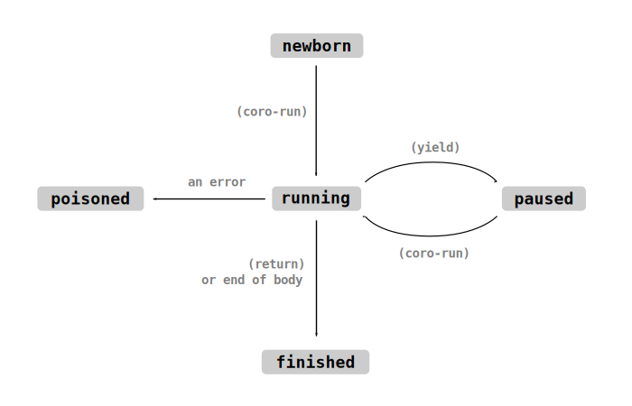

Overview
GameLisp's documentation is split into three parts:
-
The Reference Manual, which you're currently reading, is a rough overview of the language. It's written in an accessible style, so it doubles as a tutorial when read from beginning to end.
-
The standard library documentation describes all of the special forms, functions and macros which are built into the language itself. It covers most of the same material as Section 1 of the Reference Manual, but it's more formal, comprehensive and precise.
-
The
glspcrate documentation describes how to embed GameLisp into a Rust program. Section 2 of the Reference Manual will walk you through the basics.
Getting Started
If you haven't already, take a look at the Introduction for Rust Programmers and/or the Introduction for Lisp Programmers.
You can get a feel for the language by examining the source code for a few small games on the interactive playground.
To start setting up a GameLisp project of your own, check that you're running the latest version
of nightly Rust, and then add this line to your Cargo.toml:
[dependencies]
glsp = "0.2"
The following boilerplate code will load and run a single GameLisp source file named main.glsp in
the working directory, printing a stack trace if any errors occur. (The working directory is
usually the same directory which contains your project's Cargo.toml file.)
use glsp::prelude::*; fn main() { let runtime = Runtime::new(); runtime.run(|| { glsp::load("main.glsp")?; Ok(()) }); }
Once that's up and running, I'd recommend working your way through the Reference Manual from start to finish. It's not too long - it can be completed in three hours or so. As you progress, you can use your skeleton project to experiment with the language, the standard library, and the Rust API.
Syntax-highlighting schemes for Visual Studio Code and Sublime Text 3 can be downloaded from the GitHub repository.
If you've never worked with Lisp before, you might find some parts of GameLisp difficult to understand. If you're struggling, consider looking through some beginner-level material for another Lisp dialect, such as the excellent Practical Common Lisp by Peter Seibel.
⚠️ Stability Warning ⚠️
Because GameLisp is brand new, it currently provides no stability guarantees. The language, standard library and Rust API can and will change without notice. It's also immature enough that you may come across the occasional bug - if so, a bug report would be appreciated.
GameLisp can still be used for serious game projects (I'm using it for one myself!), but you'll need to be prepared to refactor your codebase from time to time.
Introduction for Rust Programmers
Rust is my favourite programming language. It has impeccable performance, an expressive and powerful type system, and a great community.
However, when it comes to game development, Rust has a few well-known problems. Compile times are painfully slow, and the type system can sometimes feel rigid or bureaucratic. When adding a new feature to a game, you'll often need to write code in a messy, fast, exploratory fashion - and in those cases, Rust can be a hindrance rather than a help.
GameLisp is a scripting language for Rust game development, designed while creating The Castle on Fire. It complements Rust by being very different from it: the Yin to Rust's Yang. Unlike Rust, it's an interpreted, dynamically-typed language, comparable to Lua, Python or Ruby. When using GameLisp, your project can be rebuilt in milliseconds rather than minutes, and there's no static type-checker to step on your toes.
Of course, you could already get those benefits by binding an existing scripting language to your Rust game project, using a crate like rlua for Lua or pyo3 for Python - so why add a new language into the mix? GameLisp has a few features which I think make it a better choice:
-
GameLisp is a "Rust-first" scripting language. Integration of GameLisp code into a Rust project is low-friction, high-performance, and completely memory-safe. Installation and distribution are trivial (it's just a crate!). Language features like
match,forandstructare designed to closely resemble their Rust counterparts. -
Garbage-collection pauses lead to dropped frames, and dropped frames lead to unhappy players. GameLisp has an unusual garbage collector which is designed to be called once per frame, every frame, spreading out the workload so that it takes up a consistent amount of runtime. In a real-world game codebase, GameLisp's garbage collector only takes up 0.1 milliseconds of frametime (that is, only 0.6% of the available time budget).
- More generally, microbenchmarks suggest that GameLisp's performance currently hovers somewhere between interpreted Lua and interpreted Python.
-
As a Lisp dialect, GameLisp is extremely customizable. Its macro system allows you to define new syntax which is indistinguishable from the built-in syntax; create domain-specific languages; or even customize fundamental language features like
classand=.- If you've used Lisp before and found that it wasn't to your taste, note that GameLisp avoids a few common pain points from other Lisp dialects.
-
GameLisp follows the Arc philosophy of being concise, easy to type and easy to edit. The most common types and functions tend to be only a few characters in length:
str,obj?,=,defn,rev. It includes several language features intended to reduce boilerplate, such as iterators, coroutines, pattern-matching, and (of course) macros. You could expect a thirty-line function in a Lua project to be a fraction of that length in a GameLisp project. -
GameLisp has a novel object system, inspired by Andy Gavin's writings on GOOL, which is uniquely well-suited for game development. All objects are state machines: in the same way that your Rust codebase might use an
enumor anOptionto statically guarantee that its data model is never invalid, GameLisp code can use astateform to explicitly model the life cycle of its in-game entities. GameLisp's object model avoids inheritance (OOP's biggest mistake!); instead, it encourages composition via classmacros and mixins.
If any of the above has whet your appetite, take a look at Getting Started for more information.
If you have previous experience with Lisp, you might be interested in the Introduction for Lisp Programmers.
Introduction for Lisp Programmers
Veteran Lisp programmers will find some parts of GameLisp's design surprising. I've done my best to preserve Lisp's strengths, but I haven't hesitated to remove or modify features which are standard in other Lisp dialects.
The most Lispy features of GameLisp are its homoiconicity, its Common‑Lisp‑style macro system, and the powerful metaprogramming which that implies. The parser, printer, symbols, and data‑as‑code should feel familiar to any Lisp programmer.
The least Lispy feature of GameLisp is the fact that it's not a functional language. Game code tends to be object-oriented and imperative, so GameLisp is an object-oriented, imperative language. Like Rust, it sprinkles in a little bit of functional flavour here and there (such as its Rust-style iterator adapters and pattern-matching) - but unlike Rust, most data is mutable-by-default and there are no restrictions on shared ownership.
Because it's not a functional language, GameLisp doesn't use lists. The singly-linked-list
data structure loses many of its advantages when coding in a non-functional style, while still having
many disadvantages (caddar, poor big-O complexity for many operations, extra pressure on the
allocator...), so I've completely removed cons cells from the language. Instead, (a b c)
represents a double-ended contiguous array
(specifically, a VecDeque).
I've found that for representing syntax, and as a general-purpose sequential data structure,
double-ended arrays are significantly more versatile and convenient than lists. The slightly
increased cost of (rest x) hasn't been a problem in practice.
(I'm aware that Lisp is an acronym for List Processing, and I do appreciate the irony...)
Finally, I've made GameLisp's syntax and keywords as "Rust-like" as possible, to minimize the mental friction when switching between the Rust and GameLisp parts of your codebase. I've also changed a handful of names to make them more concise or more descriptive. Notable changes:
-
lambdahas been renamed tofn. -
set!/setfhas been renamed to=.- The numeric-equality test
=has been renamed to==. - The naming convention for assignment,
set-something!, is nowsomething=. - I've retained the
!suffix for other mutating functions, likepush!andinc!, and the?suffix for predicates, likeint?.
- The numeric-equality test
-
progn/beginhas been renamed todo. -
The special values for true, false and nil are written as
#t,#fand#n. Nil, false, and the empty sequence()are all distinct from one another. -
letno longer defines a block: it introduces a new binding which is scoped to the end of its enclosing block, similar todefinein Scheme orletin Rust. -
Conditionals follow the conventions from Racket: prefer
condormatchrather thanif, unless it's a very brief conditional which fits into a single line. -
Sequence-processing primitives have been renamed to match their Rust equivalents:
lenrather thanlength,revrather thanreverse, and so on. -
A small number of new abbreviations (all of which have a straightforward representation):
[a b]to access the fieldbin the collectiona.@nameto access the fieldnameon a method's self-object.(.met-name a b c)to invoke the methodmet-nameon the objecta.(callee ..args x)to splay the contents of theargscollection into individual function arguments. This is similar to(apply), but more powerful and versatile.
-
The quasiquote syntax resembles Clojure. Forms are unquoted with
~rather than,, and symbols can be auto-gensymed with a#suffix, as inname#. We parse commas as whitespace so that function or macro arguments can be visually grouped together, like(let a b, c d).
Early on in GameLisp's development, its syntax and keywords were much more Scheme-like. These changes aren't arbitrary - each of them came from battle-testing GameLisp while developing The Castle on Fire. They each represent something which has caused me enough frustration that I thought it would be worth refactoring a dense, 15,000-line codebase to change it.
That being said, GameLisp is still in its infancy. If you're interested in shaping the growth of a new Lisp - specifically, if you've spent a little time working with GameLisp and you have a suggestion for its syntax, naming conventions or style conventions - please feel free to get in touch on GitHub. Some changes which are possible now might be impossible in twelve months' time, so don't hesitate!
The Language
This section begins with three in-depth chapters describing...
- The parser, which converts GameLisp source text into data.
- The expander, which takes GameLisp data and performs transformations on it.
- The evaluator, which takes expanded GameLisp data and executes it as a program.
The rest of this section then takes a more casual tour through the GameLisp Standard Library, introducing the most important built-in functions, macros and special forms.
After finishing this section, you should feel confident writing basic GameLisp code, referring back to the first three chapters and the standard library documentaton when necessary.
Syntax and Types
Here is a toy GameLisp program which calculates the first thirty Fibonacci numbers:
(let fibs (arr 0 1))
(while (< (len fibs) 31)
(push! fibs (+ [fibs -1] [fibs -2])))
(prn [fibs -1]) ; prints 832040
In this chapter, we will describe GameLisp's syntax in full; explain why it's so different from the syntax of languages like Rust; and start to think about the unique advantages which come from those differences.
Homoiconicity
All programming languages have something called an abstract syntax tree (AST): a data representation of a program's source code. The AST is usually hidden inside the compiler, where the programmer can't interact with it directly.
For example, this fragment of Rust source code...
#![allow(unused_variables)] fn main() { foo.bar(1) }
...could be represented by this (imaginary) AST data structure:
#![allow(unused_variables)] fn main() { Expression::MethodCall { callee: Identifier("foo"), method_name: Identifier("bar"), arguments: vec![ Expression::Literal(Literal::Int(1)) ] } }
You've probably also encountered text-based data interchange formats, like JSON or TOML. They provide a way for us to store common data structures, like arrays, hash tables, booleans and strings, in a human-readable file format which is easy to edit.
For example, this fragment of JSON describes an array which contains each of the integers from 0 to 4 inclusive:
[0, 1, 2, 3, 4]
GameLisp, like all Lisp languages, is homoiconic. This means that its AST is made out of simple, primitive data types like arrays and booleans - the same data types which you might encounter in a JSON file. Let's look more closely at the first line of our Fibonacci program:
(let fibs (arr 0 1))
This is just the text representation of an array with these three elements:
- The symbol
let - The symbol
fibs - A nested array, with these three elements:
- The symbol
arr - The integer
0 - The integer
1
- The symbol
A comparable JSON fragment would be:
["let", "fibs", ["arr", 0, 1]]
In other words, in GameLisp, code is data and data is code. A GameLisp program is not defined by a block of text - instead, it's defined by a tree of simple data-types. That tree could have been read from a text file, but it could just as well have been generated from nothing by a GameLisp program, or deserialized from a binary file using Serde, or any number of other possibilities.
Expansion
There's no sense in denying it: building programs out of array literals causes them to have a relatively ugly syntax. Why is GameLisp designed this way?
The big advantage is that, when code is data, it becomes much easier to write code which creates or modifies other code on your behalf. There's no need to mess around with an AST or manipulate the raw text of your program - it's all just arrays!
For example, here's a GameLisp program which reads in a GameLisp source file, performs
gettext‑style localization on it (replacing English string literals with French
string literals based on a one-to-one mapping listed in a file), and then runs the program:
(let replacements (parse-1 (read-file "en-to-fr.glsp")))
(let source (parse-all (read-file "source.glsp")))
(let-fn recursively-translate (val)
(match val
(coll : (or arr? tab?)
(map-syntax recursively-translate coll))
(st : str?
(or [replacements (? st)] st))
(val
val)))
(eval-multi (recursively-translate source))
To make this kind of code-generation more convenient, all GameLisp code is automatically put through an "expansion pass" just before being run. The expansion pass inspects each array in the program; checks whether that array's first element is the name of a macro (a function which transforms GameLisp source code into different GameLisp source code); and if so, uses that macro to transform the array into something else.
Unlike Rust macros, GameLisp macros are indistinguishable from the language's built-in syntax. This gives you the ability to profoundly customise the language - we'll explore some of the possibilities in the Macros chapter.
Representable Types
GameLisp is a dynamically-typed language. Memory locations like global variables, table fields and function arguments always store a single generic "value", which can belong to any of sixteen different primitive types. The full set of types is summarized below.
Of these sixteen types, nine of them can be losslessly converted into text and then read back in by the parser. We say that they are "representable", because they have an exact text representation. Valid GameLisp source code is entirely made out of these representable types.
nil
nil is the type of a value which is absent, uninitialized or undefined. In Rust terms, it
takes on the roles of both None and ().
It only has one value, which is represented as #n.
bool
bool is the type of a boolean value: either true (represented as #t) or false (represented
as #f).
When testing whether or not a value is true (for example, when deciding how an if expression
should branch), we consider #f and #n to be "falsy" values, and all other values to be
"truthy".
int, flo
The int type is a 32-bit signed integer number: an i32.
The flo type is a 32-bit floating-point number: an f32.
The text representation for numbers is almost identical to their representation in Rust. You can
embed underscores in numbers, and integers can be prefixed with 0b, 0o or 0x to change their
base.
There are only a few small changes compared to Rust's syntax:
- Type suffixes, like
_i8or_f32, are forbidden. - Infinities are represented as
+inf.0and-inf.0. - "Not a number" is represented as
nan.0.
We'll discuss these types in more detail in the Numbers chapter.
sym
The sym type is a symbol, also known as an interned string.
GameLisp uses symbols to represent identifiers and keywords in an efficient way. In the declaration
(let var-name 0), both let and var-name are symbols. Representing them as symbols rather
than strings makes several basic operations much faster: comparing one identifier to another,
looking up a global variable, parsing a keyword from a file, and so on.
A symbol's name is a sequence of one or more of the following characters: a to z, A to Z,
0 to 9, !, $, %, &, *, +, -, ., /, :, <, =, >, ?, ^, ~ or _.
A symbol can optionally be suffixed with a single #.
This opens up a much richer selection of identifiers, compared to Rust. Any of the following symbols would be valid names for a variable:
push!
int?
name=
foo:bar
-
//
1+
&$+%~#
When the parser encounters a sequence of characters which could represent a symbol, or could
represent a number or abbreviation, then the number or abbreviation will take
priority. This means that not all symbols are representable. The symbol -10 can exist, but if
you write it to a file, it will be read back in as a number instead.
char
The char type is a character. Its storage is identical to a Rust char.
Characters are represented by a backslash followed by the character itself - for example,
\a, \(, or \ü¶Ä.
Certain whitespace characters are represented by a backslash followed by their name: \space,
\tab, \newline, \return, and \nul.
You can represent an arbitrary unicode character as either...
\xNN, whereNNis a hexadecimal value from00to7finclusive.\u{NN}, where the curly braces may enclose anywhere from one to six hexadecimal digits.
str
The str type is a text string.
The representation of strings is identical to a Rust string literal, including all of the same
escape sequences. Raw strings, like r##"text"##, are supported.
Strings, characters and symbols are all discussed together in the Strings and Text chapter.
arr
The arr type is an array of arbitrary values. More specifically, it's a double-ended
queue, similar to VecDeque in Rust.
An array is represented by the open-parenthesis (, followed by the representation of zero
or more values, followed by the close-parenthesis ).
For example, an array containing squares of the first five positive integers would be represented
as (1 4 9 16 25). An empty array would be represented as ().
The Arrays chapter has more details.
tab
The tab type is a table (specifically, a HashMap) which maps values to values.
A table is represented by #(, followed by zero or more key-value pairs, each with the same
representation as an array of length two, followed by the close-parenthesis ).
For example, #((a b) (100 200)) represents a table which contains the value b bound to the key
a, and the value 200 bound to the key 100.
See the Tables chapter for more.
Whitespace
The parser ignores whitespace, except for marking the boundary between one token and the next. All comments are parsed as whitespace.
A line comment is introduced with a single ; and continues until the next newline.
A block comment begins with #| and ends with |#. Block comments can be nested. An unterminated
block comment is a syntax error.
Prefixing a value with #; will turn that entire value into a comment. This can be a convenient
way to comment out code:
(when (< a 100)
(new-handler (+ a 1))
#;(when handler-enabled?
(old-handler)))
The comma , is a whitespace character - this can be helpful for visually breaking up long
sequences into smaller groups.
(let a b, c d, e f) ; easier to read
(let a b c d e f) ; harder to read
Abbreviations
Some patterns appear so frequently in GameLisp programs that they've been given dedicated
syntax. All of these abbreviations represent an array. For example, if you try to print the
two-element array (splay val), it will be printed as ..val.
The abbreviations are:
| Abbreviation | Represents |
|---|---|
'val | (quote val) |
`val | (backquote val) |
~val | (unquote val) |
[x y] | (access x y) |
..val | (splay val) |
@val | (atsign val) |
.val | (met-name val) |
In addition, we use curly braces for string interpolation. When a string contains curly braces, it actually represents an array rather than a string. These two lines are exactly equivalent:
"text {a}{b} {c d}"
(template-str "text " a "" b " " c d)
Curly-brace characters in a string can be escaped by doubling them, as in {{ or }}. Raw
strings cannot be interpolated.
Type Summary
The seven non-representable primitive types are each discussed in future chapters. For now, a
quick summary of all of val's possible types:
| Name | Meaning | Truthy? | Reference? |
|---|---|---|---|
nil | Absent or undefined value | No | No |
bool | Boolean | Varies | No |
int | 32-bit signed integer | Yes | No |
flo | 32-bit floating-point number | Yes | No |
char | Character | Yes | No |
sym | Symbol | Yes | Yes |
arr | Array | Yes | Yes |
str | String | Yes | Yes |
tab | Table | Yes | Yes |
iter | Iterator | Yes | Yes |
obj | Object | Yes | Yes |
class | Class | Yes | Yes |
fn | Function | Yes | Yes |
coro | Coroutine | Yes | Yes |
rfn | Rust function | Yes | Yes |
rdata | Rust data | Yes | Yes |
Abstract Types
Abstract types group together multiple primitive types which share a common API.
| Abstract Type | API | Concrete Types |
|---|---|---|
num | Number | int, flo |
deque | Double-ended queue | arr, str |
callable | Function-call receiver | fn, rfn, class |
expander | Macro expander | fn, rfn |
iterable | Iterable | arr, str, tab, coro, iter |
Evaluation
In the previous chapter, we introduced the fact that GameLisp code is made out of a tree of simple values. Those values are sometimes parsed directly from a text file, but they can also be generated dynamically.
Unlike Rust, GameLisp code does not need to be compiled into a binary before it can be run. You just pass your code to GameLisp, and it's executed straight away.
This chapter will describe precisely what happens when GameLisp is asked to run a particular value as a piece of code.
Basic Evaluation
"Evaluating" a value means executing it as a piece of code. When we're talking about evaluation, we tend to say "form" rather than "value", but they're just two different names for the same thing. When a form is evaluated, it either returns another value or triggers an error.
Values of type nil, bool, int, flo, char, str or tab are self-evaluating. If you
evaluate a form of one of these types, no code is executed; the "evaluation" simply returns the
form itself.
Symbols evaluate to the current value of the variable which they name. Local variable bindings take precedence over global bindings. If there are no local or global bindings for the symbol which is being evaluated, it's an error.
Arrays are a little more complicated:
-
Empty arrays are self-evaluating.
-
When the array's first element is a symbol which names a special form, such as
quote,ifordo, then that form's special evaluation rules are applied. -
Otherwise, the array is evaluated as a function call. All of its elements are evaluated in order, from left to right. The result of evaluating the leftmost form becomes the "callee", the function which is being called. The results of evaluating all of the other forms (if any) are passed to the call as its arguments. The function call's return value becomes the result of the evaluation.
Attempting to evaluate a form of any non-representable type is an error.
A callee is usually a function. Functions can be defined either in GameLisp or in Rust. GameLisp comes with a very large number of built-in functions in its standard library.
For now, the main built-in functions you need to know are:
-
prntakes any number of arguments and prints their text representation to stdout, separated by spaces and followed by a newline.prdoes the same thing without the newline. Both functions return#n. -
int?,tab?and similar functions accept a single argument. They return#tif the argument belongs to the specified type, or#fotherwise. -
<,==,>=and so on perform numeric comparisons.+,-,%and so on perform basic arithmetic on numbers. It's an error to pass a non-number argument to any of these functions.- Note that GameLisp's arithmetic and comparisons use prefix notation rather than the
more familiar infix notation. Rather than writing
1 + 2 + 3, write(+ 1 2 3); and rather than writingi < len, write(< i len).
- Note that GameLisp's arithmetic and comparisons use prefix notation rather than the
more familiar infix notation. Rather than writing
-
arrconstructs a new array which contains all of its arguments. For example,(arr)will return a new empty array, and(arr 1 2 3)will return a new array which contains those three numbers.- You can "splay" the contents of one array into another with the abbreviation
..; for example,(arr 10 ..src)will create a new array which contains the integer10, followed by all of the elements from the arraysrc.
- You can "splay" the contents of one array into another with the abbreviation
A few examples of nested function calls:
(prn (> (+ 1 1 1) 2)) ; prints #t
(prn (pr "a ") (pr "b ")) ; prints a b #n #n
(prn (nil? #n) (int? 10) (bool? (int? "hello"))) ; prints #t #t #t
(prn (nil? 1 2)) ; error: too many arguments
Special Forms
"Special forms" are those which don't follow the basic evaluation rules described above. Because GameLisp's macro facilities are so powerful, it has a relatively small number of special forms, compared to languages like Rust.
do has the same effect as a block { } in Rust. (do a b c) evaluates a, then
evaluates b, then finally evaluates c, returning its value. (do), with no arguments,
evaluates to #n.
Many other forms establish an "implicit do". They contain zero or more child forms which are
evaluated one after the other, and they return the result of evaluating their last child form.
quote suppresses evaluation: (quote a) returns the value of a without
evaluating it. Remember that quote is usually abbreviated
as ', so we would write (quote val) as 'val. Quote is most often used either to stop a
symbol from being evaluated as a variable, or to stop an array from being evaluated as a function
call:
; without the quotes, this would be evaluated as printing the values of
; variables named "hello" and "world". with the quotes, it prints two
; symbols instead.
(prn 'hello 'world)
; without the quote, this would be evaluated as a call to the function
; named "alice", passing in the values of the variables "betty"
; and "carlo" as arguments, and then printing the call's return value.
; with the quote, it prints a literal array instead.
(prn '(alice betty carlo))
if performs conditional evaluation. It must always receive three forms: a
"condition" form, a "then" form, and an "else" form. First, the "condition" form is evaluated.
If its result is truthy, the "then" form is evaluated and returned;
otherwise, the "else" form is evaluated and returned.
; prints 5, but doesn't print 4
(prn (if (> 2 1)
5
(prn 4)))
Local Variables
GameLisp's local variables are lexically scoped and always mutable. They can be declared either
at the toplevel of a source file, or within an implicit do.
Just like Rust, you declare a new local variable by using the let special form.
Its first argument should be a symbol, and its optional second argument is a form which will be
evaluated to initialize the variable. When the second argument is absent, the variable's initial
value will be #n.
(let a 20)
(let b (* 20 a))
(prn b) ; prints 400
When let has three or more arguments, it's equivalent to multiple consecutive let forms
with one or two arguments each. We could rewrite the above as:
(let a 20, b (* 20 a))
(prn b) ; prints 400
let's first argument can be an arbitrary pattern rather than a symbol, but we'll discuss that
in a later chapter.
Global Variables
When evaluating a symbol which isn't bound to a local variable, it's assumed to refer to a
global variable instead. The symbol a-name will evaluate to the current value of the
global variable binding for the symbol a-name, or it will trigger an error if there's no
such binding.
GameLisp's global variables use late binding. This means that every time a global variable is accessed or mutated, that variable's binding is looked up at the last possible moment. If you're trying to access a global variable which doesn't exist, you won't find out when the code is loaded - the error is delayed until you actually try to access it. On the other hand, late binding means that there's no need to declare your variables in advance, so you won't have to struggle with order-of-declaration problems or circular dependencies.
Global bindings can be dynamically created, destroyed, accessed or mutated by calling the built-in
functions bind-global!, del-global!,
global and global=.
Built-in function calls like (prn 'hello) make use of global variables. When the GameLisp runtime
starts up, the symbol prn is bound to a global variable. The initial value of that global
variable is set to a Rust function which prints its arguments.
A local variable "shadows" a global variable which is bound to the same name:
(prn 'hello) ; prints hello
(let prn 10)
(prn 'world) ; error: callee is an int
Late binding enables some useful tricks. For example, if you're creating a 2D game and you find it inconvenient to look up your sprites in a hash table, you could arrange for them to be automatically bound to global variables instead:
(draw spr:zombie-head (- x 10) (- y 10))
(draw spr:zombie-body (- x 10) y)
Functions
Functions in GameLisp are like closures in Rust, in that they can be stored as the value of a
variable. Functions defined in GameLisp have the type fn, while functions defined in Rust
have the type rfn.
The fn special form defines a new function, which can then be called just like one of the
built-in functions:
(let triple (fn (n)
(let doubled (+ n n))
(+ n doubled)))
(prn (triple 70)) ; prints 210
The body of a function establishes an "implicit do", like the do special form. Each of
its body forms are evaluated one after the other, and the value of the final form is returned as
the result of the function call. You can return early using the return special
form.
By default, a function only accepts a fixed number of arguments:
(prn (triple)) ; error: too few arguments
(prn (triple 1 2)) ; error: too many arguments
However, a fn's parameter list is a pattern. Among other things, this
allows you to describe an optional parameter with the special syntax (? name default-val), or
capture zero or more arguments with the special syntax ..name.
(let sum-and-triple (fn (..nums)
(* 3 (+ ..nums))))
(prn (sum-and-triple 10 20 30)) ; prints 180
(let print-multi (fn (item (? times 1))
(forn (_ times)
(pr item " "))
(prn)))
(print-multi 'badgers) ; prints badgers
(print-multi 'badgers 3) ; prints badgers badgers badgers
Functions capture the lexical environment at their definition site. This means that you don't need to worry about local variables going out of scope:
(let f (do
(let captured 10)
(fn ()
captured)))
(prn (f)) ; prints 10, even though `captured` is out-of-scope
Macros
We've now described how GameLisp's parser converts text into data, and how GameLisp's evaluator executes data as code.
To complete the picture, there's one more step that we need to discuss. Just before evaluating any code, GameLisp's expander performs transformations on the code tree.
It's easy to hook in your own functions to customize the behaviour of the expander. These functions, which transform GameLisp data/code into different GameLisp data/code, are known as macros.
The Expansion Algorithm
This is the basic algorithm which GameLisp uses to expand a form in place:
-
If the form is not an array, or if it's an empty array, then no expansion is performed.
-
Expand the array's first element in place.
-
If the array's first element is now a symbol, and that symbol is currently bound to a macro function, then invoke that macro function, passing in all of the array's elements as arguments. Replace the array with the result of the macro invocation, then restart from step 1.
-
If the array doesn't start with
quote, expand each of its arguments in place, from left to right (starting with the array's second element, then moving on to its third element, and so on.)
In simple terms, this algorithm traverses the entire source tree, looking for arrays which resemble function calls. When the array's "callee" is a symbol which is bound to a macro, that macro is called like a function, and then the entire array is replaced with the result of the call.
; if the symbol `name` is bound to a macro, the expander will
; invoke ((macro 'name) a b c), and then replace the (name a b c)
; form with the result of that call.
(name a b c)
The (splice) macro is a special case: it's replaced by each of its argument forms, inserted
next to one another in-place.
(some-function (splice a) b (splice c d) (splice) e)
; after macro-expansion...
(some-function a b c d e)
Binding Macros
A macro is just a normal GameLisp function, of type fn or rfn. It takes zero or more
forms as its input, and produces one form as its output.
Like variables, macros can be bound globally or locally. To manipulate a symbol's global macro
binding, use the builtin functions bind-macro!,
del-macro!, macro and macro=.
To introduce a local macro binding, you can use the let-macro special form
wherever you would use let.
; these two forms are similar, but the first form binds its
; fn to a local variable, and the second form binds its fn
; to a local macro.
(let add (fn (a b)
(+ a b)))
(let-macro add (a b)
(+ a b))
Example: when and unless
Recall the syntax for the if special form: (if condition then else).
This syntax is easy to understand when working with very small forms which fit onto a single line, but when working with complicated multi-line forms, it's not always ideal.
; at a glance, you might mistakenly think that this form will
; print both lines when i is less than 100
(if (< i 100)
(prn "first line")
(prn "second line"))
; the do and #n forms here add a lot of visual noise
(if drawing-suppressed?
#n
(do
(draw-rect x y w h)
(draw-circle center-x center-y radius)))
This is exactly the type of problem which can be solved using macros: we have a small bit of awkward, repetitive or confusing syntax, and we'd like to make it more clear.
The when macro is shorthand for "if the condition is true, evaluate a do form; otherwise,
evaluate #n".
(bind-macro! 'when (fn (condition-form ..do-forms)
`(if ~condition-form
(do
~..do-forms)
#n)))
(when (< i 100)
(prn "first line")
(prn "second line"))
The unless macro is similar, but it evaluates the do form when its condition is false.
(bind-macro! 'unless (fn (condition-form ..do-forms)
`(if ~condition-form
#n
(do
~..do-forms))))
(unless drawing-suppressed?
(draw-rect x y w h)
(draw-circle center-x center-y radius))
Quasi-quotation
Our when and unless macro definitions introduced several unfamiliar pieces of
syntax:
`xis an abbreviation for(backquote x)~xis an abbreviation for(unquote x)~..xis an abbreviation for(unquote (splay x))
Recall that the quote special form, abbreviated ', suppresses evaluation.
If you want to produce a tree of nested arrays, then rather than constructing them
element-by-element, it's much simpler to just write them down as text and quote them so that
they're returned verbatim.
; these two forms produce equivalent results
'((one eins) (two zwei) (three drei))
(arr (arr 'one 'eins) (arr 'two 'zwei) (arr 'three 'drei))
backquote is like quote, but more powerful.
Firstly, backquote always allocates an entirely new, mutable array (whereas quote returns a
shared, immutable array - this is usually more efficient, but it's not always what you want). It's
like a shorthand for the (arr ...) constructor.
Secondly, backquote allows evaluated forms and quoted forms to be mixed with one another.
This is called "quasi-quotation", because only part of the form is quoted. If you want some forms
within a backquote to be evaluated while building the array, prefix them with ~. All other forms
will be quoted.
(let one-de 'eins)
(let two-de (fn () 'zwei))
; the following three forms all produce equivalent results
'((one eins) (two zwei) (three drei))
`((one ~one-de) (two ~(two-de)) (three ~(sym "drei")))
(arr (arr 'one one-de) (arr 'two (two-de)) (arr 'three (sym "drei")))
We briefly mentioned in the previous chapter that prefixing one of arr's arguments with ..
will cause the full contents of that argument to be "splayed" into the resulting arr. This is
particularly useful when working with backquote and unquote, as we demonstrated with
when and unless above.
macro-no-op
Within a macro, you can call the built-in function (macro-no-op). This immediately cancels
execution of the macro, and it suppresses step 3 in the algorithm.
The current form is left as it is, and the algorithm proceeds to step 4, expanding the form's
children as normal.
This enables the same name to be simultaneously bound both to a macro, and to a function or special
form. Without (macro-no-op), it would be impossible for a macro to expand to a function call
which shares the same name, because it would trigger an endless loop: (the-fn a b) would expand
to (the-fn a b) which would expand to (the-fn a b)... but (macro-no-op) breaks that cycle.
We've previously mentioned that the let special form can accept an arbitrary number of
arguments: with three or more arguments, it behaves like multiple consecutive calls to let.
This is actually achieved using a macro which is globally bound to the let symbol:
; this form...
(let a b, c d)
; ...expands to this one:
(splice
(let a b)
(let c d))
; the `splice` macro can expand into multiple forms, so it becomes:
(let a b)
(let c d)
; each of those (let) forms also invokes the (let) macro, but when that
; macro is invoked with two or fewer arguments, it just calls (macro-no-op)
More generally, macros and variables occupy entirely different namespaces. A particular symbol
can be bound to a global variable, a macro, both, or neither. A local variable binding will not
shadow a local or global macro, and let-macro will not shadow a local or global variable.
Order of Expansion
There's a small problem with our expansion algorithm: if global macros are defined dynamically during evaluation, and if code is expanded before being evaluated, how is it that a global macro defined early in a source file can be used to expand code later on in that same source file?
(bind-macro! 'fizz (fn ()
`(prn "fizz")))
; why can we use the 'fizz macro to expand this form?
(fizz)
It wouldn't be possible for us to interleave expansion with evaluation, because that would be much too slow: we would need to re-expand every form every single time that it's evaluated. This would force GameLisp to be an AST-walking interpreter, making it many times slower than it is today. It's essential that we have a separate expansion step before evaluation.
We could set up the expander so that it's capable of detecting bind-macro! calls and evaluating
them during expansion, but that would mean that bind-macro! is no longer truly dynamic. Patterns
like this would stop working:
(unless file-access-disabled?
(bind-macro! 'write-file (fn (file content)
`(stream-to-file ~file ~content))))
The solution is a simple compromise. When working their way through the forms in a GameLisp source file, the expander and evaluator "take turns". The first form is expanded; then the first form is evaluated; then the second form is expanded; then the second form is evaluated... and so on.
This means that a global macro binding can be used later on in the same source file, but it can't
be used later on in the same toplevel form. If you want to define a macro to be used locally,
you should use let-macro instead.
(do
(bind-macro! 'fizz (fn ()
`(prn "fizz")))
(fizz)) ; this doesn't work...
(fizz) ; ...but this does
(do
(let-macro fizz ()
`(prn "fizz"))
(fizz)) ; ...and this does
Toplevel Scopes
Although evaluation and expansion do only process one toplevel form at a time, that's not the
whole story. If each toplevel form were completely separate from the next, it would be impossible
to use forms like let or let-macro at the toplevel.
We say that under some circumstances, a group of forms is processed in a "toplevel scope". For
example, when loading a GameLisp source file, the toplevel scope continues until the end of
that file. This means that a toplevel let form works exactly as you would expect.
Evaluation APIs
The function for running a GameLisp source file is called load. It opens a source
file, reads it into a string, parses that string into a series of forms, and expands and evaluates
each form in the same toplevel scope.
GameLisp projects are likely to end up with a modular, branching tree of files: the source file
main.glsp calls (load "engine.glsp"), which calls (load "engine-drawing.glsp"), and so on.
In order to prevent the same source file from accidentally being loaded twice, we provide the
function require. If the current GameLisp runtime has already received a
require call for the specified file, it silently does nothing. Otherwise, require is exactly
the same as load.
eval and eval-multi are like load, but they receive
their forms as arguments rather than parsing them from a string. eval-multi accepts an array of
forms, expanding and evaluating those forms one after the other, all in the same toplevel scope.
eval is the same, but its argument is a single form rather than an array of forms.
Hygiene
If you've worked with Rust's macro_rules! macros, you'll know that they're hygienic: it's not
possible for a macro to name a local variable from outside its own lexical scope, unless that
name was passed in as one of the macro's arguments.
#![allow(unused_variables)] fn main() { macro_rules! unhygienic_macro { () => (println!("{}", local_name)); }; fn scope() { let local_name = 42; macro_rules! hygienic_macro { () => (println!("{}", local_name)); }; hygienic_macro!(); //prints 42 unhygienic_macro!(); //error: cannot find value `local_name` in this scope } }
This is good for program correctness, but it can also be inconvenient. Because GameLisp values convenience very highly, GameLisp's macros are unhygienic.
The main risks when working with unhygienic macros are that you may unintentionally refer to a local variable when you mean to refer to a global one, or you may "leak" a local variable which is supposed to be private to the macro's implementation.
; this macro checks that adding 1 to 2 produces 3 before executing a
; block of code. defensive programming!
(bind-macro! 'with-add-assertion (fn (..body)
`(do
(let tmp 1)
(unless (== (+ tmp 2) 3)
(bail "addition is broken!"))
~..body)))
; prints 1 rather than 5: addition is broken, but we don't detect it
; because `bail` is also broken!
(do
(let + -)
(let bail (fn (ignored) #n))
(with-add-assertion
(let x 3)
(prn (+ x 2))))
; the macro shadows `tmp`, printing 1 rather than the expected 7
(let tmp 7)
(with-add-assertion
(prn tmp))
You can solve the first problem by explicitly accessing the global rather than local version of a name. (However, this should rarely be necessary - it's unusual for a global name to be shadowed by a local one, and when it does happen, it's something that the overrider probably wants to affect all nested code, including code generated by macros.)
(bind-macro! 'with-add-assertion (fn (..body)
`(do
(let tmp 1)
(unless (== (+ tmp 2) 3)
((global 'bail) "addition is broken!"))
~..body)))
The second problem is more insidious and important: macros often need to define temporary
variables, and needing to come up with a unique name for each of them would be painful. This
is how the C preprocessor ended up with silly names like __FILE__ and __STDC_VERSION__.
We solve this problem using gensym, a built-in function which returns a unique
symbol. If you use a fresh gensym for each local binding generated by a macro, you don't need
to worry about accidentally shadowing the user's own variables:
(bind-macro! 'with-add-assertion (fn (..body)
(let temp-sym (gensym))
`(do
(let ~tmp-sym 1)
(unless (== (+ ~tmp-sym 2) 3)
(bail "addition is broken!"))
~..body)))
This is such a common pattern that we have special syntax for it: when backquote detects
a quoted symbol which ends with #, it replaces each occurence of that symbol with the result
of a (gensym).
(prn `(foo# foo# bar#)) ; prints #<gs:foo:0> #<gs:foo:0> #<gs:bar:1>
(bind-macro! 'with-add-assertion (fn (..body)
`(do
(let tmp# 1)
(unless (== (+ tmp# 2) 3)
(bail "addition is broken!"))
~..body)))
Manual Expansion
You'll sometimes want to expand a form without immediately evaluating it. For example, when writing a macro, you might want to perform some processing on the expanded version of its arguments, rather than the unexpanded version.
The built-in function expand takes a single value as its argument, recursively
expands it according to the usual algorithm, and then returns the
expanded result.
On the other hand, expand-1 gives you finer control over the expansion
process by performing a single "step" of the expansion algorithm at a time. It also allows you
to override the expansion function, and to detect when macro-no-op
is called.
Built-in Macros
In this chapter, we'll explore a few of the macros built in to GameLisp's standard library.
While reading through, bear in mind that none of these macros are doing anything which requires special support from the runtime - if they didn't exist, it would be possible for you to implement all of them yourself, using the information you learned in the previous chapter.
Control Flow
The when and unless macros were introduced previously.
while, loop, until
while and loop are similar to their Rust counterparts:
(let i 0)
(while (< i 5)
(inc! i)
(pr i " ")) ; prints 1 2 3 4
(loop
(prn "around and around we go"))
until is like while, but it terminates the loop when its condition is
"truthy", rather than stopping when it's
"falsy". We could rewrite the above while loop as:
(let i 0)
(until (>= i 5)
(inc! i)
(pr i " ")) ; prints 1 2 3 4
The break and continue macros work as they do in Rust.
By default, all looping constructs return #n, but break-with-value is supported:
(prn (loop
(break 10))) ; prints 10
and, or
The and and or macros provide lazy boolean evaluation, just like
Rust's && and || operators.
and evaluates each of its arguments from left to right. If one of them returns a
"falsy" value, the and form returns that value and does not
evaluate any more arguments. Otherwise, it returns the result of evaluating its rightmost
argument.
Similarly, or evaluates each of its arguments from left to right, stopping as soon as it
produces a "truthy" value.
cond
The cond macro is reminiscent of Rust's match, but it's simpler. (GameLisp does
also have a full fledged match macro, which we'll discuss in a future
chapter.)
cond receives a series of clauses, where the first form in each clause is a
condition. It checks each condition in turn, evaluating the body of the first clause whose
condition is "truthy", and returning the evaluation result of the
last form in that body.
(cond
(condition-0 ; if this condition is truthy...
then-0) ; this form is evaluated and returned
(condition-1 ; otherwise, if this condition is truthy...
then-1a ; this form is evaluated, then...
then-1b) ; this form is evaluated and returned
(condition-2) ; otherwise, if this condition is truthy, it's returned
(else ; otherwise...
then-e)) ; this form is evaluated and returned
The final clause's condition can be the symbol else, in which case the condition always
passes. If there is no else clause and none of the conditions are
"truthy", the cond form returns #n.
If a clause only contains a condition, without any other forms, then that clause's return value is the result of evaluating the condition itself.
When a branching expression is long enough that it needs to be split across multiple lines,
and it has both a "then" branch and an "else" branch, it's good practice to use cond
rather than if:
; can be confusing
(if (eq? emotion 'angry)
(draw 0 0 w h 'crimson)
(draw 3 3 (- w 3) (- h 3) 'cerulean))
; more verbose, but easier to edit and less confusing
(cond
((eq? emotion 'angry)
(draw 0 0 w h 'crimson))
(else
(draw 3 3 (- w 3) (- h 3) 'cerulean)))
Defining Globals
We introduced bind-global! in the Evaluation chapter.
bind-global! is such a common operation that we provide a macro shorthand for it,
def.
(def clip:door-open (load-clip "door-open.mp3"))
; ...is equivalent to...
(bind-global! 'clip:door-open (load-clip "door-open.mp3"))
Bear in mind that bind-global! will trigger an error if its global is already bound, so you
can't necessarily use def where you would use let. It's generally only used at the toplevel.
def's syntax is otherwise identical to let: it can accept three or more arguments
(equivalent to multiple consecutive def forms), and it performs destructuring
on its left-hand side.
defn is a similar shorthand for defining global functions:
(defn brew (cauldron)
(push! cauldron 'eye-of-newt))
; ...is equivalent to...
(bind-global! 'brew (fn &name brew (cauldron)
(push! cauldron 'eye-of-newt)))
And we have defmacro for global macros:
(defmacro with-pointy-hat (..body)
`(do
(put-on-hat)
~..body
(remove-hat)))
; ...is equivalent to...
(bind-macro! 'with-pointy-hat (fn &name with-pointy-hat (..body)
`(do
(put-on-hat)
~..body
(remove-hat))))
In both cases, a &name clause is used to assign a symbol as the function's name for debugging
purposes. This means that defn and defmacro generally lead to a nicer debugging experience,
compared to using bind-global! and bind-macro! directly.
Recursive Local Functions
Defining a local function which calls itself recursively can be awkward:
(let recurse (fn (n)
(cond
((> n 5)
(recurse (- n 1)))
(else
(prn n)))))
(recurse 10.5) ; error: unbound symbol 'recurse'
The outer call to recurse works as expected, but the let binding is not in scope for the
recursive call, so it attempts to access a global variable named recurse instead.
The let-fn macro solves this problem:
(let-fn recurse (n)
(cond
((> n 5)
(recurse (- n 1)))
(else
(prn n))))
(recurse 10.5) ; prints 4.5
This works by initializing the local variable to #n first, and then immediately assigning the
function to it, so that the local binding is in scope throughout the function's body. It's
equivalent to:
(let recurse)
(= recurse (fn (n) ...))
Assignment
In GameLisp, all variables and collections are mutable by default.
The = macro can be used to assign a new value to a place. A place might be a
global or local variable, an array element, a table value, or any number of other things.
Simple use of = looks like this:
(let a 10, b 20, c 30)
(= a 40)
(= b 50, c 60)
(prn (+ a b c)) ; prints 150
When ='s first argument is a function call, it will inspect the name of the function, then
replace the entire = form with a call to the corresponding "setter" function.
(= (macro 'brew) (fn () #n))
(= (global 'cursed?) #t)
; ...is equivalent to...
(macro= 'brew (fn () #n))
(global= 'cursed? #t)
Naming Conventions
Functions which assign a value to some memory location are suffixed with =, while functions
which perform other kinds of mutation are suffixed with !.
; reads as "set the global cursed? to #t"
(global= 'cursed? #t)
; reads as "push the new-cat to the arr-of-cats"
(push! arr-of-cats new-cat)
; reads as "increment the cauldron-weight"
(inc! cauldron-weight)
Where possible, it's good style to use the = macro, rather than calling a setter function
directly. The = macro is easier to spot when visually scanning through the source code.
In-Place Mutation
It's a very common operation to read the value currently stored in a place, pass it to a function (perhaps with some other arguments), and then assign the function's return value to that same place. We provide a number of macros to make this easier.
(let n 0)
(inc! n 5) ; add 5 to n
(mul! n 2 2 2) ; multiply n by 2, three times
(prn n) ; prints 40
inc!, dec!, mul!,
div!, div-euclid!, rem!,
rem-euclid!, abs! and clamp!
can be used to perform basic arithmetic in-place.
The (swap! a b) macro swaps the values stored in any two places.
; the two places can be different from one another
(swap! my-local-var (global 'my-global-var))
(swap! [my-arr 0] [my-arr -1])
Arrows
The -> and ->> macros perform a simple syntax
transformation which can make deeply-nested function calls easier to read.
The -> macro accepts a form followed by any number of arrays or symbols. The form is evaluated
as normal, and it's then passed through a chain of function calls, where the return value of
each call acts as the first argument to the next call.
(fourth (third (second (first a) b) c))
; ...could be refactored into...
(-> (first a) (second b) (third c) fourth)
; ...which is equivalent to...
(do
(let tmp-1 (first a))
(let tmp-2 (second tmp-1 b))
(let tmp-3 (third tmp-2 c))
(fourth tmp-3))
The ->> macro is similar, except that it passes in each form's result as the last argument
to the following call, rather than its first argument.
(fourth (third c (second b (first a))))
; ...could be refactored into...
(->> (first a) (second b) (third c) fourth)
; ...which is equivalent to...
(do
(let tmp-1 (first a))
(let tmp-2 (second b tmp-1))
(let tmp-3 (third c tmp-2))
(fourth tmp-3))
When you have a several function calls deeply nested inside one other, it's usually possible to
refactor them with either -> or ->>. Having data flow from start to finish can be much
easier to follow, compared to data which travels up and down a call-tree.
(+ ..(map (fn (n) (* n 2)) (filter even? (arr 1 2 3 4))))
; ...could be refactored into...
(->>
(arr 1 2 3 4)
(filter even?)
(map (fn (n) (* n 2)))
..+)
It's a little like a chain of method calls. In Rust, the above would be written as:
#![allow(unused_variables)] fn main() { [1, 2, 3, 4] .filter(is_even) .map(|n| n * 2) .sum() }
Numbers
Compared to other Lisps, GameLisp's numbers are relatively simple. A number may only be an int
(a 32-bit signed integer) or a flo (a 32-bit IEEE float). Rational fractions, arbitrary-precision
integers and complex numbers are not supported.
The API for manipulating numbers is mostly unsurprising - the full list of functions is available here. Some minor points:
-
Bit manipulation is supported for integers.
-
We provide a simple random number generator.
-
There is a distinction between
sign(which returns0,1or-1for any number) andflo‑sign(which returns the sign of a float as1.0,-1.0ornan.0).
(prn (sign -0.0)) ; prints 0
(prn (flo-sign -0.0)) ; prints -1.0
Promotion to Float
Floats are "contagious". When a function such as + receives both an integer and a
float among its arguments, the integer is promoted to a float before performing the operation, so
the return value is always a float.
(prn (+ 1 2 3 4)) ; prints 10
(prn (+ 1 2 3.0 4)) ; prints 10.0
(prn (/ 7 2)) ; prints 3
(prn (/ 7 2.0)) ; prints 3.5
(prn (% 5 1.5)) ; prints 0.5
Operations like min and clamp are the exception to the rule, because they return one of
their arguments unchanged.
(prn (max 1 2 3.0 4)) ; prints 4
(prn (clamp 1.0 3 5.0)) ; prints 3
NaN
According to the IEEE 754 specification, all comparisons involving NaN floats should return false. This means that NaN floats are unequal to themselves, and they're neither less than nor greater than any other number.
This rule is inconvenient when sorting numbers, and when working with hash tables, priority queues, and sorted arrays. GameLisp therefore imposes a total ordering on floats: NaN floats compare greater than all other floats (including positive infinity), and all NaN floats compare equal to all other NaN floats.
Wrapping Arithmetic
Integer arithmetic is always unchecked (wrapping), even when your crate is compiled in debug mode.
(prn (+ 1 2147483647)) ; prints -2147483648
This helps to keep the language simple. If GameLisp were to take Rust's approach to integer overflow, it would need to provide distinct APIs for normal, wrapping and checked arithmetic. In Rust, this adds a large complexity burden when working with integers.
GameLisp chose wrapping arithmetic over checked arithmetic in order to make fatal errors less likely. In game development, overflowing an entity's coordinates and getting a nonsensical value will usually be a minor bug, but overflowing an entity's coordinates and crashing the game's executable would be catastrophic.
Arrays
GameLisp's general-purpose sequential data structure is called an "array", but it's actually
a VecDeque.
A VecDeque is a growable ring buffer. It's very similar to a Vec, but with the added ability
to push and pop items from the start of the sequence in constant time. (Note that a VecDeque
is very different from a C++ std::deque,
which has an odd memory-allocation pattern - VecDeque allocates all of its elements
in a single buffer, just like a Vec.)
Basic Functions
The arr function will return a new array which contains all of its arguments.
When one of the arguments is an array, and that argument is prefixed with .., all of that
array's elements are copied into the array which is being constructed.
(prn (arr)) ; prints ()
(prn (arr 1 2 3 4)) ; prints (1 2 3 4)
(let src '(x y z))
(prn (arr 1 2 src 3 4)) ; prints (1 2 (x y z) 3 4)
(prn (arr 1 2 ..src 3 4)) ; prints (1 2 x y z 3 4)
(prn (arr ..src ..src)) ; prints (x y z x y z)
len returns the array's length, and empty? tests whether it
has a length of 0.
(prn (len '())) ; prints 0
(prn (len (arr 'a 'b))) ; prints 2
(prn (empty? (arr))) ; prints #t
(prn (empty? '(1))) ; prints #f
An array constructed using the arr function will be mutable. You can add any number of elements
to the start or end of an array using the functions push-start! and
push!, or you can remove one element at a time using
pop-start! and pop!.
(let metals (arr 'pewter 'silver 'copper))
(push! metals 'iron 'bronze)
(prn metals) ; prints (pewter silver copper iron bronze)
(prn (pop! metals)) ; prints bronze
(prn (pop! metals)) ; prints iron
(prn (pop-start! metals)) ; prints pewter
(prn metals) ; prints (silver copper)
(push-start! metals 'titanium 'electrum)
(prn metals) ; prints (titanium electrum silver copper)
Many other useful functions are described in the standard library documentation.
Indexing
The macro for looking up an element in any collection is called access.
To get the first element of an array, you might call (access the-array 0).
Because access is such a fundamental operation, it can be
abbreviated using square brackets. (access the-array 0)
would normally be written as [the-array 0] instead. Notice that this resembles the equivalent
Rust syntax: the_array[0].
Negative indexes count backwards from the end of the array. [names -1] returns the last element
in the names array, and [names -2] returns its second-to-last element.
Array elements are places, so they can be mutated using the
= macro.
(let blues (arr 'azure 'sapphire 'navy))
(prn [blues 2]) ; prints navy
(prn [blues -3]) ; prints azure
(= [blues 0] 'cerulean)
(= [blues -2] 'cobalt)
(prn blues) ; prints (cerulean cobalt navy)
Slicing
The access macro, and therefore the [] abbreviation, both support special syntax for accessing
multiple consecutive elements in an array. They use the : symbol, similar to Python's slice
syntax.
(let alphabet '(a b c d e f g h i j k l m n o p q r s t u v w x y z))
; elements from n to m are sliced using `n : m`
(prn [alphabet 3 : 8]) ; prints (d e f g h)
(prn [alphabet -10 : 21]) ; prints (q r s t u)
(prn [alphabet 5 : 5]) ; prints ()
; elements from 0 to n are sliced using `: n`
(prn [alphabet : 5]) ; prints (a b c d e)
(prn [alphabet : -23]) ; prints (a b c)
(prn [alphabet : 30]) ; an error
; elements from n to the end are sliced using `n :`
(prn [alphabet 23 :]) ; prints (x y z)
(prn [alphabet -1 :]) ; prints (z)
; the entire array can be sliced using `:`
(prn (eq? [alphabet :] alphabet)) ; prints #t
; the `:` symbol is whitespace-sensitive
(prn [alphabet 2:5]) ; an error
(prn [alphabet 3:]) ; an error
To keep things simple, all of these slicing operations will allocate, and return, a new array. Unlike Rust, there's no way to produce a reference which points into an array's interior.
The del! and remove! macros also support the same
slicing syntax.
(del! names 3) ; delete element 3
(del! names 2 : 5) ; delete elements 2, 3 and 4
(del! names :) ; delete every element
A slice is a place. Assigning an array to a slice will overwrite all of the elements stored there, changing the size of the array if necessary.
(let numbers (arr 0 1 2 3 4 5 6 7 8 9))
(= [numbers : 6] '())
(prn numbers) ; prints (6 7 8 9)
(= [numbers -2 :] (arr 42 42 42))
(prn numbers) ; prints (6 7 42 42 42)
(= [numbers :] '(5 5 5))
(prn numbers) ; prints (5 5 5)
GameLisp doesn't include some of the traditional Lisp functions for processing sequences, like
rest, butlast, take and drop. All of those functions can be expressed in a more versatile
and general way using the slice syntax.
Arrows
Deeply-nested use of the [] syntax can sometimes be visually confusing.
[[[the-array index] 0] start-index :]
"Arrow macros" were discussed in the previous chapter. The []
syntax works well when used with the -> macro:
(-> the-array [index] [0] [start-index :])
This is similar to the equivalent Rust syntax:
the_array[index][0][start_index..]
Strings and Text
In GameLisp, a string is an array which can only store characters.
In fact, strings support the full array API described in the previous chapter:
len, push-start!, remove!, indexing with integers, slicing, and so on. The only difference
is that assigning a non-character value to a string is an error.
This enables you to write code which is generic over both strings and arrays. For example, a function which reverses a string or array in-place:
(defn rev! (deq)
(ensure (deque? deq))
(forn (i (/ (len deq) 2))
(swap! [deq i] [deq (- i)]))
deq)
Notice that we test for the type deque, which is the abstract type
implemented by anything which supports an array-like interface. For a string,
arr? would return #f, but deque? returns #t.
String Storage
Because our double-ended queue API requires constant-time random access, we can't encode
strings using UTF-8: locating the nth character in a UTF-8 string is an O(n) operation.
Instead, we take a leaf out of Python's book.
By default, a string will use a VecDeque<u8> for its backing storage. The first time a
character with a scalar value above 255 is assigned to the string, it switches to a
VecDeque<u16>. Similarly, any scalar value above 65535 will cause the storage to be
converted to a VecDeque<char>.
This scheme has good performance characteristics. When compared to UTF-8, it typically uses equal or less storage, except when a string contains text from multiple scripts. Each string will change its character width at most two times; strings which only contain ASCII and the Latin-1 Supplement will never change their character width; and most non-Latin strings will typically change their character width zero or one times, rather than two.
Converting Values to Strings
Any value can be converted to text using the str function. It accepts zero or more
arguments; inserts spaces between adjacent non-character, non-string arguments; converts each
of those arguments to text; and returns the concatenation of all of the arguments' text as a
newly-allocated, mutable string.
(str) ; ""
(str \a \b \c) ; "abc"
(str 1 2 3) ; "1 2 3": note the spaces
(str 1 " " 2 " " 3) ; "1 2 3": equivalent to the previous call
(str "hello" \w "or" "ld") ; "helloworld": no spaces added between strs/chars
This is also how pr and prn process their arguments. prn
appends a UNIX-style line ending, "\n", to its output.
The sym function is similar to str, but it doesn't insert spaces between any of
its arguments, and it converts the result into a symbol. It's an error if the string is empty, or
if it contains anything other than the valid symbol characters. You can
test this using the functions valid-sym-char? and
valid-sym-str?.
(valid-sym-str? "") ; #f
(valid-sym-str? "hello-world") ; #t
(valid-sym-str? "hello world") ; #f
(valid-sym-str? "42.42") ; #t
(prn (sym "suffixed-" 100)) ; prints suffixed-100
(prn (sym "*invalid()\ncharacters[]")) ; an error
We also support template strings. A template string evaluates
to a newly-allocated, mutable string with values printed into it. It's like the format!()
macro in Rust, but more convenient.
(let arg 2)
(prn "1 + {arg} = {(+ 1 arg)}") ; prints 1 + 2 = 3
; within curly braces, adjacent values are separated by spaces
(prn "{(+ 1 1) (+ 1 2)} 4 {(+ 1 4)}") ; prints 2 3 4 5
Finally, you'll sometimes want to customize how numbers are printed.
(int->str i radix) will convert an integer to a string with the given
radix, and (flo->str f places) will convert a floating-point number to a
string with the given number of digits after the decimal point.
Non-Representable Values
In the first chapter of this section, we mentioned representable values. A representable value is one which can be converted to a string, and then parsed back from that string, with no loss of information.
It's still possible to print non-representable values, or convert them to a string. The printer
will usually prefix them with #< and suffix them with >, to make it obvious that they can't be
parsed.
(prn (gensym)) ; prints #<gs:0>
(prn (arr type-of +)) ; prints (#<rfn:type-of> #<rfn:+>)
(prn (fn () #n)) ; prints #<fn>
Parsing and Unparsing
The parser can be invoked manually using the parse-all function, which
receives a string as its argument, and returns an array of all of the values parsed from that
string. It's an error if the string contains invalid syntax.
When you know that the input contains exactly one form, parse-1 will parse
and return that form.
(parse-all "1 (a b)") ; returns the array (1 (a b))
(parse-all "hello") ; returns the array (hello)
(parse-1 "hello") ; returns the symbol hello
You'll sometimes have data which you want to store as text and then read back in later - for example, in a savegame or a configuration file. Under those circumstances, it's important that the data is representable. You'll need to avoid the following:
- Values which belong to a non-representable type, such as functions or iterators
- A reference cycle, which would cause the printer to get stuck in an endless loop
- Symbols like
-10or..name, which will be read back in as numbers or abbreviations - Symbols generated using
gensym, includingbackquote'sauto-gensym#feature
You'll also need to double-quote and escape strings, and convert characters to their literal
representation, i.e. printing the string "\a" rather than the character \a.
Checking all of these conditions every time would be tedious, so we provide a function
unparse which does the work for you. It's similar to str, but it guarantees
that if the resulting string is passed to parse-all, the parsed values will be equal
to unparse's arguments.
(prn (unparse "w" \x (arr 'y 'z))) ; prints "w" \x (y z)
(prn (str "w" \x (arr 'y 'z))) ; prints wx(y z)
(let non-repr-sym (sym "42"))
(prn (str non-repr-sym)) ; prints 42
(prn (unparse non-repr-sym)) ; an error
Output Streams
By default, pr and prn send their output to the standard output stream.
We also provide epr and eprn, which are identical except that
their output goes to the standard error stream.
It's possible for the host Rust program to customize these functions so that they send their output somewhere else - we'll discuss that in Section 2.
Pretty-Printing
Although GameLisp's syntax is easy enough to write, the raw data is not very pleasant to read when printed:
(prn '(cond
((>= (len ar) 2)
(run [ar 0] [ar 1]))
(else
(run [ar 0]))))
; prints (cond ((>= (len ar) 2) (run [ar 0] [ar 1])) (else (run [ar 0])))
GameLisp comes with a simple pretty-printer which attempts to format data/code with reasonable whitespace. It's not gold-standard, but it's usually good enough for debugging.
(pretty-prn '(cond
((>= (len ar) 2)
(run [ar 0] [ar 1]))
(else
(run [ar 0]))))
#|
prints:
(cond
((>= (len ar) 2) (run [ar 0] [ar 1]))
(else (run [ar 0])))
|#
All of the pretty-printing functions only accept a single value, which they convert to a pretty
string with no leading or trailing whitespace. Those functions are
pretty‑str, pretty‑unparse,
pretty‑prn and pretty‑eprn.
Tables
GameLisp's main associative data structure is the table. Tables are HashMaps which can use
arbitrary GameLisp data for their keys.
The basic operations are similar to those for an array. You can read or write table
entries using square brackets, [tbl key]. Assignment will create an entry if it doesn't already
exist. The has? function will tell you whether a key is already present, and
the del! and remove! functions will delete an existing
entry. len, empty? and clear! all work
as expected.
(let strengths (tab))
(= [strengths 'goblin] 3)
(= [strengths 'dragon] 8)
(prn (has? strengths 'goblin)) ; prints #t
(prn (has? strengths 'kobold)) ; prints #f
(prn [strengths 'goblin]) ; prints 3
(prn [strengths 'manticore]) ; an error
(prn (len strengths)) ; prints 2
(clear! strengths)
(prn (empty? strengths)) ; prints #t
Table Construction
Recall that the syntax for table literals is #((key0 value0) (key1 value1)).
To construct a new table dynamically, you can use the tab macro. It receives a number of array
forms of length two, and optionally a number of forms which evaluate to tables, each prefixed
with ... Each array form, and each entry from each of the tables, is treated as a (key value)
pair which is inserted into the table.
(let basic (tab ('a 'b) ('c 'd)))
(let more (tab ('e 'f) ..basic))
(prn more) ; prints #((a b) (c d) (e f)), not necessarily in that order
The extend! function receives a table as its first argument, followed by
any number of (key value) two-element arrays. Those key-value pairs are each inserted into the
table, overwriting elements which already exist. It's typically used to copy the full contents of
one table into another, by treating the source table as an iterator:
(extend! dst-table ..src-table)
Nonexistent Elements
GameLisp is normally very strict when it comes to whether or not an element of a collection exists. If you attempt to access a nonexistent table entry (or a nonexistent global, array index, object field, class field, or function parameter), it's an error.
This is in contrast to some other scripting languages, which return nil or undefined for
nonexistent elements. I find that this is not a sensible default: it can cause errors to
silently propagate, making refactoring and debugging more difficult.
If you need to access an element which may or may not exist, various macros support the special
syntax (? form). This syntax can be used in place of a key or an index. It will cause the
operation to succeed and return #n when an element is missing, rather than triggering an error.
(let heights (tab ('mira 165) ('paul 178)))
(prn [heights 'sara]) ; an error
(prn [heights (? 'sara)]) ; prints #n
(let ar (arr 10 20 30 40 50))
(= [ar -8] -20) ; an error
(= [ar (? -8)] -20) ; a silent no-op
(prn (remove! ar 2)) ; prints 30
(prn (remove! ar 7)) ; an error
(prn (remove! ar (? 7))) ; prints #n
(prn (global (? 'possibility))) ; prints #n
(bind-global! 'possibility 100)
(prn (global (? 'possibility))) ; prints 100
Key Equivalence
All hash tables need to enforce an equivalence relation on their keys. They use this equivalence relation to establish whether, when key B is inserted into the table, it should overwrite the entry previously created for key A.
Our hash tables can use any GameLisp data as a key, including #n and NaN floats. The equivalence
relation is represented by the function keys-eqv?. This function is very
similar to eq?, with a few small changes:
-
Numbers and characters act as distinct keys, even if they're numerically equal.
65,65.0and\Aare all==to one another, but they're not key-equivalent. -
For performance reasons, tables have to be compared for key-equivalence using
same?rather thaneq?. This means that two tables can have identical contents, but still be considered distinct when used as table keys. -
Objects and Rust data can overload
eq?, but there's no way to overloadkeys-eqv?.
Otherwise, table keys mostly work as you would expect. Arrays and strings are key-equivalent when they have the same contents. Other reference types are key-equivalent when they refer to the same object. Value types are equivalent when they have the same type and the same contents.
Iterators
Rust's iterators are a joy to use. They often enable you to replace a dozen lines of imperative code with a single line of declarative code, without obscuring your program's meaning.
This kind of expressiveness seemed like a great fit for GameLisp, so the language comes with an iterator library which is, for the most part, shamelessly copied from Rust. (To be fair, Rust originally copied many of its iterator APIs from Python...)
(let text "Revered. Exalted. Wise.")
(for word in (->> (split text \space) (rev) (map uppercase))
(pr word " ")) ; prints WISE. EXALTED. REVERED.
Iteration
The iter primitive type is like a Rust Iterator,
except that it's dynamically typed and heap‑allocated. (Don't panic! GameLisp is smart enough
to reuse an iterator's heap storage when you're done with it, so the allocation is very cheap.)
The simplest way to allocate a new iterator is by calling (iter x), where x is
some kind of collection or sequence. We say that if something can be passed to the iter
function, it belongs to the iterable abstract type.
The following types are iterable:
- Arrays iterate over their elements.
- Strings iterate over their characters.
- Tables iterate over their entries as
(key value)pairs. Each pair is a newly-allocated, two-element array.- Alternatively, you can use the
(keys tbl)function to iterate over a table's keys, or the(values tbl)function to iterate over its values.
- Alternatively, you can use the
- Coroutines will be discussed in the next chapter.
- Passing an iterator to
(iter x)is the identity operation - it just returnsx.
To advance an iterator and return its next item, use the iter-next!
function. If the iterator has no more items, it will return #n.
However, you can't assume that an iterator is finished just because it's returned #n - if so,
iteration over the array (1 2 #n 4 5) would stop after the first two items! Instead, you should
use the function iter-finished?. If it returns #t, then the iterator
has no more items, and the previous #n item should be discarded.
The for Macro
GameLisp comes with a for macro, which is very similar to Rust's for loop. It
takes an iterable, and evaluates its body once for each item produced by the iterable, binding
that item to a pattern. break and continue
work as expected.
(for element in '(1 2 3 4 5)
(prn (* element 10)))
(for (key value) in table
(ensure (sym? key))
(prn "{key}: {value}"))
for isn't doing anything special - it just invokes the iter, iter-next! and iter-finished?
functions.
Standard Iterators
GameLisp comes with a large library of built-in iterators. Almost all of Rust's standard
iterators are included: enumerate, zip, map,
lines, and so on. You can take a look at the standard library
documentation for the full list.
Unlike Rust, GameLisp's once and repeat iterators can accept
multiple arguments. If you want an empty iterator which won't produce anything, just call
(once) with no arguments.
rn counts upwards from one number to another. (rn 5 10) is equivalent to the Rust
iterator 5 .. 10, and (rn 8) is equivalent to 0 .. 8. If you need an inclusive upper bound,
you can use rni: (rni -5 5) is equivalent to -5 ..= 5.
Because rn is such a common iterator, we provide the forn macro to make it more
convenient to use. (forn should be read as a contraction of for rn, in the same way that
defn is a contraction of def fn.)
(forn (digit 0 10)
(prn digit))
; ...is equivalent to...
(for digit in (rn 0 10)
(prn digit))
Double-Ended Iterators
Some iterators are "double-ended": items can be produced both from their back and from their
front. For example, array and string iterators are double-ended. You can query whether an iterator
is double-ended using the iter-double-ended? function, and you can
produce items from the back of a double-ended iterator using
iter-next-back!.
rev takes a double-ended iterable and reverses it, treating its back as its front
and its front as its back.
Exact-Size Iterators
Some iterators know more about their length than others do. For example, a rn iterator knows
the exact number of items it will return, but a lines iterator has no way to predict its item
count in advance.
We don't provide an equivalent to Rust's size_hint(), because it wouldn't be useful.
GameLisp doesn't provide any way for you to manipulate the capacity of its collections or reserve
memory in advance.
Instead, the len function can accept an iterator as its argument. If that iterator
knows its exact length, it returns an integer; if it knows itself to be infinite, it returns the
symbol infinite; and otherwise it returns the symbol unknown.
(prn (len (rn 5))) ; prints 5
(prn (len (repeat #t))) ; prints infinite
(prn (len (split text \space))) ; prints unknown
There's nothing to prevent an array or string from being mutated during iteration (although this is strongly discouraged). This means that array and string iterators do not know their exact size. Pushing or popping from the end of a deque during iteration will work as expected, but pushing or popping from the start may cause the iterator to behave unpredictably.
Splaying
We've previously mentioned that you can use .., an abbreviation for
splay, to pass all of an array's elements to the array constructor.
(let triad '(x y z))
(prn (arr 'a 'b 'c ..triad 1 2 3)) ; prints (a b c x y z 1 2 3)
The splay operator is actually much more powerful than this. It will accept any iterable, and pass all of its items as arguments to any function call.
This means that there's no need for GameLisp to have a collect function: you can just splay
an iterator while calling arr, str, tab, or any
other constructor function.
(prn (str ..(take 5 (repeat \A)))) ; prints AAAAA
There's also no need for GameLisp to have apply: you
can just splay an array as a function's last argument instead.
If you want to take the sum of an array of numbers, there's no need to look up the API for fold.
Addition is a variadic function, so you can just call (+ ..the-array). The smallest element of
a collection is (min ..coll). To test whether an array of numbers is sorted, call
(<= ..numbers). Appending the contents of one array onto another is just (push! arr0 ..arr1).
Indexing
Arrays, strings, objects and classes are normally indexed using an integer or a symbol. However, it's possible to index them using an iterable instead.
This returns a new iterator which takes each item in turn from the original iterable, indexes
the collection using [coll item], and produces the resulting element.
In effect, [coll iterable] is equivalent to (map (fn1 [coll _]) iterable).
; re-order an array's elements
(let shuf (arr ..[src-arr '(1 3 0 2)]))
; equivalent to...
(let shuf (arr [src-arr 1] [src-arr 3] [src-arr 0] [src-arr 2]))
; swizzle an object's fields
(let offset (Vec3 x y z))
(let swizzled (Vec3 ..[offset '(y z x)]))
; discard every second character in a string
(let text "You're filled with DETERMINATION.")
(prn ..[text (step-by 2 (rn (len text)))]) ; prints Yur ildwt EEMNTO.
; use multiple object fields as consecutive function arguments
(draw-sprite spr ..[very-long-coordinates-name '(x y)])
; equivalent to...
(draw-sprite spr [very-long-coordinates-name 'x] [very-long-coordinates-name 'y])
Note that tables do not support this kind of indexing. This is because table keys can belong
to any primitive type, including iterators, arrays, strings, and so on. If you were to call
[table '(0 0 0)], it would be ambiguous whether you were trying to access the key (0 0 0)
once, or trying to access the key 0 three times.
Arrows
Creating a complicated iterator might involve several deeply-nested function calls.
As ever, the arrow macros are the best way to flatten out
a deep call hierarchy. ->> is often a good choice when working with iterators,
because iterator adapters usually expect an iterator or
iterable as their last argument.
(->> my-array (step-by 3) (map (fn1 (+ _ 10))) enumerate)
; ...is equivalent to...
(enumerate (map (fn1 (+ _ 10)) (step-by 3 my-array)))
The arrow macros include special handling for the splay operator. If you prefix one of the
arrowed function calls with .., then the result of the previous function will be splayed.
(->> my-array (step-by 3) (map abs) (filter (fn1 (< _ 10))) ..arr)
; ... is equivalent to...
(arr ..(filter (fn1 (< _ 10)) (map abs (step-by 3 my-array))))
Coroutines
A coroutine is a function which can be paused, and later on resumed from where it left off.
Coroutines are defined using the yield special form. When yield is encountered
within a function, that function pauses its execution, and control flow returns to the caller.
Later, coro-run can be used to resume the coroutine, which causes execution
to restart from the yield form.
(defn example+ ()
(pr "first ")
(yield)
(prn "third"))
; invoking a function which contains a (yield) does not start its execution.
; instead, it returns a coroutine which is paused at the start of the
; function's body.
(let coroutine (example+))
(coro-run coroutine) ; executes up until the yield
(pr "second ")
(coro-run coroutine) ; executes from the yield to the end of the function
; the above code prints: first second third
Coroutines can pass values back and forth to their caller when they are paused and resumed.
(yield x) causes the value x to be returned from the (coro-run ...) call.
(coro-run coroutine y) causes the value y to be returned from the (yield) call. In both
cases, when no value is specified it defaults to #n.
; this coroutine returns values to its caller. note that coroutines can
; receive arguments, just like a normal function call
(defn increment-forever+ (n)
(loop
(yield n)
(inc! n)))
(let co (increment-forever+ 100))
(prn (coro-run co)) ; prints 100
(prn (coro-run co)) ; prints 101
(prn (coro-run co)) ; prints 102
; this coroutine receives values from its caller
(defn overly-elaborate-prn+ ()
(loop
(prn (yield))))
(let co (overly-elaborate-prn+))
(coro-run co) ; run until the first (yield)...
(coro-run co 'alpha) ; the coroutine prints alpha
(coro-run co 'beta) ; the coroutine prints beta
(coro-run co 'gamma) ; the coroutine prints gamma
fn-yields? will tell you whether or not a function will create a
coroutine when called.
By convention, functions which yield have + appended to the end of their name. This helps
to prevent mistakes when refactoring a non-yielding function into a yielding function, or
vice-versa.
Life-Cycle of a Coroutine
The coro-state function returns a symbol describing the current state of a
coroutine: newborn, running, paused, finished or poisoned.

When you call a function which has at least one yield form somewhere in its body, it will return
a newborn coroutine. You can execute it with coro-run; a currently-executing coroutine is
in the running state. When it encounters a yield form, it will become paused, meaning it
can be resumed again with coro-run. When a running coroutine returns, it will transition to
the finished state, which is the end of its life-cycle.
If an error bubbles through a coroutine while it's executing, we assume that it's
been left in a disorderly state. Its state is set to poisoned, and any attempt to resume it
will trigger an error. This is analogous to how Rust's Mutex type works.
Coroutines and Iteration
Coroutines are iterable. A coroutine iterator will repeatedly call (coro-run the-coro) and
produce each value which the coroutine yields.
This can be used to implement custom iterators:
; a coroutine-based implementation of the `lines` function. copies
; a string and then splits it into individual lines, yielding one
; line at a time. once there are no lines left, it returns.
(defn lines+ (source-str)
(let st (clone source-str))
(while (> (len st) 0)
(let pos (position st \newline))
(cond
((nil? pos)
(yield st)
(break))
(else
(let line (remove! st : pos))
(pop-start! st)
(yield line)))))
(prn (arr ..(lines+ "aaa\nbbb\nccc"))) ; prints ("aaa" "bbb" "ccc")
Stackful and Stackless Coroutines
In languages like Lua and Ruby, coroutines are "stackful". Each coroutine allocates its own call-stack, and it can yield from arbitrarily deep within that call-stack.
On the other hand, GameLisp's coroutines follow the model set by Rust, Python, C# and C++. Our
coroutines are "stackless": they only store enough data to pause a single call-frame, so it's
not possible for a coroutine to call a non-coroutine function and yield from inside it. You
can only yield from the body of the coroutine function itself.
The primary reason for this is that it's much more efficient. Each and every Ruby coroutine
(known as a Fiber) allocates a four-kilobyte, fixed-size callstack. In contrast, a typical
GameLisp coroutine will only allocate 100 to 300 bytes of data - about one-twentieth of the memory
burden!
The other reason to prefer stackless coroutines is that they can be nested almost as
straightforwardly as stackful coroutines. The yield-from macro will loop
through an iterable, repeatedly yielding each of its results until it's finished. When the
iterable is a coroutine, this is roughly equivalent to calling a function and yielding from
inside it.
; a coroutine which keeps yielding until some event is triggered,
; and then returns
(defn wait-until-trigger+ (trigger-name)
(until (trigger-set? trigger-name)
(yield)))
; a coroutine which controls the behaviour of an entity. the coroutine is
; resumed once per frame. it will do nothing until the 'can-move event
; has been triggered, and then it will horizontally slide towards the
; target x coordinate, bit by bit, until it has been reached.
(defn move-to+ (self x-target)
(yield-from (wait-until-trigger+ 'can-move))
(until (= [self 'x] x-target)
(seek! [self 'x] x-target 1.5)
(yield)))
Why Coroutines?
Coroutines can be thought of as a form of cooperative multitasking. They behave like
operating-system threads, but rather than being interrupted at unpredictable intervals by the
scheduler, they're allowed to execute for as long as they please. The coroutine itself decides
when to manually end its time-slice and yield control back to the "scheduler" (in this case,
the function which invoked coro-run).
This type of control flow is a natural fit for game programming. Game worlds tend to be filled with entities which perform complicated behaviours, splitting their actions into tiny incremental "steps". When the entity isn't doing anything too elaborate, it's easy to model their behaviour as a simple function which is called once per frame - but when you want to do a few different things in sequence, "action A followed by action B followed by action C", then coroutines are usually a much better choice.
Consider a cutscene script controller. We want this cutscene to show a dialogue bubble until the player dismisses it, then have the main character walk to the right until they reach a waypoint, then pause dramatically for three seconds, then show another dialogue bubble. Cramming all of this state into a single event-handler function is a real challenge:
(defn step-handler (self)
(match [self 'current-state]
('start
(= [self 'bubble] (speak self "You don't understand! I just have..."))
(= [self 'current-state] 'bubble-0))
('bubble-0
(when (bubble-finished? [self 'bubble])
(= [self 'current-state] 'walking-to-waypoint)))
('walking-to-waypoint
(step-towards-point self (waypoint 'dramatic-pause))
(when (at-waypoint? self (waypoint 'dramatic-pause))
(start-sound 'howling-wind)
(= [self 'pause-timer] 3.0)
(= [self 'current-state] 'pausing)))
('pausing
(dec! [self 'pause-timer] :dt)
(when (<= [self 'pause-timer] 0.0)
(= [self 'bubble] (speak self "...too many Incredibly Deep Feelings."))
(= [self 'current-state] 'bubble-1)))
('bubble-1
(when (bubble-finished? [self 'bubble])
; leave the viewer to process the scene's breathtaking emotional pathos
(= [self 'current-state] 'finished)))))
The equivalent coroutine is a beauty:
(defn run-cutscene+ (self)
(yield-from (speak+ self "You don't understand! I just have..."))
(yield-from (walk-to-point+ self (waypoint 'dramatic-pause)))
(start-sound 'howling-wind)
(yield-from (wait-secs+ 3.0))
(yield-from (speak+ self "...too many Incredibly Deep Feelings.")))
All of that state which we had to manually store elsewhere is now implicit in the coroutine.
The child functions would be simpler, too: the coroutine walk-to-point+ is likely to be much
easier to implement, compared to the function step-towards-point. Our coroutine even has
slightly better performance! Previously we were calling (waypoint) every frame because it would
have been too much effort to cache it, but the coroutine makes it obvious that rechecking the
waypoint every frame is actually the more-expensive option.
Cutscene scripting is usually such a nightmare that many smaller game projects either give up hope of doing anything interesting with it, or come up with some hacky, limited, data-driven cutscene control library. But with the incredible power of coroutines, it's all just code, and you can make your cutscenes as complicated and emotional as you like! Try not to make your players cry too much.
Coroutines are particularly powerful when combined with explicit state machines. We'll explore the possibilities in more depth when we discuss object-oriented programming.
Patterns
Checking whether a value has a particular shape, and extracting other values from its interior, is a fundamental operation. In languages which don't have first-class support for destructuring, this operation tends to be unnecessarily difficult. For example, binding array elements to local variables in C is more verbose than it ought to be:
assert(array_len >= 3);
float x = array_ptr[0];
float y = array_ptr[1];
float z = array_ptr[2];
Likewise for iterating over an array of 3D points in Lua:
for _, point in ipairs(points) do
local x, y, z = point.x, point.y, point.z
-- ...
end
GameLisp includes destructuring facilities which are as powerful as Rust's, with a number of changes and additions to reflect the fact that GameLisp is dynamically-typed rather than statically-typed.
Basic Patterns
A pattern may appear anywhere that you might create a new variable binding: the left-hand-side
of a let, def, field, or
with-global form, a function parameter, or the item in a
for loop.
A pattern is a form, but it's not evaluated or macro-expanded in the normal way. Patterns have their own special evaluation rules.
When a pattern is a symbol, it matches any value and binds it to that symbol.
(let x-doubled (* x 2))
The symbol _ is special: it matches any value and discards it.
(forn (_ 100)
(do-something-one-hundred-times))
(let _ 100)
(prn _) ; an error: the symbol _ is not bound to a variable
Self-evaluating forms, like strings, quoted forms, tables, empty arrays, and numbers, only match a
value which is eq? to the pattern. The value is then discarded.
; both of these succeed, but without creating any bindings
(let 10 (+ 5 5))
(let #((a b)) (tab ('a 'b)))
Unlike Rust, patterns in let bindings are not required to be infallible. Any pattern can fail
to match. If a mismatch occurs in let, def, field, with-global or for, it's an error.
(let "xyz" (arr 'x 'y 'z)) ; an error
(let 'a-symbol (tab ('a 'b))) ; an error
You can deal with fallible bindings using the match,
when-let and matches? macros.
matchchecks a value against a series of patterns and executes some code for the first pattern which successfully matches the value, returning#nif no patterns match.when-letdoes the same for a single pattern.matches?returns#twhen a value matches a pattern, or#fwhen it's a mismatch.
(match (len ar)
(0
"empty array")
(1
"array with a single element")
(n
"array with {n} elements"))
A pattern isn't always just a single form; it's sometimes described by a series of consecutive
forms. For example, wherever you would write a pattern, you can instead write x at pat. This
processes pat as normal, but also binds the additional variable x, which is set to the
pattern's input value. (This is similar to Rust's x @ pat syntax.)
Predicates
A "predicate" is a function which asks a question. For example, the functions
int?, >=, eq? and
fn-yields? are all predicates.
Any pattern can test an arbitrary predicate using the syntax pat : pred?. When pat matches
the input value, the predicate function pred? is invoked - if the result is false, then
the match becomes a mismatch.
Note that the : is whitespace-sensitive, so pat: pred? would be invalid syntax.
(match arg
(i : int?
"the integer {i}")
(f : flo?
"the floating-point number {f}")
(val
(bail "expected a number but received {(type-of val)}")))
(let result : num? (calculate-number))
(when-let f : flo? result
(prn "calculated the floating-point number {f}")
(prn (matches? result _ : int?))) ; prints #f
When pred? is a symbol, the predicate is invoked on the input value being tested,
(pred? input). Under those circumstances, to avoid confusion, pat must be a symbol or _.
When pred? is not a symbol, it's evaluated as an arbitrary form which has access to all of
the pattern's bindings. If the evaluation result is false, the pattern is a mismatch. The
form will usually be a function call which inspects one or more of the pattern's variables.
; a predicate can be used like a match guard in Rust
(match (calculate-x)
(x : (== x 0)
"zero")
(x : (> x 0)
"the positive number {x}")
(x
"the negative number {x}"))
You can test arbitrarily complex predicates by defining your own functions.
(let-fn u8? (n)
(and (int? n) (<= 0 n 255)))
(defn rgb (r : u8?, g : u8?, b : u8?)
(bitor (bitshl r 16) (bitshl g 8) b))
(ensure (== (rgb 0xb7 0x41 0x0e) 0xb7410e))
Predicates can perform Boolean operations using the forms (and pred? ...), (or pred? ...) and
(not pred?). These forms can be arbitrarily nested inside one another.
(match f
(f : (and flo? (or inf? nan?))
"a weird float {f}")
(f : flo?
"a normal float {f}")
(_
"not a float"))
(when-let sym : (and sym? has-global?) input
(let g (global sym))
(prn "the input is a symbol bound to the global {g}"))
Predicates are not a static type system! When you place a predicate on a variable's definition, it only checks the variable's initial value - if the variable is mutated, the predicate may no longer hold.
(def name : str? "global string")
(= name 'assigned-symbol)
(prn (str? name)) ; prints #f
Arrays
An array pattern will match an array value with exactly the same number of arguments.
(let (one two three) '(1 2 3))
(let (one two) '(1 2 3 4 5)) ; an error
Each element of the array pattern is, itself, a pattern.
(let ((a b) (c d)) '((1 2) (3 4)))
Complex patterns should be separated using commas to improve readability.
(defn constant-fold (form)
(match form
((callee : (has? foldable-ops callee), a : num?, b : num?)
((global callee) a b))
(form
form)))
(prn (constant-fold '(+ 2 3))) ; prints 5
(prn (constant-fold '(+ var-name 3))) ; prints (+ var-name 3)
Predicates can access variables defined for earlier array elements - not just their current element.
(let (one, two : (> two one)) '(1 2))
In forms like let and def, when there is no initializer value, the pattern will automatically
succeed and set all of its bindings to #n. This is a convenient way to declare several
uninitialized local variables at once.
(let (width height depth))
(prn width height depth) ; prints #n #n #n
Optional Patterns
(? pat) is an "optional pattern" - it represents an element which may or may not exist. In an
array pattern, if that element is missing (because the array is too short to have an element at
that index), the pattern unconditionally succeeds and all of its bindings are initialized to
#n.
(let (a (? b) (? c)) '(1 2))
(prn a b c) ; prints 1 2 #n
; the predicate succeeds, even though (int? #n) is false
(let (d : int?, (? e) : int?) '(4))
(prn d e) ; prints 4 #n
An optional array element may specify a default value, which is used in place of #n when the
element is missing. The syntax is (? pat init). When the pattern has a predicate,
(? pat init) : pred?, the default value is tested by the predicate.
(let (x y (? z 0.0)) '(5.0 3.5))
(prn x y z) ; prints 5.0 3.5 0.0
While a default value is being evaluated, any bindings from earlier array elements will be in scope and initialized.
(let (small (? big (* small 10))) '(5))
(prn small big) ; prints 5 50
Rest Patterns
..pat is a "rest pattern" - it can be used to capture zero or more contiguous array elements
which were not captured by any other patterns. Each element is tested against pat (including
calling pat's predicate, if it has one, for each element individually). The rest pattern only
matches when all of the individual elements match. Each variable binding in pat is bound to a
newly-allocated array which contains one value for each element.
(let pairs '((a 1) (b 2) (c 3)))
(let (..(letters : sym?, numbers : int?)) pairs)
(prn letters numbers) ; prints (a b c) (1 2 3)
; the most common use of rest patterns is to unconditionally collect
; part of an array into a variable.
(let (first, second, ..rest : int?) '(0 1 2 3 4))
(prn first second rest) ; prints 0 1 (2 3 4)
; the .._ pattern can be used to discard any number of array elements.
; in that case, no allocation will be performed.
(let (first .._ last) '(0 1 2 3 4))
(prn first last) ; prints 0 4
The order of optional and rest patterns is quite flexible. Any of the following would be valid array patterns:
(a (? b) (? c))
(a (? b) ..c)
(..a b c)
(a ..b c)
Functions
Function parameter lists are just array patterns, where the input array contains all of the arguments to the function call. This means that functions and macros can take advantage of the full power of predicates, optional patterns, and rest patterns.
(defn draw-text (text : str?, x : num?, y : num?,
(? font simple-font) : (is? font 'Font))
...)
(defn process (first ..rest)
...
(unless (empty? rest)
(process ..rest)))
Array patterns can be used to emulate function overloading. For example, this function expects a different parameter list depending on whether its first argument is a deque or a table:
(defn search (..args)
(match args
((haystack : deque?, needle)
(any? (fn1 (eq? _ needle)) haystack))
((haystack : tab?, key, value)
(eq? [haystack key] value))
(args (bail "invalid argument list {args}"))))
GameLisp can optimize functions more aggressively when their parameter list follows all of these rules:
..restis either the last parameter, or absent.- For
(? opt)and..restparameters, the pattern itself is_or a symbol. - For
(? opt init)parameters,initis either self-evaluating (like()) or quoted (like'(6 7)).
or Patterns
or isn't only useful in predicates. You can use an (or pat ...) form wherever you would use
any other pattern. It matches, and binds, the first matching child pattern. If none of the child
patterns match, the or pattern is a mismatch.
You can think of or as being like | in Rust patterns.
; match on a valid (+), (-), (*) or (/) form. (/) requires at least
; one argument, but the others can be called with zero arguments.
(match form
((or ((or '+ '- '*) ..rest)
('/ first ..rest))
...))
All possible variable bindings from all of the child forms will be bound by the or pattern.
If a variable isn't present in the sub-pattern which matches, that variable will still be bound,
but it will be initialized to #n.
; search for an item in a deque, which can be defined either by a predicate
; callback, or by an argument which should be (eq?) to the item.
(defn search (haystack : deque?, (or is-needle? : callable?, needle-item))
(for (i item) in (enumerate haystack)
(cond
((nil? is-needle?)
(when (eq? needle-item item)
(return i)))
(else
(when (is-needle? item)
(return i)))))
#n)
Indexing
When a pattern is an access form - in other words, when a pattern is enclosed
in square brackets - it will attempt to index its value. The pattern matches if all of the indexes
are present.
The access form's children are usually symbol patterns, in which case each indexed value is
bound to the corresponding name.
(let [x y z] 3d-vector)
(let length (cbrt (+ (* x x) (* y y) (* z z))))
(let [height : int?, weight : flo?] physical-properties)
Each child form may also be an array (index pat), where index is a literal value (not
necessarily a symbol!) used to index the collection, and pat is a pattern which is matched
against the resulting value.
(let [(x src-x) (y src-y)] src-2d-vector)
(let [(x dst-x) (y dst-y)] dst-2d-vector)
(prn "from ({src-x}, {src-y}) to ({dst-x}, {dst-y})")
(let [(0 zeroth : flo?) (500 five-hundredth : flo?)] huge-array)
? and .. patterns work in much the same way that they do for arrays. The .. pattern
will collect all remaining key/value pairs into a table; it only matches input collections which
are, themselves, tables. Any predicates are tested against the value, rather than the key.
(let table #((a 1) (b 2) (d 4) (e 5)))
(let [a (? b) (? c) ..rest : int?] table)
(prn a b c) ; prints 1 2 #n
(prn rest) ; prints #((d 4) (e 5)), not necessarily in that order
File Formats
If you have some custom data files which your game should store - for example, the file format used by your level editor - then you should consider storing them in the GameLisp text format.
GameLisp already has powerful facilities for parsing and manipulating its own data-types, but patterns take things to the next level. For example, a function to validate the level file-format for a simple role-playing game might look like this:
(defn level-valid? (lvl)
(matches? lvl [
name : str?
background-music : sym?
(tiles (..(x : int?, y : int?)))
(entities (..entity : entity-spec-valid?))
]))
(defn entity-spec-valid? (entity)
(matches? entity [
class-name : sym?
(coords (x : int?, y : int?))
(? init-args ()) : arr?
]))
; the (level-valid?) function would match a level file with these contents
#(
(name "tower-exterior")
(background-music aria)
(tiles ((0 5) (3 1) (1 1) (1 1) #|and so on|#))
(entities (
#((class-name TowerGuard) (coords (70 95)) (init-args (alert)))
#((class-name Portcullis) (coords (70 60)))
))
)
; contrast similar code written in a more imperative style...
(defn entity-spec-valid? (entity)
(and
(sym? [entity (? 'class-name)])
(has? entity 'coords)
(do
(let coords [entity 'coords])
(and
(arr? coords)
(== (len coords) 2)
(do
(let x [coords 0], y [coords 1])
(and (int? x) (int? y)))))
(or
(not (has? entity 'init-args))
(arr? [entity 'init-args]))))
(defn level-valid? (lvl)
(and
(str? [lvl (? 'name)])
(sym? [lvl (? 'background-music)])
(has? lvl 'tiles)
(block tiles-checker
(for tile in [lvl 'tiles]
(unless (and (arr? tile) (== (len tile) 2) (int? [tile 0]) (int? [tile 1]))
(finish-block tiles-checker #f)))
#t)
(has? lvl 'entities)
(all? entity-spec-valid? [lvl 'entities])))
Patterns are concise and powerful, but they should be used cautiously - it can be difficult to fully understand the behaviour of a complex pattern. If you find that a pattern you've written isn't self-explanatory at a glance, consider refactoring it into multiple simpler patterns, even if that makes your code more verbose.
Cheat Sheet
| Pattern | Meaning |
|---|---|
_ | Match, and discard, any value |
"hello" | Match, and discard, the string "hello" |
'world | Match, and discard, the symbol world |
x | Match any value and bind it to x |
x : pred? | Match a value for which (pred? x) is true, and bind it to x |
pat : (form y z) | As for pat, but only matches when (form y z) is true |
x at pat | As for pat, but additionally binds the input value to x |
x at pat : pred? | Combines the previous two cases |
(or pat1 pat2) | Match either pat1 or pat2 |
(pat1 pat2) | Match an array of two elements |
(pat1 (? pat2)) | Match an array of one or two elements |
(pat1 ..pat2) | Match an array of one or more elements |
[x] | Match a collection with the field 'x, binding it to x |
[(x pat)] | As for [x], but the value is matched against pat |
Object-Oriented Programming
Game code is naturally object-oriented. A typical game codebase might contain:
-
A central "engine", mostly implemented in a native language, to handle anything highly performance-sensitive (such as physics and rendering) and anything which is inherently global (such as key bindings and saved games).
-
A very large number of unique "entity" types, mostly implemented in a scripting language, each representing a different kind of in-game object.
-
The engine behaves as a "server" and the entities behave as its "clients": registering themselves to participate in the physics system, emitting drawing commands, serializing themselves when the game is saved, and so on.
-
Entities are sometimes data-driven (for example, a monster in an action-adventure game might be partially defined by its total health and a list of elemental weaknesses), but defining a new entity usually involves at least some scripting (for example, each monster would have an AI script to control its behaviour in combat).
-
Entity definitions usually make up the lion's share of any game's codebase, so providing a great environment for defining entities was my number one priority while designing GameLisp. After experimenting with a few alternatives, I eventually settled on a traditional, class‑based object‑oriented programming (OOP) system.
This may surprise some readers - after all, OOP has been steadily going out of fashion for the last decade or two, particularly in game development. This is because OOP has a few well-known flaws which can make it architecturally awkward. GameLisp has a unique take on OOP which tries to minimize those downsides, while still taking advantage of its convenience and intuitiveness. It's quite different from OOP as seen in languages like C++, Java and Python.
Fundamentals
GameLisp's primitive types include objects and classes. Each class describes a type of object, and each object is an individual instance of a class.
You can define a new class using the macros defclass,
let-class and class. They work in the same way as
defn, let-fn and fn, respectively.
(defclass Bomb
(const initial-time 30.0)
(field timer @initial-time)
(met tick (delta-time)
(dec! @timer delta-time)
(when (<= @timer 0.0)
(prn "BOOM!"))))
Classes are full-fledged GameLisp values. You can store them in an array, bind them to a local
variable, pass them as a function argument, and so on. defclass just evaluates a (class ...)
form and binds it to a global variable.
(let Renamed Bomb)
(ensure (class? Bomb))
(ensure (same? Bomb Renamed))
(prn Bomb) ; prints #<class:Bomb>
(del-global! 'Bomb)
(prn Bomb) ; an error
Classes are always immutable. There's no way to modify a class after you've defined it.
As demonstrated above, classes are described using a sequence of "clause" forms. The most
important clauses are (field ...),
(const ...) and (met ...).
Fields and Constants
A (field name) clause defines an object field. Each field reserves enough
space inside the object to store a single GameLisp value, of any type. You can optionally provide
an initializer form, which will be evaluated during object initialization. All
fields are mutable.
A (const name init) clause defines an associated constant. Constants take
up no storage in the object. Their init form is evaluated when the class is defined, and it can
refer to previous constants in the same class.
(const width 40)
(const height 60)
(const area (* @width @height))
Fields and constants share the same namespace, and they're public by default. You can access a
field or constant on a particular object using the [] syntax, just as you might
access a table field.
(defn describe-bomb (bomb)
(prn "initial time: " [bomb 'initial-time])
(prn "current time: " [bomb 'timer]))
(defn reset-bomb (bomb)
(= [bomb 'timer] [bomb 'initial-time]))
You can also use [] to look up the value of a constant in a class.
(prn "initial time for all bombs: " [Bomb 'initial-time])
Methods
A (met name (args...) body...) clause defines a method: a function which
"acts on" a particular object. Unlike Rust, the self argument is defined implicitly rather than
explicitly, so you would write (met a (b) ...) rather than (met a (self b) ...).
Methods share the same namespace as fields and constants, and like fields and constants, they're public by default.
To invoke a method on an object, use the (.name obj args...) syntax.
(defn tick-all-bombs (bombs delta-time)
(for bomb in bombs
(.tick bomb delta-time)))
That same syntax can be used to invoke a function which is stored in a field or constant. In that
case, the function isn't considered to be a method, so it won't receive a self parameter and it
won't be able to access any object fields.
(defclass Static
(const print-description (fn ()
(prn "your hair is standing on end!"))))
(.print-description Static)
@ Forms
@name is an abbreviation for
(atsign name).
@ is only meaningful within the body of a method, or within the initializer form of a field or
constant. Broadly speaking, it's used to access some property of the current object, similar to
self in Rust.
@width means "access the field or constant named width on the current object".
(@run a b) means "invoke the method run on the current object, with arguments a and b".
(defclass Paintbrush
(field red)
(field green)
(field blue)
(met rgb ()
(arr @red @green @blue))
(met print-color ()
(prn (@rgb)))
(met make-grayscale! ()
(let avg (/ (+ @red @green @blue) 3))
(= @red avg, @green avg, @blue avg)))
There are a few special cases. @self returns a
reference to the current object, @class is the current object's class, and @class-name is
the name of the current object's class as a symbol.
First-Class Functions
Methods can't be passed around as first-class values. If you try to access a method as you would access a field or constant, it's an error.
(defclass WidgetValidator
(const threshold 10.0)
(met widget-valid? (widget)
(>= [widget 'validity] @threshold))
(met validate (widgets)
(all? @widget-valid? widgets))) ; an error
However, forms like @self and @width work by referring to a hidden local variable, which is
eligible to be captured using fn. Therefore, creating a first-class function which delegates to
a method is straightforward.
(met validate (widgets)
; invoke the widget-valid? method on @self, passing in each widget
(all? (fn1 (@widget-valid? _)) widgets))
Initialization
To instantiate a new object, simply call a class, in the same way that you would call a function.
(let bomb (Bomb))
(prn bomb) ; prints #<obj:Bomb>
(ensure (obj? bomb))
(ensure (same? (class-of bomb) Bomb))
You can pass in parameters to the function call. Those parameters will be passed to a special
initializer method, which can be defined using an (init ...) clause.
(defclass Refinery
(field fuel-limit)
(field fuel)
(init (@fuel-limit)
(= @fuel (/ @fuel-limit 5))))
(let refinery (Refinery 1000))
(prn [refinery 'fuel]) ; prints 200
There will often be a one-to-one relationship between your class's fields and the parameters to its initializer method. To save you from typing out the same name several times, we provide special field-initialization syntax:
(defclass AppleTree
(field fruit-count)
(field health (* @fruit-count 20))
(field planted-on-date)
(init (@fruit-count @planted-on-date))
(prn "created an apple tree with {@fruit-count} fruit"))
(let tree (AppleTree 6 (in-game-date)))
The initialization method may prefix any of its parameter names with @, in which case the class
must have a field which shares the same name. At the start of the initialization method, each
field is initialized in the order that they were defined, emitting an (= @name name) form for
any parameters prefixed with @.
In other words, the above AppleTree class definition is equivalent to:
(defclass AppleTree
(field fruit-count)
(field health)
(field planted-on-date)
(init (fruit-count planted-on-date)
(= @fruit-count fruit-count)
(= @health (* @fruit-count 20))
(= @planted-on-date planted-on-date)
(prn "created an apple tree with {@fruit-count} fruit")))
Normal met clauses may also have @-parameters. In that case, they just emit a (= @name name)
form at the start of their body, in no particular order.
(met on-health-change (@health)
(when (< @health 0)
(prn "the tree withers away!")))
; ...is equivalent to...
(met on-health-change (health)
(= @health health)
(when (< @health 0)
(prn "the tree withers away!")))
Finalization
The obj-kill! function will execute an object's finalizer method
(defined using a (fini ...) clause), and then permanently delete
its storage. Trying to access a field or call a method on a killed object is an error.
(defclass Mandrake
(field coords)
; ...
(fini
(for entity in (query-entities 'within-distance 50 @self)
(.hit entity 150 'necrotic))))
(let mandrake (Mandrake spawn-coords))
(obj-kill! mandrake)
(prn [mandrake 'coords]) ; an error
Note that the fini method will not be called if an object is simply garbage-collected,
so it can't be used for RAII-style resource cleanup. We'll discuss some alternatives to RAII
in the Errors chapter.
Privacy
If you read the textbooks, they will tell you that information hiding is one of the pillars of object-oriented programming. Languages like C# tend to make all class members private by default - not only is it impossible to access them from a different project, but they can't even be accessed by a different class within the same source file!
In practice, for day-to-day code, it's easy to waste too much effort carefully hiding fields and methods from yourself and your colleagues. I find that a game codebase can tolerate a lot of "unnecessarily public" fields and methods, as long as you choose sensible names for those few bindings which are intended to be accessed from outside the class. This is why fields, constants and methods are public by default in GameLisp.
That being said, privacy is occasionally useful. If you're writing a mixin or classmacro which will be integrated into many different classes, or if you're writing a class for a library which is intended to be used by strangers, then putting lots of names in your object's public namespace becomes significantly more risky.
In the macros chapter, we discussed a technique for avoiding name collisions in macros:
auto‑gensym. Classes have access to the same technique. When a symbol
anywhere in a class is suffixed with #, each occurrence of that symbol will be replaced with
the same gensym. This makes it impossible to refer to that name from outside
the class, but it can still be accessed by other objects of the same class.
(defclass SecretivePoint
(field x#)
(field y#)
(init (@x# @y#))
(met op-eq? (other)
(and (== @x# [other 'x#]) (== @y# [other 'y#]))))
(let point (SecretivePoint 20 20))
(prn [point 'x#]) ; an error
Properties
If you have one entity which advertises its coordinates as a field [et 'coords], and a more
complex entity which provides the same information as a method (.coords et), writing client code
to deal with both possibilities can be irritating.
On the other hand, when defining a class, you don't want to waste a lot of effort writing useless methods which only return a field's value.
(defclass GameLispOrJava?
(field width# 5)
(field height# 5)
(met width ()
@width#)
(met height ()
@height#))
GameLisp borrows a leaf from C#'s book by allowing you to define a pair of methods which behave like a field. The "getter" method is called when the field is accessed, and the "setter" method is called when a new value is assigned to the field.
(defclass GameLispOrCSharp?
(prop width 5 (get))
(prop height 5 (get)))
Each property has a "backing field" which stores a single value. The class above would define
one field named width:field and another named height:field. The empty (get) forms simply
return the backing field's current value. You could also define an empty (set) form, which just
assigns its argument to the backing field.
Of course, (get ...) and (set ...) can also be defined with a method body. Within those
methods, it's possible to refer to the backing field as @field:
; a creature whose apparent position differs from its true position
(defclass DisplacerBeast
(prop coords
(get
(let (x y) @field)
(arr (- x 10) (- y 10)))
(set (arg)
(let (x y) arg)
(= @field (arr (+ x 10) (+ y 10)))))
(met print-description ()
(prn "my coords are " @coords))
(met print-secret-description ()
(prn "my actual coords are " @coords:field)))
Just like fields and constants, properties can be initialized automatically, using the syntax
(prop name initializer-form ...). The initial value is assigned to the backing field directly;
the setter is not invoked.
Properties are more complicated than fields, so you should avoid using them when they're not necessary. Unless you really need to prevent assignment for some reason, the classes above should simply be written as:
(defclass GameLisp
(field width 5)
(field height 5))
Arrows
As usual, the arrow macros can be used to flatten out deeply-nested
function calls and field accesses. The arrow macros include special handling for @name and
.name forms.
(-> rect .coords (.offset-by 10 10) @to-local ['x])
; ...is equivalent to...
[(@to-local (.offset-by (.coords rect) 10 10)) 'x]
Notice the resemblance to Rust's method invocation syntax:
#![allow(unused_variables)] fn main() { rect.coords.offset_by(10, 10) }
Classmacros
Class definitions can become repetitive. For example, every entity in your game might have
an on-step method with the same set of parameters:
(defclass MetalWall
(met on-step (controller delta-time)
...))
(defclass LaserSword
(met on-step (controller delta-time)
...))
; i've only typed that boilerplate twice and i'm already tired of it
You can use defclassmacro to define a macro which will be invoked in place of a class clause.
For example, in the above case, we might define a step classmacro:
(defclassmacro step (..body)
`(met on-step (controller delta-time)
..body))
(defclass MetalWall
(step
...))
(defclass LaserSword
(step
...))
Classmacros can use splice to emit multiple clauses from a
single macro invocation. On the other hand, if a classmacro decides that it doesn't want to emit
any clauses, it can return #n. Nil clauses are silently ignored.
Classmacros are powerful. For example, you could define a small coro-step classmacro which
resumes a coroutine every step.
(defclassmacro coro-step (..body)
`(splice
(field coro-name#)
(field setter-name#)
(met on-step (controller cur-delta-time#)
(when (or (nil? coro-name#) (not (eq? (coro-state coro-name#) 'paused)))
(let delta-time cur-delta-time#)
(= coro-name# ((fn () ..body)))
(ensure (coro? coro-name#))
(= setter-name# (fn (dt) (= delta-time dt))))
(setter-name# cur-delta-time#)
(coro-run coro-name#))))
(defclass LaserSword
(coro-step
(prn "vrumm")
(yield)
(prn "VWOM")
(yield)
(prn "ñommmm")))
Aside: Why Not Prototypes?
Several popular scripting languages (namely Lua, JavaScript, and their derivatives) have an object system very different from GameLisp's. In those languages, there is no distinction between an object and a table, or between a method and a table field. Tables may delegate field accesses to another table, which establishes a de facto single inheritance hierarchy.
Prototype-based object systems have the advantage of being extremely simple and easy to learn. Unfortunately, they're also quite limited. Some pre-release versions of GameLisp experimented with a prototype-based object system, and encountered these problems:
- Prototype chains tend to have poor performance, and the nature of the object model makes optimization difficult.
- The hybrid object/tables tend to be weakly-typed and excessively dynamic. There's often no way to disable unhelpful operations like adding arbitrary fields to any object, or deleting any field, or iterating over every field. Abstractions end up feeling leaky and insecure.
- The lack of dedicated syntax for things like methods and fields causes many quality-of-life papercuts. Methods being called as non-method functions accidentally; silent name collisions; no easy way to differentiate a general-purpose hash table from an object; no good way to make an individual table field immutable; etc.
- Prototypes are a natural fit for single inheritance, but a poor fit for more complicated kinds of class relationship, like those which we'll explore in the next two chapters.
State Machines
The behaviour of most game entities can be at least partially described by a state machine. The door might be opening, open, closing, or closed. The gold ring might be bouncing around, flickering as it's about to vanish, or disappearing in a flash of light as it's collected. The ghost might be playing an animation as it springs out of its hiding-place, or it might be slowly gliding towards the player character. The main menu might be fading in, showing the title screen, showing the settings screen, or fading out.
As a Rust programmer, you probably understand better than most the value of state machines for
modelling programs. Rust's enums are one of its greatest strengths: they take what would be a
vague, implicit set of state transitions, and change them into something completely explicit
and obvious which can be statically checked by the compiler.
As we saw in the Coroutines chapter, describing a state machine using traditional object-oriented code is very challenging. Consider a frog which cycles between crouching, jumping and croaking:
(defclass Frog
(field color 'green)
(field state 'crouching)
(field state-change-timer 3.0)
(field next-state 'croaking)
(field elevation 0.0)
(field vertical-speed 0.0)
(const gravity -9.81)
(met on-step (elapsed)
(match @state
('crouching
(dec! @state-change-timer elapsed)
(when (<= 0.0 @state-change-timer)
(match @next-state
('crouching
(bail))
('jumping
(= @vertical-speed 3.0)
(= @state 'jumping))
('croaking
(= @state 'croaking)
(= @state-change-timer 2.0)))))
('jumping
(inc! @elevation (* elapsed @vertical-speed))
(inc! @vertical-speed (* elapsed @gravity))
(when (>= @elevation 0.0)
(= @elevation 0.0)
(= @state 'crouching)
(= @state-change-timer 1.0)
(= @next-state 'croaking)))
('croaking
(inc! @state-change-timer elapsed)
(when (<= 0.0 @state-change-timer)
(= @state 'crouching)
(= @state-change-timer 3.0)
(= @next-state 'jumping))))))
This is code which only a mother could love. The object scatters its state variables across a mess of different toplevel fields, which stick around even after their state is complete, and which are sometimes overloaded between one state and the next. The intended lifetime of each field is unclear. Understanding the flow of control takes a fair amount of conscious effort. Adding in nested state machines, or multiple simultaneous state machines, would be a great challenge.
On the other hand, if we were to try to formalize this state machine in a language like Java or Rust, it could easily become over-engineered. You don't want to create an entirely separate type, or potentially even a hierarchy of types, just to manage control flow in a forty-line class.
When programming a game, you'll face this dilemma for just about every entity which you come across. It wouldn't be unusual for a game to contain hundreds, or even thousands, of state machines. When they're all defined using code which looks like the above, it's not a pretty sight.
This brings us to GameLisp's state clauses:
(defclass Frog
(field color 'green)
(fsm
(state* Crouching
(field timer)
(field next-state)
(init-state ((? @timer 3.0) (? @next-state 'Jumping)))
(met on-step (elapsed)
(dec! @timer elapsed)
(when (<= @timer 0.0)
(@enab! @next-state))))
(state Jumping
(field elevation 0.0)
(field vertical-speed 3.0)
(const gravity -9.81)
(met on-step (elapsed)
(inc! @elevation (* elapsed @vertical-speed))
(inc! @vertical-speed (* elapsed @gravity))
(when (<= @elevation 0.0)
(@enab! 'Crouching 1.0 'Croaking))))
(state Croaking
(field timer 2.0)
(met on-step (elapsed)
(dec! @timer elapsed)
(when (<= @timer 0.0)
(@enab! 'Crouching))))))
States
A state represents part of a class which can be switched on and switched off.
state* clauses are enabled by default, whereas
state clauses are disabled by default.
States may contain most of the same clauses which are permitted at the toplevel of a class:
field, const, prop, met, classmacros, and so on. The difference is that, while the state
is disabled, its contents "stop existing". Its fields, constants and properties can't be accessed,
and its methods can't be invoked.
A state can be enabled by calling the function (enab! obj name), where
name is the state's name as a symbol, e.g. 'Opening. Similarly, disab!
can be used to disable a state, and enab? to test whether a state is currently
enabled.
Within a method, (@enab! name) is shorthand for (enab! @self name), and likewise for
@disab! and @enab?. @state-name will return the name of the enclosing state.
(defclass Gem
...
(state Sparkling
(met stop-sparkling
(@disab! @state-name))
...))
(let gem (Gem))
(prn (enab? gem 'Sparkling)) ; prints #f
(enab! gem 'Sparkling)
(prn (enab? gem 'Sparkling)) ; prints #t
(.stop-sparkling gem)
(prn (enab? gem 'Sparkling)) ; prints #f
(.stop-sparkling gem) ; an error
Finite State Machines
A single state by itself is rarely useful. What you usually need is a group of states which are
mutually exclusive, so that no more than one of the states can be enabled at any given moment.
This can be achieved using an fsm clause.
(defclass Fighter
(fsm
(state* Neutral
(const defense 50))
(state Guarding
(const defense 150))
(state Staggered
(const defense 0))))
When a state within an fsm clause is about to be enabled, but one of its siblings is already
enabled, that sibling is automatically disabled first. In this case, if we were to call
(@enab! 'Guarding), it would automatically call (@disab! 'Neutral) first.
Nested States
A state clause may appear within another state clause, establishing a hierarchy of state
machines.
If you attempt to enable a child state, and its parent is disabled, the parent will automatically be enabled first.
Similarly, if you disable a parent state when any of its children are enabled, those child states will automatically be disabled first.
(defclass Owl
(fsm
(state* Sleeping
...
(met on-startled ()
(@enab! 'Awake))) ; disables Sleeping, enables Fleeing
(state Awake
(fsm
(state* Fleeing
...
(met on-collide (other)
(when (is? other TreeBranch)
(@enab! 'Perching other)))) ; disables Fleeing
(state Perching
...
(met on-step ()
(unless (humans-nearby? @self)
(@enab! 'Sleeping)))))))) ; disables Perching and Awake
Initialization and Finalization
A state may include an init-state clause and/or a
fini-state clause. These are analogous to the init and fini
clauses which can appear at the toplevel of a class.
init-state defines a method which is automatically invoked just after the state is enabled. Its
arguments are the same arguments which were passed to enab! or @enab!.
(defclass Cog
(fsm
(state* Immobile
(met on-activate ()
(@enab! 'Mobile (rand-pick -1 1))))
(state Mobile
(field direction)
(field rotation-rate)
(init-state (@direction)
(= rotation-rate (* @direction 0.3))))))
When a state is enabled automatically by GameLisp (e.g. if it's a parent state whose child state
is enabled, or if it was defined using state* rather than state), then its initializer is
invoked with no arguments.
fini-state defines a cleanup method which is automatically called just before the state is
disabled. It will also be called if the object is
killed.
It's possible to call @enab! and @disab! from within an init-state or fini-state method,
but it's not recommended. It can make the order of operations confusing, and in the worst
case it might trigger an endless loop of state changes.
Errors
If an error occurs during initialization or finalization, the object will be left in an incoherent
state. Child state* forms may not have been automatically enabled, a state passed to disab!
may not actually have been disabled, an init method may have only been executed halfway,
and so on.
This is almost never a recoverable situation, so GameLisp takes no chances: if an error bubbles
through an init, fini, init-state or fini-state method, the object is immediately
killed without any finalizers being run.
Shadowing
If you have a global or local variable bound to the name dragon, and you define a new local
variable using (let dragon ...), then any references to the name dragon will refer to the
new binding rather than the older bindings. We say that the later local binding "shadows" the
earlier bindings.
The same is true for fields and constants in states. It's possible for a name to be bound by
several different states at the same time, all of which might be simultaneously enabled.
Under those circumstances, when GameLisp evaluates an expression like @dragon or [obj 'dragon],
it needs to choose which binding takes priority.
The rules are:
-
Names in child states will shadow names defined by their parent.
-
Names in any state will shadow names defined by sibling states which appear textually earlier in the
classdefinition.
These are essentially the same rules which govern local variable bindings.
(defclass ShoppingCentre
(const tax-revenue 10_000)
(state WellKnown
(const tax-revenue 15_000))
(state Damaged
(const tax-revenue 2_000)
(state Demolished
(const tax-revenue 0))))
(let shops (ShoppingCentre))
(prn [shops 'tax-revenue]) ; prints 10000
(enab! shops 'Demolished)
(prn [shops 'tax-revenue]) ; prints 0
(enab! shops 'WellKnown)
(prn [shops 'tax-revenue]) ; prints 0
Fully-Qualified Names
If you need to access a field or constant in a specific state, you can use its fully-qualified
name, StateName:field-name, to bypass the normal shadowing rules. For the purpose of name lookup,
all fields and constants defined in the toplevel of a class are considered to belong to a Main
state which can never be disabled.
(defclass FancyChair
(const comfort-points 75)
(const room-points 40)
(const fun-points 5)
(state Grubby
(const comfort-points 40)
(const room-points 10)
(state Filthy
(const room-points -30))))
(let chair (FancyChair))
(enab! chair 'Filthy)
(prn [chair 'comfort-points]) ; prints 40
(prn [chair 'room-points]) ; prints -30
(prn [chair 'fun-points]) ; prints 5
(prn [chair 'Main:comfort-points]) ; prints 75
(prn [chair 'Grubby:room-points]) ; prints 10
(prn [chair 'Filthy:room-points]) ; prints -30
This highlights a quirky detail of how state namespaces work: state names don't actually form a
hierarchy. A state Child defined within the state Parent defined within the Main state is
just called Child, rather than Main:Parent:Child. This means that you can't
simultaneously have, say, Defending:KnockedBack and Attacking:KnockedBack - that would be a
name collision, because both states are actually just named KnockedBack.
This is a deliberate design choice. Being able to define multiple different states which share the same name would be confusing, and typing out fully-qualified names would be too much effort. Flattening the namespace hierarchy is an effective solution.
Wrapper Methods
You will sometimes want to change the behaviour of a method depending on which states are enabled.
For example, when the main character is being controlled by a cutscene script rather than being
directly controlled by the player, you might want to override their on-input event handler to
do nothing.
A naive attempt to achieve this using name shadowing will fail:
(defclass Character
(met on-input (input-event)
(match [input-event 'tag]
('left (@walk-left))
('right (@walk-right))
('pause (game:pause))))
(state CutsceneControl
(met on-input (input-event)
; do nothing
#n)))
(let mc (Character))
(enab! mc 'CutsceneControl) ; error: name collision for 'on-input
It's not possible to have multiple active met forms which share the same name. This is because,
although name-shadowing is adequate for fields and constants, it's not powerful enough for methods.
We provide a better alternative.
A (wrap ...) clause defines a "wrapper method": a method which replaces,
and modifies, a method in another state.
(defclass Character
(met on-input (input-event)
(match [input-event 'tag]
('left (@walk-left))
('right (@walk-right))
('pause (game:pause))))
(state CutsceneControl
(wrap Main:on-input (input-event)
; do nothing
#n)))
In this case, when the CutsceneControl state is active, any calls to (.on-input ch ev) will be
routed to the wrapper method in CutsceneControl. It would still be possible to invoke the
original method using its fully-qualified name: (.Main:on-input ch ev) or (@Main:on-input ev).
Within our wrapper method, we can invoke the original met on-input by calling
(@base). This is a versatile tool. We could ignore the base method
altogether, execute some additional code before or after calling (@base), transform the
base method's arguments or return value, or even call the base method multiple times!
For example, some cutscenes might want to give the player a limited ability to move the main
character around, but still forbid them from opening the pause menu. This would be easy to achieve
using (@base):
(defclass Character
(met on-input (input-event)
(match [input-event 'tag]
('left (@walk-left))
('right (@walk-right))
('pause (game:pause))))
(state CutsceneControl
(wrap Main:on-input (input-event)
(unless (eq? [input-event 'tag] 'pause)
(@base input-event))))
Chained Wrappers
You will have noticed that the wrap clause receives a fully-qualified name for its target
method: in this case, Main:on-input.
The target is usually a met form, but it's also possible to recursively wrap another wrap
form. The wrapper methods form an orderly stack, with each (@base) call moving down the stack
until it reaches the met.
Let's suppose that we're writing an action game (or a business simulation game?) with a
BerserkerBoss entity who turns progressively more red and angry as the encounter goes on:
(defclass BerserkerBoss
(met ruddiness ()
(+ @attacks-received @henchmen-defeated))
(state Angry
(wrap Main:ruddiness ()
(match @difficulty-level
('easy
(* 1.2 (@base)))
('hard
(* 1.4 (+ 3 (@base))))))
(state Furious
(wrap Angry:ruddiness ()
(* 1.5 (@base))))))
When the Furious state is enabled, its parent state Angry must also be enabled. The
original definition of ruddiness is wrapped by Angry:ruddiness, which is in turn wrapped
by Furious:ruddiness, so a non-specific call to the ruddiness method will end up invoking
Furious:ruddiness. Each wrapper delegates down the chain through successive calls to (@base).
Property Wrappers
You can wrap a property in much the same way that you might wrap a method. Simply define a
(wrap-prop ...) clause. If we wanted to refactor ruddiness to be a property rather than a
method, we would write:
(defclass BerserkerBoss
(prop ruddiness (get (+ @attacks-received @henchmen-defeated)))
(state Angry
(wrap-prop Main:ruddiness
(get
(match @difficulty-level
('easy
(* 1.2 (@base)))
('hard
(* 1.4 (+ 3 (@base)))))))
(state Furious
(wrap-prop Angry:ruddiness (get (* 1.5 (@base)))))))
Property wrappers can't use the @field shorthand to access the original property's backing
storage. Instead, they should invoke the original getter or setter using (@base).
Zombie Methods
A state may be disabled partway through executing one of its own methods. Similarly, an object
may call (obj-kill! @self) from within one of its own methods. In both cases, this will land you
in an awkward grey area. Code will be executing which appears to belong to a state or object,
even though the state or object no longer exists. Under those circumstances, any @name
field accesses or (@name) method calls will usually trigger an error. I call this situation a
"zombie method".
(defclass Person
(met check-health ()
(when (<= @health 0)
(obj-kill! @self))
; execution continues after the object is killed. braaains...
(when (== @health 100) ; error: nonexistent field 'health
(prn "feeling pretty healthy!"))))
(For the record, this is a problem which already exists in many game state machines - it's just something which GameLisp makes explicit, rather than leaving it as a silent logic error.)
There's no practical way for GameLisp to prevent this. It would require dynamic checks to be inserted every time control flow leaves the body of a method, which would be difficult to implement and carry a huge performance cost.
Zombie methods tend to fail loudly rather than introducing subtle bugs, so they're mostly just an annoyance. You could consider using two techniques to make zombie methods less common:
-
Get into the habit of calling
returnimmediately after(@disab! 'CurrentStateName). You might like to combine the two calls by defining a macro - perhaps(done),(end), or(switch-to state-name). -
Postpone any
(obj-kill!)calls until the very end of each frame. (As it so happens, most game engines already do this by default. Entity deletion is a common source of bugs, probably 99% of which can be prevented by postponing the deletion.)
Code Reuse
In game development, you'll often have a small piece of data and behaviour which you need to duplicate between many different classes. In a go-kart racing game, you might require all entities to register their bounding box with the collision system; or in a city simulator, you might have many different buildings which have their own population count and tax revenue; or in a 3D exploration game, you may wish to plug hundreds of diverse entities into the same animation system.
You already have several ways to achieve this sort of code reuse:
-
In many cases, the code can simply be refactored into a free function. "The
on-growmethod for all of my fruit tree classes is identical - they should be calling a sharedgrow-fruit-treefunction instead." -
Duck typing can be an elegant solution for some simple cases, but you normally can't use it to uphold complex invariants. "If I'm creating an entity, and I notice that has a
target-rectfield, I will automatically register it with the combat-targeting system." -
Composition over inheritance will explicitly fracture your classes into small, reusable components which are separate from the whole. This will certainly make each component reusable, but it can be a hassle. "When I create a
Skyscraper, it automatically creates a newPopulationNodeandTaxNode." -
If the only thing the entities have in common is that they all belong to the same general category, and some external system needs to manipulate them all in the same way, then you could implement a tag database. "Each frame, my
Lavaentity looks up any nearby entities with theheat-sensitivetag, and calls theiron-heatmethod." -
Consider whether the differences between your entities can be described using plain data rather than code. If you were to reimplement the original Final Fantasy in GameLisp, you wouldn't need distinct classes for an
Ogreand aCreep- you would just have a singleEnemyclass which makes use of plain data like "hit points" and "sprite size". Likewise, if you were to reimplement The Sims, all of the different doorways would probably be modelled as a singleDoorclass which is capable of displaying a few different sprites.
Occasionally, none of those options will be sufficient. This usually happens when a component is shared by a very large number of entities (dozens or hundreds), and those entities need to frequently interact with the component in some intrusive way, so splitting it into a separate object would make things too bureaucratic. For example...
-
In an action-adventure game, we don't want to type out
[@collider 'coords]every single time an entity needs to know its own coordinates; we just want to type@coordsinstead. On the other hand, an entity's physical location is a very fragile thing (if you get it wrong, entities will start clipping through the scenery!), so our physics system shouldn't just manipulate a bare@coordsfield using duck typing. -
In a theme-park simulation game, the code for saving and loading the game needs to be able to serialize and deserialize most of the game's entities. Explicitly writing
serializeanddeserializemethods for every building, every visitor and every worker would be labour-intensive and tedious. -
In a massively-multiplayer online game, the code for scripting the user-interface might need to filter or intercept certain methods. For example, if a user-interface element has scrollbars, then the arguments to its
on-mouse-clickmethod should be adjusted to give the illusion that it belongs to a different coordinate system. If each new type of user-interface element was forced to convert between coordinate systems manually, you would end up writing a lot of extra code, and bugs would certainly creep in.
In situations like these, your first port of call should be a macro or a
classmacro. It would be straightforward to write
a defentity macro which acts like defclass, but emits a few extra clauses to hook the
resulting class into the savegame system and the collision system.
If you find that even macros aren't powerful enough, GameLisp does have one more trick up its sleeve.
Mixins
A mixin is a small class which can't be instantiated. Instead, it can only be "mixed into" the definition of another class. The target class will incorporate all of the mixin's fields, methods, states, and so on, almost as though they were simply copied and pasted at the beginning of the class definition.
(defmixin Sized
(field width)
(field height))
(defclass Box
(mixin Sized)
(init (@width @height)))
(let box (Box 20 15))
(prn [box 'width] [box 'height]) ; prints 20 15
(prn (is? box Box) (is? box Sized)) ; prints #t #t
This is similar to a classmacro, but it comes with several advantages:
-
Mixins can customize their object's initialization and finalization. (This would be difficult to achieve using a classmacro, since each class may only have a single
initclause and a singlefiniclause, which can't normally be wrapped.) -
Mixins introduce a new namespace. If your
SoftBodymixin specifically wants to override a method introduced by yourCollidermixin, it can include the clause(wrap Collider:something ...). -
As demonstrated above, the
(is? obj class)function can be used to test whether an object's class implements a particular mixin.
; a mixin which adds a `coords` property and a `move` method to a class,
; and ensures that the collision system is kept up-to-date whenever the
; coords are changed.
(defmixin Coords
(prop coords
(get)
(set (new-coords)
(= @field new-coords)
(colliders:update @self)))
(met move (dx dy)
(colliders:move @self dx dy))
(init-mixin (..args)
(@base ..args)
(colliders:register @self))
(fini-mixin ()
(colliders:unregister @self)))
Advanced Wrapper Methods
In the previous chapter, we discussed wrapper methods, which can be used to
override a specific met or wrap clause defined elsewhere in the class.
So far, the obvious limitation of wrapper methods is that they require you to know the entire
structure of your class up front. There's a Jumping state, which wraps the Active:energy-level
property, which wraps the Main:energy-level property...
Let's suppose you have an on-step method, and you want to write a mixin which spawns a particle
effect every step, without replacing or modifying the entity's normal behaviour. GameLisp gives you
two options for achieving that.
The first option:
(defmixin Cloudy
(wrap Main:on-step ()
(@base)
(spawn-particle @coords 'clouds)))
If Main:on-step is undefined, or if you include multiple states or mixins which all try to
override Main:on-step, or if a state other than Main tries to define a met on-step, an
error will occur. This is normally a good thing! It highlights the fact that your code has
an ambiguous order of execution, and it prompts you to disambiguate it by, for example, changing
one of your wrapper methods to override Cloudy:on-step instead.
In cases where you're absolutely sure that you don't care about the order of execution, you could consider the second option:
(defmixin Cloudy
(wrap _:on-step ()
(@base)
(spawn-particle @coords 'clouds)))
The underscore makes this a "wildcard wrapper method". It means "I want this code to be executed
when on-step is called, but I don't care about what happens before or after".
Wildcard wrappers are much less strict than explicit wrappers. It's fine to have a wildcard
wrapper for _:on-step, even when there is no actual met on-step anywhere in the class.
If there is no other on-step method, or if it's disabled, (@base) will be a silent no-op.
There can be any number of _:on-step wrappers in each class; you can even put several in the
same state!
Wildcard wrappers can only be invoked using their unqualified method name: (.Cloudy:on-step ob)
would fail, but (.on-step ob) would succeed. When you call an unqualified method like on-step,
(@base) will chain through all of the wildcard wrappers in an unspecified order, followed by all
of the explicit wrappers, followed by the met form. Methods which belong to disabled states are
skipped.
Although wildcard wrappers can lead to spaghetti code when overused, they're a powerful tool when used responsibly.
(class Monster
(met on-inspect ()
(prn "It's terrifying!"))
(state OnFire
(wrap _:on-inspect ()
(@base)
(prn "Also, it's on fire!")))
(state Howling
(wrap _:on-inspect ()
(@base)
(prn "It's howling, too!"))))
Initialization and Finalization
Mixins are initialized using an init-mixin clause, which defines a
wrapper for the class's initializer method. If a class has three mixins and an init clause...
(defclass
(mixin A B C)
(init
...))
...then it effectively has a hidden initializer method Main:init, which is wrapped by
C:init-mixin, which is wrapped by B:init-mixin, which is wrapped by A:init-mixin.
Like any other wrapper method, init-mixin is versatile. It can intercept leading or trailing
initializer arguments, modify arguments, and execute arbitrary code before or after calling
(@base). The only thing it's not capable of doing is inverting the flow of information - a class
can't decide which arguments to pass to each of its mixins - but this is a deliberate design
choice.
Finalization is simpler than initialization. When an object is killed, GameLisp will first call
the object's fini method, and then call fini-mixin for each mixin
from right to left. fini-mixin isn't a wrapper method, so it doesn't need to call (@base).
States in Mixins
Mixins may define states. However, it's an error for a mixin to define a state which is also defined by the target class, or by another mixin. GameLisp provides no way to mix two states together, simply because it would be too confusing.
For similar reasons, mixins don't shadow their implementing class.
If the toplevel of a mixin defines a field or constant which is also defined by the Main state
of its implementing class, it's an error.
If a mixin defines a state, that state will participate in name-shadowing as normal, as though it was copied-and-pasted in at the very start of the implementing class.
(defmixin Heavy
(const kg 1000)
(state* Burdened
(const kg 1100)))
; this is an error, because the name Weight:kg collides with Heavy:kg.
; if Heavy's (const kg 1000) were commented out, the code would compile.
(defclass Weight
(mixin Heavy)
(const kg 500))
Mixin States
It's ordinarily an error for a mixin and a state to share the same name, because it would cause a namespace collision:
; which one of these two fields is named `Fighting:health`?
(mixin Fighting
(field health)
(state Fighting
(field health)))
However, there's a special exception when a mixin only contains a single state or state*,
with no other clauses. In that case, the state "takes over" the mixin's namespace. In effect, you
end up with a mixin which can be dynamically enabled and disabled - a useful abstraction.
Aside: Why Not Inheritance?
Most object-oriented languages in common use include an inheritance hierarchy. Code reuse is achieved by designating one or more "parent classes" for each class. All of the fields and methods in the parent class are incorporated into the child class.
I find that this is often an unhelpful abstraction, for two main reasons:
-
The boundary between a parent class and its children can be fiendishly difficult to manage. Designing
ClassAso that it extends and improvesClassBsounds deceptively straightforward, but in reality it's anything but. -
The problems with multiple inheritance are well-documented, but single inheritance is too limited. It tends to create awkward, towering inheritance hierarchies, bringing in many features which the final object doesn't actually need.
Mixins vaguely resemble an inheritance hierarchy, but they're deliberately simpler. Mixins can't include or require other mixins, so they form a flat list rather than a tree. Mixins don't have a general ability to override or shadow everything in the implementing class - they just have a limited ability to override initialization, finalization and methods. By convention, mixins are also much smaller than base classes: a mixin should define a small, reusable piece of code, rather than defining the entire foundation upon which another class will be built.
Emulating Inheritance
One thing which single inheritance excels at is defining multiple classes which are almost identical, but with only small differences in their logic. In a military-strategy game, if you have a red soldier with an aggressive AI and a musket, and a blue soldier with a defensive AI and a pike, then it would be natural to model them as:
class Soldier extends Entity { ... }
class RedSoldier extends Soldier { ... }
class BlueSolider extends Soldier { ... }
If you're trying to achieve something like this in GameLisp, I would strongly advise against
defining a Soldier mixin. Mixins aren't designed to be used for inheritance; you'll be able
to make it work with a little effort, but it won't be elegant.
Instead, you should use runtime configuration: a single Soldier class which accepts a color
parameter. States make it easy to compartmentalize the class into two sub-types.
(defclass Soldier
(init (color)
(match color
('red (@enab! 'Red))
('blue (@enab! 'Blue))
(_ (bail))))
(state Red
(const weapon-name 'musket)
(met select-action ()
...))
(state Blue
(const weapon-name 'pike)
(met select-action ()
...)))
Aside: Why Not ECS?
The Entity-Component-System pattern (ECS) is currently very popular among Rust game developers.
With strict use of an ECS, entities are completely refactored into small, independent components. All game code must be written in terms of those components, rather than directly manipulating individual entities. In exchange for this inconvenience, ECS provides excellent performance.
Architecturally speaking, ECS is an appropriate choice for games with intricate, complex rule systems. The ECS will encourage you to generalise anything which can possibly be generalised; this can reduce the risk that your game's complexity will spiral out of control. Herbert Wolverson demonstrates the advantages of this approach in his excellent roguelike tutorial.
However, ECS carries a major disadvantage: it makes it more difficult to write code which isn't generalised.
Let's suppose you were recreating Super Mario Bros. 3 using an ECS, and you needed to program the behaviour of the final boss, Bowser. Bowser has an attack which isn't seen anywhere else in the game: he leaps into the air and strikes downwards, destroying any scenery beneath him. When he finally breaks through the floor, there's a special sound effect, the screen shakes, and the exit door opens. The uniqueness of this attack is what makes the battle so exciting!
In practice, the simplest way to make all of this work with a strict ECS would be to define a
BowserComponent and BowserSystem, both of which are only ever used by this single entity.
They would almost certainly be more difficult to write, and have worse performance, compared to
a naive object-oriented approach. If most of your entities are as unique as Bowser, defining a
new System for each of them would be tedious.
GameLisp is designed for games in which most entities are "special" in some way; games where each entity's unique features are best described using code, rather than plain data. Because this type of game tends to be a poor fit for the ECS pattern, GameLisp wasn't designed with ECS in mind. Trying to integrate GameLisp with a pure, strict ECS would be unwise.
However, many games take the middle road: they define a few generalised entity features using an ECS, while still permitting individual entities to be scripted using a more traditional object-oriented approach. For those games, GameLisp would be a good choice. A few technical challenges are discussed in Section 2.
Structs
Objects are fast and space-efficient, especially when they don't contain any state forms. If
you have a small compound data structure (say, a geometric primitive, or the return value from a
function), it's usually best to implement it as a class, rather than a table or an array.
(defclass Rect
(field x)
(field y)
(field w)
(field h)
(met init (@x @y @w @h))
(met area ()
(* @w @h))
(met op-clone ()
(Rect @x @y @w @h))
(met op-eq? (other)
(let [x y w h] other)
(and (== @x x) (== @y y) (== @w w) (== @h h))))
That's a lot of code for something so simple! We provide the defstruct macro to get rid of
the boilerplate:
(defstruct Rect
x y w h
(met area ()
(* @w @h)))
(prn Rect) ; prints #<class:Rect>
(let rect (Rect:new 10 10 20 20))
(prn rect) ; prints #<obj:Rect>
(prn [rect 'x]) ; prints 10
(prn (.area rect)) ; prints 400
As demonstrated above, the defstruct macro defines a class with the given named fields. After
the list of field names, defstruct also accepts zero or more met, prop and const
clauses. Other class clauses, like init, state, fsm, wrap and mixin, are forbidden.
Classmacros are also forbidden.
Struct Initialization
When programming in Rust, you will have encountered tuple structs: structs which identify their fields by position, rather than by name.
#![allow(unused_variables)] fn main() { struct Raster { pixels: Vec<u32>, width: u32, height: u32, format: ImageFormat } // vs. struct Raster(Vec<u32>, u32, u32, ImageFormat); }
Tuple structs with more than one field are generally discouraged. They're hard to understand, hard to refactor, and they require more documentation. This is doubly true in a dynamically-typed language. For example, if you wanted to change the order of a tuple's fields in a Python codebase, the language would give you no help at all; it would be a completely manual task.
To encourage the use of named (rather than positional) struct fields, defstruct registers a
global initialization macro which shares the struct's name. This macro behaves like a Rust struct
initializer, or like the tab macro:
(defstruct Hit
hitbox
strength
element)
(let hitbox (Rect @x @y w h))
(let fire-punch (Hit
hitbox
(strength 35)
(element 'fire)))
(let ice-punch (Hit
(element 'ice)
..fire-punch))
; the Hit macro resembles a table constructor
(let fire-punch-table (tab
('hitbox hitbox)
('strength 35)
('element 'fire)))
The original class is bound to the global Name:new. This enables you to easily opt in to
using positional arguments, when you think they would be the better choice.
(defstruct Rgb r g b)
(let named (Rgb (r 32) (g 139) (b 32)))
(let positional (Rgb:new 32 139 32))
(prn (eq? named positional)) ; prints #t
Finally, the global Name? is bound to a function which tests whether or not a value is
a Name struct. This is more convenient and intuitive than writing (is? val Name) every
time.
(let chartreuse (Rgb 0x7f 0xff 0x00))
(prn (Rgb? chartreuse)) ; prints #t
Operator Overloading
The default behaviour of the eq? function, when comparing two objects, is to test them for
identity using the same? function. This means that two objects
can belong to the same type, and store the same values, but still compare unequal to one
another.
You can override this default behaviour by defining a method named op-eq?.
As noted above, op-eq? is automatically implemented by the defstruct macro. It will compare
each struct field in turn using eq?.
(defclass Spawner
(field level) ; a large, immutable table
(field to-spawn) ; a class
(field remaining) ; an integer counter
(met op-eq? (other)
(and
(same? @level [other 'level])
(same? @to-spawn [other 'to-spawn])
(== @remaining [other 'remaining]))))
By default, the clone and deep-clone functions only duplicate a reference to an object;
they don't copy the object's storage. You can provide op-clone and op-deep-clone methods to
override this behaviour.
Errors
GameLisp's error-handling story is quite minimalist. Errors silently bubble up through the
call-stack; they can be caught by the Rust API or caught within GameLisp code; and uncaught errors
print a stack trace and an error message. Internally, they're implemented using Result.
(defmacro add-5 (form)
`(+ 5 ~form))
(defn recursive (n)
(cond
((> n 0)
(recursive (- n 1)))
(else
(add-5 'symbol))))
(recursive 2)
#|
stack trace:
glsp::load("example.glsp")
(recursive) at example.glsp:11
(recursive) at example.glsp:7
(recursive) at example.glsp:7
(add-5) at example.glsp:9
expanded to (+) at example.glsp:2
error: non-number passed to a numeric op
|#
You can manually trigger an error by calling bail or ensure,
which resemble Rust's panic!() and assert!() respectively. They accept any number of arguments
to describe their error message. When two or more error-message arguments are present, those
arguments are converted to a string, as though they had been passed to the str
function.
(bail "expected {expected-type} but received {(type-of arg)}")
(ensure (>= [stats 'level] 10) "level is too low. stats: " (pretty-stats))
ensure doesn't actually evaluate its error-message arguments unless an error occurs, so it's
safe to use expensive function calls when describing the error.
Error Recovery
In game development, closing down the release-build executable when an error occurs should be the last resort - something only done for unrecoverable errors. For some errors, it's safe to simply log the fact that an error occurred, and then continue executing.
Consider code which loops through each of your game's entities and calls a function to render them to the screen. If you catch any error produced by an entity's rendering function, and then move on to the next entity as normal, it could potentially change a catastrophic bug (the game crashing) into a minor one ("due to a calculation error, the fire elemental's particle effect sometimes disappears").
You can catch errors within GameLisp code using the macros try and
try-verbose:
(for entity in draw-list
(match (try (draw-entity entity))
(('ok result)
#n)
(('err payload)
(log-error entity payload))))
try evaluates its child forms within an implicit do block. When no error occurs, it returns
the two-element array (ok result), where the first element is the symbol ok, and the second
element is the result of evaluating its last child form.
If an error occurs within the try form's dynamic scope - including errors generated internally
by GameLisp, a Result::Err being returned by a Rust function, or even a panic!() within a
Rust function - the try macro will catch the error and return (err payload), where the first
element is the symbol err and the second element is a value which represents the error.
When bail or ensure are called with a single argument, that argument will not be converted
into a string. This means that payload can have any type. You could potentially use it to
set up a more structured and formal error-handling scheme.
(let ('err payload) (try (bail 100)))
(prn (int? payload)) ; prints #t
(bail (tab
('error-kind 'missing-resource-error)
('filename "space-station.lvl")
('resource-name 'laser-rifle)
('recoverable #t)))
try-verbose is identical to try, but when an error occurs it returns
(err payload stack-trace), where stack-trace is a string describing the call-stack when the
error was generated. Stack-trace generation can cost a lot of time, sometimes in excess of one
millisecond, so try-verbose should be used sparingly.
Exception Safety
There is a downside to capturing errors. If a function makes a series of changes which are globally visible (like mutating an object field, mutating a global variable, or enabling or disabling a state), an error could cause the function to suddenly stop executing, even if those changes are only partially complete. Capturing that error would leave your game in a buggy, incoherent state.
It's technically possible to guarantee coherency by using language features like
defer, but maintaining exception safety across your whole codebase would be a
huge engineering challenge. For the average game codebase, it's certainly not worth the effort.
Instead, it's usually best to only capture errors when they originate from "read-only" code which doesn't mutate any global data. This might include your rendering code, or the function which deserializes a level file, or the function which writes a saved game to the file system. When you do capture an error, you should capture it as far down the call stack as possible, to limit the number of function calls which it might disrupt.
Debugging
GameLisp's debugging facilities are not yet very mature.
The dbg macro works like Rust's dbg!(): each argument's line number, form and
return value are printed to the standard error stream.
(let variable 10)
(dbg (+ 2 3) variable)
#|
prints:
[example.glsp:2] (+ 2 3) = 5
[example.glsp:2] variable = 10
|#
Likewise, the todo macro is designed to resemble Rust's todo!(). It calls
(bail) with an error message along the lines of "not yet implemented".
The file-location function returns a brief filename and line number
as a string, like "scripts/somewhere.glsp:42".
The stack-trace function returns a full stack-trace string, as described
above.
Cleanup
You'll be familiar with the use of Drop in Rust to clean up resources like file handles
and mutex locks.
This type of scoped resource-handling is less common in GameLisp, but you might still need
to execute cleanup code from time to time. This can be achieved using the defer special
form. defer executes a number of forms when control exits from its enclosing
lexical scope, whether that's because of normal execution, return, continue, break,
restart-block, finish-block, or an uncaught error.
; prints: first second third fourth
(defer (prn "fourth"))
(do
(defer (pr "third "))
(do
(defer (pr "second "))
(pr "first "))
(bail)
(prn "this line is unreachable"))
yield is more complicated. With yield, it's possible to leave a lexical scope,
and then return to it later on using coro-run. Many other languages simply don't perform cleanup
when yielding out of a coroutine, which can lead to unexpected resource leaks. To avoid this,
we provide the defer-yield special form, which executes one form every
time a yield exits its lexical scope, and another form every time coro-run resumes into its
lexical scope.
The combination of defer and defer-yield is powerful. They allow you to guarantee that a
particular condition holds for the entire duration of a dynamic scope (that is, the forms which
fall within a particular lexical scope, and any functions which those forms call, and any
functions called by those functions...). We use this to provide the with-global
macro, which overrides the value of a global variable for the duration of a
dynamic scope:
(defmacro with-global (name value-form)
`(splice
(let old-value# (global '~name))
(let new-value# ~value-form)
(= (global '~name) new-value#)
(defer
(= (global '~name) old-value#))
(defer-yield
(do
(= new-value# (global '~name))
(= (global '~name) old-value#))
(do
(= old-value# (global '~name))
(= (global '~name) new-value#)))))
(defn hello-world ()
(prn "hello, world"))
; make all prn calls much more exciting within a dynamic scope
(let boring-prn prn)
(with-global prn (fn (..args) (boring-prn ..args "!!!")))
(hello-world) ; prints hello, world!!!
with-global is as powerful as Racket's parameters and Common Lisp's dynamic variables, but we
were able to implement it as a simple macro, without any special support from the language.
Syntax Information
When an array is parsed from a file, it's tagged with a small amount of hidden syntax information which indicates the file and line number from which it was parsed. This syntax information is essential for reporting a meaningful backtrace when an error occurs.
You normally won't need to think about this. Macros, expand and backquote automatically
generate appropriate syntax information for you.
The exception is when you manually transform one array into another within a macro - for example,
by calling (arr ..(rev source-arr)). The arr function has no way of knowing that its result
should be syntactically similar to source-arr, so syntax information is not preserved.
One solution is to clone the source array, and then mutate the resulting array in-place,
perhaps by clear!ing it and then rebuilding it from scratch. clone preserves syntax
information, so the new array will have the same syntax information as the source array.
Alternatively, the map-syntax function takes an array and a mapping
function, and returns a new array with the same syntax information, where each element was
created by calling (mapper source-element).
Miscellaneous
Freezing Data
GameLisp's variables and collections are mutable by default. This is convenient, but it can also
be nerve-wracking. It's sometimes difficult to know whether or not you have exclusive ownership of
a collection, so there's always the risk that typing (push! ar x) or (clear! coll) could
have unintended side-effects in some distant part of your codebase.
The freeze! function takes any number of GameLisp values as arguments.
For each value which refers to an array, string, table, or object, a flag is set on that
collection which prevents it from being mutated. Future calls to (= [ob 'x] 10),
(swap-remove! ar 5) and so on will trigger an error. Frozen collections can never be unfrozen,
and they can't even be mutated using the Rust API.
freeze! is not recursive: you can always mutate a non-frozen collection, even if you're
accessing it via a frozen collection. To freeze a value and all of the values which it
transitively refers to, use deep-freeze! instead.
Finally, you'll sometimes want the security of knowing that a global variable can't be
accidentally mutated. You can enforce this by calling freeze-global!.
(GameLisp automatically freezes a few of the built-in functions, such as +, so that they can be
optimized more aggressively.)
(def ar (arr (arr 'a 0) (arr 'b 1)))
(push! ar (arr 'c 2))
(prn ar) ; prints ((a 0) (b 1) (c 2))
(freeze-global! 'ar)
;(= ar '()) ; this would be an error
(freeze! ar)
;(push! ar (arr 'd 3)) ; this would be an error
(push! [ar 0] 0)
(prn ar) ; prints ((a 0 0) (b 1) (c 2))
(deep-freeze! ar)
;(push! [ar 1] 1) ; this would be an error
Literals
Using quote or self-evaluating types, it's possible to create multiple aliasing references to
data which was originally passed in to the evaluator. For example:
(loop
(let ar ())
(push! ar 1)
(prn ar))
Intuitively, you might expect ar to be a fresh, empty array each time it's initialized, so that
the prn call prints (1) every time. Unfortunately, because empty arrays are self-evaluating,
the () form will repeatedly return the same array. This loop would print (1), then (1 1),
then (1 1 1)...
In order to prevent this, whenever GameLisp encounters a quoted or self-evaluating array, string
or table, if it's not already deep-frozen then it will be replaced with a
deep-cloned, deep-frozen copy of itself. This means that
self-evaluating forms and quoted forms are always immutable, avoiding problems like the above.
To make unintended mutation even less likely, all data produced by the parser is automatically frozen. You can clone the data if you need a mutable copy.
Cloning Data
The clone function receives a single value as its argument. If this value is
an array, string, table, or iterator, it returns a shallow copy of that value. The copy will be
mutable, even if the original collection was frozen.
The deep-clone function shallow-clones its argument, and then recurses
through to clone any collections referred to by the argument, and any collections referred to
by those collections, and so on.
Cloning an iterator will never clone the array, string or table which is being iterated, even when
using deep-clone. When they encounter an iterator, both clone and deep-clone perform just
enough copying to ensure that iter-next! will not modify the original
iterator.
Equality
GameLisp provides four different equality tests. This is a necessary complication: in
languages like Rust, the == operator is heavily overloaded, which it its own source
of complexity.
In GameLisp, the == function specifically tests for numeric equality. It
exists to complement the other numeric comparison functions: <, <=, >= and >. It's an
error to pass a non-numeric value to ==.
The same? function tests for identity. For all reference
types, two references are the same? if they point to the
same allocation.
same? is usually more strict than you'd like. For example, (same? '(1 2) (arr 1 2)) will
return #f, because it sees its arguments as being two distinct arrays, even though they have
identical contents.
You'll generally want to use the eq? function instead. It differs from same?
in that arrays, strings and tables are deeply inspected: they compare equal when their contents
are recursively identical.
The final built-in equality test is keys-eqv?, which was
discussed previously.
Multiple Comparisons
Functions like == and eq? are variadic. (== a b c d) tests whether a, b, c and d
are all == to one another.
If you need to test one value against multiple others, you can use the functions
==any?, same-any? and
eq-any?.
(ensure (eq-any? (coro-state c) 'newborn 'running 'paused 'finished 'poisoned))
(when (same-any? current-room graveyard dungeon prison-cell)
(inc! fear-level))
Time and Date
Because the Rust standard library only has limited facilities for handling time, the same is true for GameLisp.
The time function returns a high-precision monotonic timestamp measured in
seconds, and the sleep function suspends the current thread for a specified
number of seconds. Note that although time should have excellent precision on all platforms,
sleep is often very imprecise, particularly on Windows. You should prefer to time your main
loop using an external signal, such as blocking on VSync.
The only date-and-time facility provided by GameLisp is the unix-time
function, which returns the number of elapsed whole seconds in the
UNIX epoch. In order to avoid the 2038 problem it returns a string, such as "1153689688".
It's intended to be used as a basic timestamp for logging - it can't be readily converted into a
human-readable format.
Last But (not least)...
The not function returns #t for a falsy argument,
and #f for a truthy argument.
The identity function accepts a single argument and returns it unchanged.
The no-op function accepts any number of arguments and returns #n. Both are
occasionally useful as first-class functions.
The fn0 and fn1 macros provide a concise way to define functions
with zero or one arguments. fn1 can use a single underscore, _, to refer to its argument.
Within a fn1 form, you should try to avoid discarding a value in a pattern (e.g.
(match ... (_ x))), since it can be visually confusing.
(ensure (all? (fn1 (eq? _ 'red)) colors) "non-red color detected")
; ...is equivalent to...
(ensure (all? (fn (color) (eq? color 'red)) colors) "non-red color detected")
In Section 2, we'll discuss how to invoke and tune the garbage collector
from Rust. You might find that you prefer to do that from within GameLisp, in which case you
can use the functions gc and gc-value.
Input/Output
You may have noted the conspicuous absence of an input/output (IO) library. GameLisp doesn't
provide any built-in functions for filesystem access, beyond load, require and include.
This is a deliberate design choice. IO is a huge topic: a full-featured IO library for game development would need to include byte streams, compression, string streams, stdio, text encodings, networking, non-blocking io, sandboxing, logging... the list goes on.
Meanwhile, your game engine will almost certainly have its own opinions about how filesystem and network access should be done. Something as simple as storing your game's assets in a .zip file might make the entire IO library unusable!
Instead, you're encouraged to use the Rust API to bind your engine's existing APIs to GameLisp.
The Rust API
This section will take you on a guided tour of the glsp crate: the Rust API which can be used
to create and manipulate a GameLisp runtime.
Binding script code to native code tends to be a pain point when using languages like Lua and Python. GameLisp leverages Rust's powerful type system and macro system to make its interface with Rust as seamless as possible.
The glsp Crate
Let's take another look at the skeleton project from the Overview chapter:
use glsp::prelude::*; fn main() { let runtime = Runtime::new(); runtime.run(|| { glsp::load("main.glsp")?; Ok(()) }); }
The main player here is the Runtime type.
It owns all of the data required to run a single GameLisp instance: a garbage‑collected heap,
a symbol registry and a call stack, among other things. When the Runtime is dropped, all of that
data is automatically freed.
There can be many simultaneous Runtimes in a program, and a Runtime can be created
on any thread, but Runtimes (and handles to the data inside them) can never be moved from one
thread to another. Although GameLisp can be gracefully integrated into a multithreaded program,
each individual GameLisp runtime is entirely single-threaded.
The Active Runtime
Unusually for a Rust library, the glsp crate uses thread_local storage internally.
This means that there's no need to pass around a context object (aka "God object"), because that
would make the crate much less convenient to use.
Instead, each thread has a hidden thread_local pointer to its active Runtime. The rt.run(...)
method sets rt to be the active Runtime, executes an arbitrary closure, and then restores the
Runtime which was previously active, if any.
The glsp crate contains a large number of free functions, like glsp::sym, which
manipulate the active Runtime via that thread_local pointer. If these functions are called
when no Runtime is active, they panic.
Most of the functions closely imitate an equivalent function which is built in to GameLisp.
For example, glsp::sym is equivalent to the sym function, and glsp::load
is equivalent to load.
Most games will have no need for multiple Runtimes. The simplest way to use GameLisp is to
create a single Runtime at program start, and immediately make it active by calling its
run() method, passing in a closure which lasts for the entire duration of your program's
main function.
use glsp::prelude::*; fn main() { let runtime = Runtime::new(); runtime.run(|| { //...your entire program executes within this scope... Ok(()) }); }
Types
To introduce a few of the crate's most important types:
-
Valis the enum which represents a GameLisp value. Each variant corresponds to one of the sixteen primitive types. -
Symrepresents a GameLisp symbol. It's a smallCopytype which just wraps au32identifier. -
Rootis a smart pointer which refers to something stored on the garbage-collected heap. It points to a struct which represents one of GameLisp's primitive types, such asRoot<Arr>for an array orRoot<Coro>for a coroutine. Such types can only be accessed using aRoot; your program will never take direct ownership of anArror aCoro. -
GFnis the name for GameLisp'sfnprimitive type, to avoid confusion with Rust'sFntrait. Similarly, the GameLisp typeiteris represented by the Rust typeGIter.
Moving Data Between Runtimes
Types which represent GameLisp data, like Root, Val and Sym, are closely linked to the
specific Runtime in which they were constructed. You shouldn't attempt to manipulate GameLisp
data when there's no active Runtime, and you should never move GameLisp data from one Runtime
to another.
For example, if you return a Val from Runtime::run, and then attempt to print it, your
program will panic. If you construct a symbol in one Runtime, and attempt to compare it
to a symbol from a different Runtime, the comparison may return a false positive or false
negative.
Moving data between Runtimes is always memory-safe, but the results are otherwise undefined.
Under some rare circumstances, in order to preserve memory safety, GameLisp may be forced to
abort the process!
Generic Conversions
Functions and methods in the glsp crate tend to be highly generic, to keep manual type
conversions to a minimum.
For example, this is the signature of the glsp::global function, which is designed
to imitate GameLisp's (global) function:
#![allow(unused_variables)] fn main() { pub fn global<S, T>(s: S) -> GResult<T> where S: ToSym, T: FromVal, }
The ToSym trait converts something to a symbol, and the FromVal trait is implemented by
anything which can be fallibly converted from a Val. In practice, this means that the function
can be called like this...
#![allow(unused_variables)] fn main() { let frames: u32 = glsp::global("frames")?; }
...rather than needing a mess of explicit type conversions:
#![allow(unused_variables)] fn main() { let frames = u32::from_val(&glsp::global(glsp::sym("frames")?)?)?; }
The only downside is that with so many generic types, Rust's type inference will sometimes get confused. Rust doesn't yet allow you to put type annotations wherever you please, so under those circumstances, you'll usually need to introduce a temporary local variable with an explicit type.
In particular, for functions like glsp::call which have a generic return value, the type of
the return value must be specified explicitly, even when it's discarded.
#![allow(unused_variables)] fn main() { //an error glsp::call(&my_gfn, &(1, 2, 3))?; //correct let _: Val = glsp::call(&my_gfn, &(1, 2, 3))?; }
Comprehensive Coverage
The glsp crate aims to be comprehensive: if it's possible to achieve something in GameLisp code,
it should also be possible to achieve it in Rust. It's usually possible for any GameLisp code to be
translated into (much uglier) Rust code line-by-line.
(for plant in plants
(when (< [plant 'height] 100)
(.grow plant 10)))
#![allow(unused_variables)] fn main() { let plants: Root<Arr> = glsp::global("plants")?; for val in plants.iter() { let plant = Root::<Obj>::from_val(&val)?; let height: i32 = plant.get("height")?; if height < 100 { let _: Val = plant.call("grow", &(10,))?; } } }
The Prelude
Importing the glsp::prelude::* module will pull in all of the most commonly-used names
from the glsp crate, except for the free functions: glsp::bind_global() doesn't become
bind_global().
I can't overstate how much more convenient this is, compared to manually adding and removing dozens of imports to every file. If name collisions occur, they can be disambiguated via renaming:
#![allow(unused_variables)] fn main() { use glsp::prelude::*; use num::Num as NumTrait; use error_chain::bail as ec_bail; }
If glob imports aren't to your taste, naturally there's nothing stopping you from importing names individually instead.
Sandboxing
Runtime::new() creates a default Runtime. It's also possible to use the
RuntimeBuilder struct to configure a Runtime before creating it.
Currently, the only configuration setting is sandboxed, which defaults to false. A sandboxed
Runtime does not provide any of the built-in GameLisp functions which access the filesystem -
namely load, include and require.
Untrusted GameLisp code can get up to all sorts of mischief even without filesystem access, so
you should still proceed with great caution when running it.
Output Streams
By default, prn will print its output to std::io::Stdout, and
eprn will print its output to std::io::Stderr.
It's possible to replace those streams with an arbitrary std::io::Write type using the
functions glsp::set_pr_writer and glsp::set_epr_writer. For example, to
discard both streams:
#![allow(unused_variables)] fn main() { use std::io::sink; glsp::set_pr_writer(Box::new(sink())); glsp::set_epr_writer(Box::new(sink())); }
Or to send output to a log file and also to the standard output streams:
#![allow(unused_variables)] fn main() { use std::io::{self, stdout, stderr, Write}; struct Tee<A: Write, B: Write>(A, B); impl<A: Write, B: Write> Write for Tee<A, B> { fn write(&mut self, buf: &[u8]) -> io::Result<usize> { self.0.write_all(buf).and_then(|_| self.1.write_all(buf))?; Ok(buf.len()) } fn flush(&mut self) -> io::Result<()> { self.0.flush().and_then(|_| self.1.flush()) } } //defining a cloneable file handle is left as an exercise for the reader let log_file = SharedFile::new("log.txt"); glsp::set_pr_writer(Box::new(Tee(log_file.clone(), stdout()))); glsp::set_epr_writer(Box::new(Tee(log_file.clone(), stderr()))); }
Unless you manually override them, the Rust
macros print!(), println!(), eprint!() and eprintln!() will still print to the standard
output and standard error streams. As an alternative, you can use the macros pr!(), prn!(),
epr!() and eprn!() to print to the active Runtime's pr_writer and epr_writer.
Collection Types
The collection types are Arr for arrays, Str for strings, and Tab for tables. Their
API has a few quirks to bear in mind.
Error-Handling
We try to keep panics to an absolute minimum. Because there are a lot of things which can
potentially go wrong when interacting with a collection (out-of-bounds errors, failed type
conversions, mutating a borrowed collection), almost every collection method returns a
GResult. You'll need to make generous use of the ? operator.
Interior Mutability
All of the collection types are both aliasable and mutable - in Rust, this requires interior mutability. There are two ways this could potentially have worked:
-
Allow the Rust programmer to explicitly lock the interior of the type, as though working with a
RefCell, and then mutate it freely - perhaps even directly accessing the internal storage. -
Build the API around "atomic" method calls which lock the type, do something to it, and then unlock it before returning.
GameLisp previously chose the first solution, but it ended up cluttering the Rust code with
too many calls to borrow() and borrow_mut(), so we switched to the second option. The
second option also causes fewer lifetime problems in practice, since borrow() handles tend to be
scoped for a longer lifetime than necessary.
The only methods which aren't completely atomic are those which create a Rust iterator over a collection. If a collection is mutated while Rust code is iterating over it, an error will occur.
Because we don't allow the caller to create direct references into a collection's storage, none of
our collections can be indexed using Rust's [] syntax. You'll need to use the get() and
set() methods instead.
Construction
There is no way to place an Arr, Str or Tab directly on the Rust stack. Instead, they're
always accessed indirectly via a Root smart pointer: Root<Arr>, Root<Str>, Root<Tab>.
New collections can be allocated using global functions in the glsp namespace, such as
glsp::arr, glsp::str_from_iter, and glsp::tab_with_capacity.
Alternatively, we provide convenience macros for constructing each type of collection, in the
same spirit as Rust's vec![] macro.
arr! constructs a new array, returning it as a Root<Arr>:
#![allow(unused_variables)] fn main() { arr![]; arr![elem; n]; //elem, repeated n times arr![100i32, 20u8, "hello", arr![]]; //types are converted using the IntoVal trait arr![a, ..src, b]; //splays the contents of src using the Splay trait }
str! has the same syntax as Rust's format! macro, but it returns a Root<Str>
rather than a String:
#![allow(unused_variables)] fn main() { str!(""); str!("hello, str"); str!("{}, {}", "hello", glsp::sym("str")?); }
tab! constructs a new table from a number of key-value pairs. Optionally, it can
clone another table and then insert each of the key-value pairs into it, similar to Rust's
struct update syntax:
#![allow(unused_variables)] fn main() { let empty_tab = tab! { }; let base_tab = tab! { (glsp::sym("a")?, 1), (glsp::sym("b")?, 2) }; let extended_tab = tab! { (glsp::sym("b")?, 20), (glsp::sym("c")?, 30), ..base_tab }; assert!(extended_tab.len() == 3); }
Conversion to a Val is fallible: the arr! and tab! macros will panic if you pass them
something which can't be represented as a Val, like std::u32::MAX. In the unlikely event
that you need to catch this type of error, the try_arr! and try_tab! macros are
identical to their counterparts, except that they return a GResult<Root<_>>.
Deques
Within GameLisp, arrays and strings both support the deque interface, so that it's possible to
write a function which is generic over both types. The same is true for their Rust API.
The relevant traits are DequeOps, DequeAccess and DequeAccessRange. You'll need to
make sure those traits are in scope (perhaps by importing the
prelude) when working with arrays or strings.
The DequeAccess and DequeAccessRange implementations are generic over
all of Rust's built-in integer types, so there's no need to convert indexes to usize. Negative
indexes count backwards from the end of the deque.
#![allow(unused_variables)] fn main() { let n: f32 = arr.get(30_u8)?; arr.set(-1, n * 2.0)?; }
Type Erasure
If you need to define a variable, field or non-generic function argument which can be either a
Root<Arr> or a Root<Str>, you can use the Deque enum. It implements the DequeOps,
DequeAccess and DequeAccessRange traits, so you don't need to unwrap it in order to
manipulate its contents.
#![allow(unused_variables)] fn main() { fn push_one_pop_one(deq: Deque, to_push: Val) -> GResult<Val> { deq.push(to_push)?; deq.pop_start() } }
There are similar enums for GameLisp's other abstract types:
-
Numstores ani32orf32. It supports all of Rust's arithmetic operators, and also a subset of Rust's standard API for integer types, like thediv_euclid()method. -
Callablestores those primitive types which can receive a GameLisp function call. -
Expanderstores those primitive types which can be used as a macro expander. -
Iterablestores those primitive types which can be used to construct aGIter.
Iteration
Collections provide three separate iteration methods.
iter() is an infallible iterator which returns the collection's natural type: Val for Arr,
char for Str and (Val, Val) for Tab.
iter_to<T>() performs type conversion from its natural type to T. Because type conversion is
fallible, the iterator's Item type is GResult<T>, so each item will need to be individually
unwrapped.
#![allow(unused_variables)] fn main() { let mut counter = 0u32; for n in arr.iter_to::<u32>() { counter += n?; } }
giter() allocates and returns a new GameLisp iterator, Root<GIter>, over the collection.
Due to some limitations in Rust's type system, it's not possible to call iteration methods on a
Tab directly. Instead, you'll need to use the entries() adapter method: for example,
tab.entries().iter() or tab.entries().keys_to::<u32>().
Cloning
The clone() method name has already been claimed by Rust. If you call clone() for a
Root<Arr>, it will create a new Root which refers to the same array, rather than cloning the
array itself.
When you need to clone the contents of a collection, the correct methods are shallow_clone()
and deep_clone().
Rust Bindings
In game development, scripting languages like GameLisp are used to provide a simple, convenient interface to the game engine. If you need to change some small detail of your game, you'll have a much more pleasant experience editing a GameLisp or Lua script, rather than directly hacking on your engine's Rust or C++ code.
Most game engines will, therefore, include sprawling cross-language bindings which enable large parts of the engine to be controlled by scripts. Scripts might need to construct native types, invoke native functions and methods, manipulate global data, and otherwise exert fine control over the engine.
Historically, this has been - not to put too fine a point on it - terrible. The APIs to bind a native language to a scripting language usually feel like an afterthought. They're often awkward to use, unsafe, and incomplete. This friction between the native language and the scripting language can act as a large, unnecessary maintenance burden.
Before discussing GameLisp's approach to this problem, let's take a tour of some existing scripting language bindings. The task is simple: Define a global function which can be used to construct an empty OpenGL 2D texture, returning it as a scripting-language object. Then, attach two methods to that object so that the texture's width and height can be queried by scripts.
Lua
Lua is the most popular game scripting language in existence.
Because Lua is written in C, its built-in foreign function interface comes with some major ergonomic problems. Rather than being based around normal function calls, arguments and return values, it instead requires the user to indirectly manipulate an opaque "stack" of Lua values.
typedef struct Texture {
GLuint tex_id;
GLsizei width;
GLsizei height;
} Texture;
static int create_texture(lua_State* L) {
/* receive two integer arguments as "width" and "height" */
int width = luaL_checkinteger(L, 1);
int height = luaL_checkinteger(L, 2);
/* generate the OpenGL texture object itself */
GLuint tex_id = 0;
glGenTextures(1, &tex_id);
glBindTexture(GL_TEXTURE_2D, tex_id);
glTexImage2D(
GL_TEXTURE_2D, 0, GL_RGBA, width, height,
0, GL_RGBA, GL_UNSIGNED_BYTE, NULL
);
assert(glGetError() == GL_NO_ERROR);
/* allocate a Texture object as a Lua userdata, push
it to the stack, and initialize it */
Texture* texture = (Texture*) lua_newuserdata(L, sizeof(Texture));
texture->tex_id = tex_id;
texture->width = width;
texture->height = height;
/* push the Texture metatable to the stack, then pop it and
attach it to the userdata */
luaL_getmetatable(L, "Texture");
lua_setmetatable(L, -2);
/* return the userdata to the caller, via the stack */
return 1;
}
static int texture_get_width(lua_State* L) {
/* receive a Texture userdata as the first argument */
Texture* texture = (Texture*) luaL_checkudata(L, 1, "Texture");
/* push its width onto the stack and return it */
lua_pushinteger(L, texture->width);
return 1;
}
static int texture_get_height(lua_State* L) {
/* receive a Texture userdata as the first argument */
Texture* texture = (Texture*) luaL_checkudata(L, 1, "Texture");
/* push its height onto the stack and return it */
lua_pushinteger(L, texture->height);
return 1;
}
void init(lua_State* L) {
/* construct the Texture metatable */
luaL_newmetatable(L, "Texture");
/* push the string key "__index" to the stack */
lua_pushstring(L, "__index");
/* construct a table which contains the width/height accessor
functions, bound to the string keys "width" and "height" */
lua_createtable(L, 0, 2);
lua_pushstring(L, "width");
lua_pushcfunction(L, texture_get_width);
lua_settable(L, -3);
lua_pushstring(L, "height");
lua_pushcfunction(L, texture_get_height);
lua_settable(L, -3);
/* bind that table to the Texture metatable's "__index" key */
lua_settable(L, -3);
/* remove the Texture metatable from the stack */
lua_pop(L, 1);
/* bind the create_texture function to a global variable */
lua_register(L, "create_texture", create_texture);
}
I believe this code speaks for itself! Let's move on...
LuaBridge
LuaBridge is an excellent third-party library which hides all of the above complexity by exploiting C++'s template system.
class Texture {
public:
Texture(GLsizei width, GLsizei height)
: mTexId(0), mWidth(width), mHeight(height)
{
//generate the OpenGL texture object itself
glGenTextures(1, &mTexId);
glBindTexture(GL_TEXTURE_2D, mTexId);
glTexImage2D(
GL_TEXTURE_2D, 0, GL_RGBA, width, height,
0, GL_RGBA, GL_UNSIGNED_BYTE, NULL
);
assert(glGetError() == GL_NO_ERROR);
}
GLsizei width() { return mWidth; }
GLsizei height() { return mHeight; }
private:
GLuint mTexId;
GLsizei mWidth;
GLsizei mHeight;
};
void init(lua_State* L) {
luabridge::getGlobalNamespace(L)
.beginClass<Texture>("Texture")
.addConstructor<void (*) (::GLsizei, ::GLsizei)>()
.addFunction("width", &Texture::width)
.addFunction("height", &Texture::height)
.endClass();
}
This is a huge improvement - LuaBridge has taken the dozens of lines of confusing glue code we saw above, and trimmed them down to only six lines!
Notice that LuaBridge is capable of binding existing C++ code to Lua, without requiring
the user to rewrite any of their native code, or write wrapper functions to translate Lua
data into C++ data. The constructor for the Texture class, and its width() and height()
methods, are the sort of code you might write even if you weren't working with Lua at all.
Arguments and return values are automatically translated, and so the glue code "just works".
This is about as good as it gets!
Unfortunately, LuaBridge is built on top of C++'s template system. Rust doesn't have a template system - its trait system is much more safe and rigorous, but also much more restrictive. In Rust, this kind of magic trick is more difficult to pull off.
rlua
rlua is a high-level set of Lua bindings for Rust.
In my opinion, it's the best Lua-to-Rust binding currently available.
Here is the Rust code which we'll be trying to bind from here on:
#![allow(unused_variables)] fn main() { use gl::types::{GLint, GLsizei, GLuint}; use std::ptr::{null}; struct Texture { tex_id: GLuint, width: GLsizei, height: GLsizei } impl Texture { fn empty(width: GLsizei, height: GLsizei) -> Texture { let mut tex_id = 0; unsafe { //generate the OpenGL texture object itself gl::GenTextures(1, &mut tex_id); gl::BindTexture(gl::TEXTURE_2D, tex_id); gl::TexImage2D( gl::TEXTURE_2D, 0, gl::RGBA as GLint, width, height, 0, gl::RGBA, gl::UNSIGNED_BYTE, null() ); assert!(gl::GetError() == gl::NO_ERROR); } //construct the Texture Texture { tex_id, width, height } } fn width(&self) -> GLsizei { self.width } fn height(&self) -> GLsizei { self.height } } }
And here's the rlua glue code:
#![allow(unused_variables)] fn main() { use rlua::{Context, prelude::LuaResult, UserData, UserDataMethods}; impl UserData for Texture { fn add_methods<'lua, M: UserDataMethods<'lua, Self>>(methods: &mut M) { methods.add_method("width", |_, this, _: ()| { Ok(this.width()) }); methods.add_method("height", |_, this, _: ()| { Ok(this.height()) }); } } fn init(lua_ctx: Context) -> LuaResult<()> { let create_texture = lua_ctx.create_function( |_, (width, height): (GLsizei, GLsizei)| { Ok(Texture::empty(width, height)) } )?; let globals = lua_ctx.globals(); globals.set("create_texture", create_texture)?; Ok(()) } }
rlua is a great library, but this glue code is definitely a backwards step, compared to
LuaBridge. We're forced to write some impenetrable hieroglyphics every time we want to
make a Rust function callable from Lua. Binding global variables isn't as straightforward
as it could be, and UserData's method signature isn't exactly a thing of beauty.
We can do better.
pyo3
pyo3 is the leading set of Python bindings for Rust. Its glue code requires us to go back and
add some attribute macros to our Texture type:
#![allow(unused_variables)] fn main() { use pyo3::prelude::*; #[pyclass] struct Texture { tex_id: GLuint, width: GLsizei, height: GLsizei } #[pymethods] impl Texture { #[new] fn empty(width: GLsizei, height: GLsizei) -> Texture { //... } fn width(&self) -> GLsizei { self.width } fn height(&self) -> GLsizei { self.height } } }
In some ways, this is the best approach we've seen so far. Argument and return-value conversions
are handled automatically. There's no need to explicitly register any classes or methods; they're
all registered automatically at startup, using the ctor crate. This means that each method
only needs to be named once, rather than twice.
However, this macro-based approach comes with several downsides. Procedural macros require the
heavyweight dependencies proc-macro2, quote and syn. The ctor crate has poor availability
on some platforms, such as game consoles and WebAssembly. The #[pysomething] attributes
use a complex domain-specific language,
which can make them difficult to learn and difficult to customise. Those macros can only be used
to bind Rust code at its definition site; the macros can't be used to bind third-party code to
Python. In general, I'd describe this approach as "convenient, but inflexible".
I did consider using macros for GameLisp, but I eventually decided to try a different tack.
GameLisp
GameLisp's glue code looks like this:
#![allow(unused_variables)] fn main() { use glsp::prelude::*; fn init() -> GResult<()> { glsp::bind_rfn("create-texture", &Texture::empty)?; RClassBuilder::<Texture>::new() .met("width", &Texture::width) .met("height", &Texture::height) .build(); Ok(()) } }
By tying Rust's type system in knots, I've managed to devise a Rust API which has the same flexibility and convenience as LuaBridge. It performs automatic conversions for function arguments and return values; works well with Rust methods, closures and generic functions; permits arbitrary Rust data to be moved onto the garbage-collected heap; enables you to bind third-party crates so that they can be scripted by GameLisp code; and provides a very convenient way to store, and access, global Rust data.
Over the next four chapters, we'll go through each of these APIs in detail.
RFn
As we discussed earlier, one of the possible types for a
GameLisp value is rfn. This type stores a Rust function which can be called from GameLisp;
rfn stands for "Rust function".
In the Rust API, rfn is represented by the Val::RFn enum variant and the RFn struct.
You'll normally access it through a pointer: Root<RFn>.
To construct a new RFn, simply call glsp::rfn, passing in a reference to an appropriate
Rust function.
#![allow(unused_variables)] fn main() { let swap_bytes: Root<RFn> = glsp::rfn(&i32::swap_bytes); glsp::bind_global("swap-bytes", swap_bytes)?; //the standard Rust function i32::swap_bytes can now be called from //GameLisp code, by invoking the global rfn (swap-bytes) }
(prn (swap-bytes 32768)) ; prints 8388608
(prn (swap-bytes 8388608)) ; prints 32768
Because constructing an RFn and binding it to a global variable is such a common operation,
we provide glsp::bind_rfn, which performs both steps at once.
#![allow(unused_variables)] fn main() { glsp::bind_rfn("swap-bytes", &i32::swap_bytes)?; }
glsp::rfn and glsp::bind_rfn don't just accept function pointers - they will also accept
Rust closures, even closures which capture Rust variables.
However, closures passed to glsp::rfn must be 'static and immutable. This means that if the
closure captures any variables, it must take ownership of those variables using the move keyword.
#![allow(unused_variables)] fn main() { //a non-capturing closure glsp::rfn(&|a: i32, b: i32| a.saturating_mul(b + 1)); //a capturing closure which uses interior mutability //to update its captured variable let captured = Cell::new(0_i32); let print_and_inc = move || { println!("{}", captured.get()); captured.set(captured.get() + 1); }; glsp::bind_rfn("print-and-inc", Box::new(print_and_inc))?; }
(print-and-inc) ; prints 0
(print-and-inc) ; prints 1
(print-and-inc) ; prints 2
Even generic Rust functions can be bound to GameLisp - you just need to explicitly select a single
concrete type signature. For example, to bind the generic fs::rename function, you might
specify that both parameters are Strings:
#![allow(unused_variables)] fn main() { glsp::bind_rfn("rename", &fs::rename::<String, String>)?; }
As demonstrated above, glsp::rfn will silently convert GameLisp values into Rust arguments,
as well as converting Rust return values into GameLisp values. This conversion is automatic
and invisible; the conversion code is automatically generated by Rust's trait system.
My intent is that it should be possible to write at least 90% of your scriptable functions
and methods in a language-agnostic way, so that they can be called from either Rust or GameLisp
without any modification. This should also make it easy for you to bind third-party functions,
like i32::swap_bytes and fs::rename.
Return Value Conversions
For an rfn's return value to be automatically converted into a GameLisp value, it must
implement the IntoVal trait.
IntoVal is implemented for most of Rust's primitive types, many of the types in GameLisp's
prelude (such as Root<Arr>), and a number of Rust standard library types. See the rustdoc
for the full run-down.
When a function returns Option<T>, GameLisp will convert the Rust value None into the
GameLisp value #n.
#![allow(unused_variables)] fn main() { //u8::checked_add consumes two u8 and //returns an Option<u8> glsp::bind_rfn("checked-add", &u8::checked_add)?; }
(prn (checked-add 150 50)) ; prints 200
(prn (checked-add 250 50)) ; prints #n
Functions which return Result<T> will correctly propagate errors to the caller, converting
non-GameLisp errors into GameLisp errors when necessary.
#![allow(unused_variables)] fn main() { //fs::read_to_string consumes a String by value and //returns a Result<String, std::io::Error> glsp::bind_rfn("read-to-string", &fs::read_to_string::<String>)?; }
(ensure (str? (read-to-string "Cargo.toml")))
(ensure (matches?
(try (read-to-string "does-not-exist.txt"))
('err _)))
Functions which return various Rust collection types - including tuples, slices, arrays, string slices, and paths - will construct a new GameLisp array, string or table.
#![allow(unused_variables)] fn main() { fn count_chars(src: &str) -> HashMap<char, usize> { let mut char_counts = HashMap::<char, usize>::new(); for ch in src.chars() { *char_counts.entry(ch).or_insert(0) += 1; } char_counts } glsp::bind_rfn("count-chars", &count_chars)?; }
(let char-counts (count-chars "consonance"))
(ensure (tab? char-counts))
(prn (len char-counts)) ; prints 6
Argument Conversions
Arguments are a little more complicated than return values. The full set of automatic argument conversions is listed in the rustdoc; we'll explore some of them in more detail over the next three chapters.
For now, it's enough for you to know that there's a FromVal trait which is implemented for
many Rust and GameLisp types. GameLisp can automatically convert rfn arguments into any type
which implements FromVal.
#![allow(unused_variables)] fn main() { fn example(integer: u64, string: String, tuple: (i8, i8)) { println!("{:?} {:?} {:?}", integer, string, tuple); } glsp::bind_rfn("example", &example)?; }
(example 1 "two" '(3 4)) ; prints 1 "two" (3, 4)
In addition, automatic argument conversions are provided for a handful of reference types, like
&Arr, &RData, &str, &Path and &[T].
#![allow(unused_variables)] fn main() { fn example(string: &str, array: &[Sym]) { println!("{:?} {:?}", string, array); } glsp::bind_rfn("example", &example)?; }
(example "hello" '(game lisp)) ; prints "hello" [game, lisp]
Optional and Rest Parameters
Parameters of type Option<T> are optional. If no value is passed at that position in
the argument list, the argument will default to None. It will also be set to None if the
caller passes in #n.
If an rfn's final parameter has the type Rest<T>, it will collect any number of
trailing arguments.
#![allow(unused_variables)] fn main() { fn example(non_opt: u8, opt: Option<u8>, rest: Rest<u8>) { prn!("{:?} {:?} {:?}", non_opt, opt, &*rest); } glsp::bind_rfn("example", &example)?; }
(prn (min-args example)) ; prints 1
(prn (max-args example)) ; prints #n
(example) ; error: too few arguments
(example 1) ; prints 1 None []
(example 1 2) ; prints 1 Some(2) []
(example 1 2 3) ; prints 1 Some(2) [3]
(example 1 2 3 4) ; prints 1 Some(2) [3, 4]
(example 1 #n 3 4) ; prints 1 None [3, 4]
Custom Conversions
It's possible to implement IntoVal and FromVal for your own Rust types. This will enable
your Rust types to participate in automatic conversions when they're used as an argument or
return value.
For example, it often makes sense to represent a Rust enum as a GameLisp symbol:
#![allow(unused_variables)] fn main() { #[derive(Copy, Clone)] enum Activity { Rest, Walk, Fight } impl IntoVal for Activity { fn into_val(self) -> GResult<Val> { let sym = match self { Activity::Rest => sym!("rest"), Activity::Walk => sym!("walk"), Activity::Fight => sym!("fight") }; sym.into_val() } } impl FromVal for Activity { fn from_val(val: &Val) -> GResult<Self> { Ok(match *val { Val::Sym(s) if s == sym!("rest") => Activity::Rest, Val::Sym(s) if s == sym!("walk") => Activity::Walk, Val::Sym(s) if s == sym!("fight") => Activity::Fight, ref val => bail!("expected an Activity, received {}", val) }) } } impl Activity { fn energy_cost(self) -> i32 { match self { Activity::Rest => 1, Activity::Walk => 5, Activity::Fight => 25 } } } glsp::bind_rfn("energy-cost", &Activity::energy_cost)?; }
(prn (energy-cost 'rest)) ; prints 1
(prn (energy-cost 'fight)) ; prints 25
(prn (energy-cost 'sprint)) ; type conversion error
You might also consider representing tuple structs as GameLisp arrays. For example, the
tuple struct Rgb(128, 64, 32) could be represented in GameLisp as an array of three
integers, (128 64 32).
Errors
To return a GameLisp error from an rfn, you can simply set the function's return type to
GResult<T>, which is an alias for Result<T, GError>.
The usual way to trigger a GameLisp error is using the macros bail!() and ensure!().
bail constructs a new GError and returns it. ensure tests a condition and calls bail
when the condition is false. (The names of these macros are conventional in Rust error-handling
libraries, such as error-chain and failure.)
If you need to create an error manually, you can use the error!() macro, or one of
GError's constructors. An arbitrary Error type can be reported as the cause of
an error using the with_source method.
#![allow(unused_variables)] fn main() { fn file_to_nonempty_string(path: &Path) -> GResult<String> { match std::fs::read_to_string(path) { Ok(st) => { ensure!(st.len() > 0, "empty string in file {}", path); Ok(st) } Err(io_error) => { let glsp_error = error!("failed to open the file {}", path); Err(glsp_error.with_source(io_error)) } } } }
If a panic occurs within an rfn's dynamic scope, the panic will be caught by the innermost
rfn call and converted into a GResult. The panic will still print its usual message to stderr.
If this is undesirable, you can override the default printing behaviour with a custom panic hook.
RFn Macros
Both Rust functions and GameLisp functions can be used as macros (although GameLisp functions are usually the preferred choice).
Within a Rust function, macro_no_op!() will create and return a special kind of GError
which suppresses further expansion of the current macro. (Incidentally, this is also how the
macro-no-op built-in function works.)
This means that you can only use macro_no_op!() in a function which returns GResult.
Limitations
GameLisp's automatic function-binding machinery pushes Rust's type system to its limit. To make it work, I've had to explore some obscure corners of the trait system. Unfortunately, this has led to a few tricky limitations.
Due to rustc bug #79207, it's not
possible to pass a function pointer or closure to glsp::rfn by value; it will cause a
type-inference error. Instead, functions should be passed by reference, and capturing
closures should be wrapped in a call to Box::new.
Due to rustc bug #70263, some functions
which return non-'static references can't be passed to glsp::rfn, even when the function's
return type implements IntoVal. This usually occurs with function signatures which both
consume and return a reference, like fn(&str) -> &str.
glsp::rfn won't accept Rust functions with more than eight parameters. If necessary, you can
work around this by capturing any number of trailing arguments as a Rest<T>, and unpacking
those arguments manually:
#![allow(unused_variables)] fn main() { fn process_ten_integers( arg0: i32, arg1: i32, arg2: i32, arg3: i32, arg4: i32, arg5: i32, arg6: i32, rest: Rest<i32> ) -> GResult<()> { ensure!( rest.len() == 3, "expected exactly 10 arguments, but received {}", 7 + rest.len() ); let [arg7, arg8, arg9] = [rest[0], rest[1], rest[2]]; //... } }
We use specialization internally. To implement the IntoVal, FromVal or RGlobal traits for
your own types, you'll need to enable the nightly feature min_specialization, by placing this
attribute towards the top of your main.rs or lib.rs file:
#![allow(unused_variables)] #![feature(min_specialization)] fn main() { }
Finally, many rfn parameter types which are accepted by value can't be accepted by reference.
String and i32 are fine, but &String and &mut i32 aren't.
RData
So far, so good! With the information from the previous chapter, we can handle most Rust functions which deal with primitive types, standard-library types and built-in GameLisp types, binding those functions to GameLisp with very little boilerplate.
We've also learned how to provide automatic argument and return-value conversions for our own Rust types - perhaps representing a tuple struct as an array, or representing an enum as a symbol.
The next step is to start dealing with Rust types which can't be represented as a GameLisp
primitive. Many Rust types, such as the standard File struct, can't really be converted into
any of the GameLisp primitive types. Some other types would be too expensive to convert back and
forth on every function call - for example, Rust's standard IpAddr struct could be represented
as a GameLisp string, but it wouldn't be a very efficient choice.
In those cases, we can use the rdata primitive type. rdata stands for "Rust data".
An rdata is a reference to an arbitrary Rust value which has been moved onto the GameLisp heap.
It's represented in the Rust API using the Val::RData enum variant and the RData struct.
There are no special conditions for constructing an rdata; GameLisp can take ownership
of any 'static type. Simply pass your Rust value to the glsp::rdata function, which will
consume the value, wrap it in an RData, move it onto the garbage-collected heap, and
return a Root<RData> which points to its new memory location.
#![allow(unused_variables)] fn main() { let file: File = File::open("example.txt")?; let rdata: Root<RData> = glsp::rdata(file); }
The RData wrapper is dynamically typed, like Any, and dynamically borrowed, like
RefCell. You can query an RData's type by calling is(), and you can dynamically borrow
its payload by calling borrow() or borrow_mut(). If you get the type wrong, or dynamically
borrow the payload in a way that violates Rust's aliasing rules, those methods will gracefully
fail.
#![allow(unused_variables)] fn main() { ensure!(rdata.is::<File>()); let file = rdata.borrow::<File>(); prn!("{} bytes", file.metadata()?.len()); let wrong_type = rdata.borrow::<PathBuf>(); //an error let aliasing_mut = rdata.borrow_mut::<File>(); //an error }
When you call glsp::rdata, you're transferring ownership of your Rust data to the garbage
collector. If the rdata becomes unreachable for any reason, it will automatically be deallocated.
This will drop the rdata's payload, invoking its destructor.
Being at the mercy of the garbage collector isn't always desirable, so you can manually take
back ownership of an RData's payload using the RData::take method. If you attempt to
borrow an RData after calling its take() method, the borrow() call will panic.
#![allow(unused_variables)] fn main() { let file: File = rdata.take::<File>()?; let already_taken = rdata.borrow::<File>(); //an error }
RData as Return Values
In the previous chapter, we described how rfns can return any Rust type which implements the
IntoVal trait. That trait is used to automatically convert the function's return value
into a GameLisp value.
We provide a default implementation of IntoVal for any 'static type. This implementation
simply passes its self argument to the glsp::rdata function, converting it into an rdata.
This means that if you return one of your own types from an rfn, it will "just work", even if
you haven't provided an explicit implementation of IntoVal.
#![allow(unused_variables)] fn main() { struct Sprite { //... } impl Sprite { fn new(path: &str) -> Sprite { //... } } glsp::bind_rfn("Sprite", &Sprite::new)?; }
(let goblin (Sprite "goblin.png"))
(prn (rdata? goblin)) ; prints #t
RData as Arguments
To receive an rdata as an argument to an rfn, you could use the type Root<RData> and
borrow it manually.
#![allow(unused_variables)] fn main() { fn sprite_size(rdata: Root<RData>) -> GResult<(u32, u32)> { let sprite = rdata.try_borrow::<Sprite>()?; Ok((sprite.width, sprite.height)) } }
However, this isn't very convenient. We provide a better alternative. When processing rfn
parameters, if GameLisp encounters a reference to an unknown 'static type, it will accept
an rdata argument and attempt to borrow it as that type for the duration of the function call.
In other words, GameLisp will automatically write the above code on your behalf!
#![allow(unused_variables)] fn main() { fn sprite_size(sprite: &Sprite) -> (u32, u32) { (sprite.width, sprite.height) } }
This means that you can write a normal Rust method with a &self or &mut self parameter, and
then bind it as an rfn without needing to modify it at all.
#![allow(unused_variables)] fn main() { impl Sprite { pub fn size(&self) -> (u32, u32) { (self.width, self.height) } } glsp::bind_rfn("sprite-size", &Sprite::size)?; }
As you might expect, a &mut reference will attempt to mutably borrow an rdata, obeying
Rust's usual aliasing rules.
#![allow(unused_variables)] fn main() { fn copy_pixels(dst: &mut Sprite, src: &Sprite, x: u32, y: u32) { //... } glsp::bind_rfn("copy-pixels", ©_pixels)?; }
(let goblin (Sprite "goblin.png"))
(let changeling (Sprite "human.png"))
; this call succeeds
(copy-pixels changeling goblin 0 0)
; this call fails - the Sprite can't be both mutably and
; immutably borrowed at the same time
(copy-pixels goblin goblin 0 0)
By default, it's not possible for an arbitrary Rust type to be passed into an rfn by value;
only shared and mutable references are supported. You can override this default by implementing
FromVal for your type. This usually works best for Copy types.
#![allow(unused_variables)] fn main() { impl FromVal for Point { fn from_val(val: &Val) -> GResult<Point> { match val { Val::RData(rdata) if rdata.is::<Point>() => { Ok(*rdata.try_borrow::<Point>()?) } val => bail!("expected a Point, received {}", val) } } } }
RRoot
You'll sometimes need to store references to RData. For example, you might need to build
a hash table which you can use to look up Sprites by name.
You could consider storing Root<RData> in the hash table, like so:
#![allow(unused_variables)] fn main() { struct Sprites { by_name: HashMap<String, Root<RData>> } let rdata = sprites.by_name.get("angry-sun").unwrap(); let sprite = rdata.borrow::<Sprite>(); }
However, Root<RData> can be a little awkward to use, because it's dynamically typed. Every
time you call is(), take(), borrow() or borrow_mut(), you'll need to specify that
you're dealing with a Sprite, rather than a non-specific RData. You might also accidentally
store a non-Sprite in the hash table.
Instead, consider using the RRoot smart pointer, which behaves like a Root<RData> but
doesn't erase the RData's actual type:
#![allow(unused_variables)] fn main() { struct Sprites { by_name: HashMap<String, RRoot<Sprite>> } let rdata = sprites.by_name.get("angry-sun").unwrap(); let sprite = rdata.borrow(); }
RClass
By default, from the perspective of GameLisp scripts, each rdata is a black box. GameLisp code
can query whether a particular value is an rdata, receive rdata from function calls,
pass rdata as function arguments... and that's about it!
If you prefer your scripting APIs to be a little more object-oriented, you can register an
RClass ("Rust class") for any Rust type. When an rdata has an associated RClass,
this will cause the rdata to behave like a GameLisp object.
It can have methods and properties; its type can be queried using the
is? function; and it has full support for operator
overloading.
To register an RClass, use the RClassBuilder struct. The builder's api is designed to
vaguely resemble a defclass form. We saw this API used earlier,
for our Texture struct:
#![allow(unused_variables)] fn main() { RClassBuilder::<Texture>::new() .met("width", &Texture::width) .met("height", &Texture::height) .build(); }
You can register an RClass for any 'static Rust type, including types defined by external
crates. The only restriction is that each RClass must have a unique name. If you have two
types, one named audio::Clip and one named video::Clip, they can't both be named Clip.
#![allow(unused_variables)] fn main() { glsp::bind_rfn("Command", &Command::new::<String>)?; RClassBuilder::<Command>::new() .met("args", &|command: &mut Command, rest: Rest<String>| { command.args(rest); }) .met("status", &Command::status) .build(); }
(let command (Command "ls"))
(ensure (is? command 'Command))
(.args command "-l" "-a")
; spawn the process and wait for it to complete
(.status command)
Weak Roots
Generally speaking, it's fine to move any 'static type onto the GameLisp heap. However,
there's one exception.
When a Root smart pointer is pointing to an object, it will entirely prevent that object from
being deallocated. This means that if any Root pointers are moved onto the garbage-collected heap
(for example, by storing a Root in a struct which is passed to glsp::rdata), memory leaks
will occur. The Val and RRoot types may contain Roots, so those types should also be kept
off the heap.
If you need a pointer from one heap allocation to another, you should use Gc instead.
Gc is a weak reference; it doesn't prevent its pointee from being deallocated, and so it
won't cause any memory leaks.
Unfortunately, Gc does require a little bit of supervision. Because Gc pointers are
weakly-rooted, this means that the object they're pointing to could be deallocated at any
time! To prevent this from happening, you'll need to:
-
Use
RClassBuilder::traceto specify how the garbage collector should visit each of theGcpointers owned by your Rust type. -
Call
glsp::write_barrierwhen an instance of your Rust type has been mutated, so that the garbage collector can check whether any newGcpointers have been added to it.
#![allow(unused_variables)] fn main() { //don't do this! struct Colliders { array: Root<Arr> } impl Colliders { fn get(&self) -> Root<Arr> { Root::clone(&self.array) } fn replace(&mut self, new_array: Root<Arr>) { self.array = new_array; } } RClassBuilder::<Colliders>::new() .met("get", &Colliders::get) .met("replace!", &Colliders::replace) .build(); }
#![allow(unused_variables)] fn main() { //instead, do this... struct Colliders { array: Gc<Arr> } impl Colliders { fn get(&self) -> Root<Arr> { self.array.upgrade().unwrap() } fn replace(&mut self, new_array: Root<Arr>) { self.array = new_array.downgrade(); } fn trace(&self, visitor: &mut GcVisitor) { visitor.visit(&self.array); } } RClassBuilder::<Colliders>::new() .met("get", &Colliders::get) .met( "replace!", &|colliders: RRoot<Colliders>, new_array: Root<Arr>| { colliders.borrow_mut().replace(new_array); glsp::write_barrier(&colliders.into_root()); } ) .trace(Colliders::trace) .build(); }
We also provide GcVal as a weakly-rooted alternative to Val, and RGc as a
weakly-rooted alternative to RRoot.
Make sure you don't get caught out when constructing an rfn! If your rfn is a Rust closure
which captures a Root, Val or RRoot, then you're effectively moving a Root
onto the GameLisp heap, which will cause the captured data to leak. (Of course, for an rfn
which is bound to a global variable, a memory leak might be acceptable.)
#![allow(unused_variables)] fn main() { let primes: Root<Arr> = arr![2, 3, 5, 7, 11]; primes.freeze(); let closure = move || { Root::clone(&primes) }; glsp::bind_rfn("primes", Box::new(closure))?; }
RGlobal
As a Rust game developer, you're probably already aware of Rust's stern and disapproving attitude towards global variables.
In order to prevent unsafe mutation and unsafe multithreading, safe Rust is forced to completely
forbid global mutable variables. They need to be wrapped in a thread_local!, a RefCell, a
Mutex, a lazy_static!, or something else to shield you from the shared mutable data.
This is strictly necessary to uphold Rust's invariants, but it always makes global variables
much less convenient to use. Typical use of a thread_local! variable is not a pretty sight:
#![allow(unused_variables)] fn main() { thread_local! { pub(crate) static LOG_FILE: RefCell<Option<File>> = RefCell::new(None); } fn log_str(text: &str) { LOG_FILE.with(|ref_cell| { let mut option = ref_cell.borrow_mut(); if let Some(ref mut file) = *option { file.write_all(text.as_bytes()).ok(); } }) } }
Contrast the equivalent C code:
thread_local FILE* log_file;
void log_str(const char* text) {
if (log_file) {
assert(fputs(text, log_file));
}
}
When programming a game, you'll sometimes encounter a part of your engine which seems "naturally global" - a texture manager, an audio mixer, a log file, an entity database. There's only ever going to be one of it, and it's only ever going to be accessed from a single thread, but Rust still forces you to keep it at arm's length.
You're given two options:
-
Use something like a
lazy_static!RwLock. At minimum, this requires you to recite the incantationNAME.read().unwrap()every time you access the global object. This is inconvenient, it makes the order of initialization/destruction less predictable, and it carries a non‑trivial performance cost. -
Allocate your "global" object on the stack when your program starts up, and pass borrowed references down the callstack to any function which needs to access it. I would consider this an anti‑pattern in Rust game development - passing a context reference into most function calls adds a lot of visual noise, and it sometimes causes borrow‑checker headaches.
- This is why functions like
glsp::symare free functions, rather than being invoked as methods on some&mut Glsp"God object". An earlier version of theglspcrate did work that way, but it made the library much less pleasant to use.
- This is why functions like
If neither of these options seem appealing, GameLisp offers an alternative.
RGlobal
An rglobal is a Rust object which is owned by the GameLisp Runtime. Predictably, the name
stands for "Rust global".
Unlike RData, rglobals are singletons: for a given rglobal type, you can only store one
instance of that type in each Runtime.
To define an rglobal, implement the RGlobal trait for one of your types, and then pass
an instance of that type to the glsp::add_rglobal function. Ownership will be transferred
to the active Runtime. If you later decide that you'd like to remove the rglobal from the
Runtime and take back ownership (perhaps because you're finished with the rglobal and you
want to drop it), you can call glsp::take_rglobal.
While an rglobal of type T is registered with the active Runtime, you can temporarily
borrow it by calling T::borrow() or T::borrow_mut().
#![allow(unused_variables)] fn main() { struct Textures { by_name: HashMap<Sym, RRoot<Texture>> } impl RGlobal for Textures { } fn init() { glsp::add_rglobal(Textures::new()); } fn get_texture(name: Sym) -> GResult<RRoot<Texture>> { let textures = Textures::borrow(); match textures.by_name.get(&name) { Some(texture) => Ok(RRoot::clone(texture)), None => bail!("texture {} does not exist", name) } } }
Notice that, unlike RData, we're able to store an RRoot in our rglobal without causing a
memory leak.
Dynamic checks are used to uphold Rust's aliasing rules - for example, it's an error to call
glsp::take_rglobal or T::borrow_mut() for an rglobal which is currently borrowed. When the
Runtime is dropped, all of its rglobals will be dropped in the reverse order that they
were registered.
This is already a big improvement compared to lazy_static!, but the real magic comes from
argument type conversions. When a function parameter is a
shared or mutable reference to a type which implements RGlobal, calling the function from
GameLisp will automatically borrow that rglobal for the duration of the function call. If the
get_texture function above was intended to be called from GameLisp, we could rewrite it like
this:
#![allow(unused_variables)] fn main() { impl Textures { fn get_texture(&self, name: Sym) -> GResult<RRoot<Texture>> { match self.by_name.get(&name) { Some(texture) => Ok(RRoot::clone(texture)), None => bail!("texture {} does not exist", name) } } } glsp::bind_rfn("get-texture", &Textures::get_texture)?; }
Because the type of &self is &Textures, and the Textures type implements RGlobal,
GameLisp will call Textures::borrow() to immutably borrow the Textures rglobal for the
duration of each call to get-texture.
When an rfn parameter is borrowed from an rglobal, it doesn't consume an argument. You would
invoke this function from GameLisp by calling (get-texture name), with only one argument.
A function may have multiple library parameters:
#![allow(unused_variables)] fn main() { impl Textures { fn draw_texture( &self, renderer: &mut Renderer, name: Sym, x: i32, y: i32 ) -> GResult<()> { let texture = self.get_texture(name)?; renderer.draw(&texture.borrow(), x, y) } } glsp::bind_rfn("draw-texture", &Textures::draw_texture)?; }
Assuming Renderer implements RGlobal, you would invoke the above function from GameLisp as
(draw-texture id x y).
This auto-borrowing is very convenient. It provides a pool of global variables which are "always available" to GameLisp and Rust code, with a minimum of fuss.
Symbol Caching
If you're finicky about performance, function calls like glsp::global("texture-count")
might make you nervous. That function will invoke glsp::sym("texture-count") every
time it's called, performing a hash-table lookup to convert the string into a symbol. Surely it
would be better to cache the symbol somewhere, and call glsp::global(TEXTURE_COUNT_SYM)
instead?
(In 90% of cases, the answer to that question is "no, it doesn't matter"... but the last 10% can be quite important!)
If you want to cache a symbol, the most convenient option is usually to store it in an rglobal.
This will ensure that you don't accidentally share symbols between one Runtime and another.
#![allow(unused_variables)] fn main() { struct Textures { //... pub nearest_neighbour_sym: Sym, pub bilinear_sym: Sym, pub trilinear_sym: Sym } impl Textures { fn new() -> Textures { Textures { //... nearest_neighbour_sym: sym!("nearest-neighbour"), bilinear_sym: sym!("bilinear"), trilinear_sym: sym!("trilinear") } } } }
We provide the syms! macro to make this more straightforward. The macro defines a struct
for which every field is a Sym, with a constructor function named new() which initializes each
field by calling glsp::sym.
#![allow(unused_variables)] fn main() { syms! { pub (crate) struct Syms { pub(crate) nearest_neighbour: "nearest-neighbour", pub(crate) bilinear: "bilinear", pub(crate) trilinear: "trilinear" } } struct Textures { syms: Syms, //... } impl Textures { fn new() -> Textures { Textures { syms: Syms::new(), //... } } } }
Multithreading
GameLisp is single-threaded, because multithreading is primarily a performance optimization. Nobody is writing multithreaded game code for its beauty or its convenience! GameLisp code simply isn't fast enough for multithreading to be worth the extra complexity it would add to the language, so it's not supported.
That being said, GameLisp is designed to be cleanly embedded into a multithreaded Rust program.
You can spin up a separate isolated Runtime for each thread if you like (similar to a
Web Worker), but it would be more typical to have one Runtime which lives on the main
thread, with a few worker threads which only run Rust code.
Let's imagine you have a Clip which stores a few seconds of PCM audio data, and a worker thread
which performs audio mixing in software. You want to load and manipulate Clips from your GameLisp
scripts, while still allowing the worker thread to access their PCM samples. A naive attempt
would look something like this:
#![allow(unused_variables)] fn main() { struct Clip { name: Sym, channels: Channels, samples: Vec<i16> } let clip = glsp::rdata(Clip::load("door-opening.wav")); }
You'll run into a problem when you try to pass your Clip to your worker thread. Because the
Clip is owned by a GameLisp Runtime, you can only refer to it indirectly, using the types
Root<RData>, RRoot<Clip>, &Clip, and &mut Clip. None of these types implement
Send or Sync, so there's no way for you to access your Clip's samples from another
thread.
Thanks to fearless concurrency, there's an easy workaround. Simply wrap the shared parts of
your struct in an Arc<T>:
#![allow(unused_variables)] fn main() { struct Clip { name: Sym, samples: Arc<Samples> } struct Samples { channels: Channels, samples: Vec<i16> } impl Clip { fn play(&self, mixer: &Mixer) { mixer.play_samples(Arc::clone(&self.samples)); } } }
Ideally, when writing a multithreaded game with GameLisp, your worker threads shouldn't know that
GameLisp exists at all. Think of each worker thread's code as a small library written in pure Rust,
for which your main thread is a client. In the example above, the Mixer could be thought of as
a library which mixes raw sample buffers, not a library which mixes Clips specifically.
Using GameLisp with ECS
Although GameLisp has some philosophical differences with the Entity-Component-System pattern (ECS), it's still possible for GameLisp and ECS to comfortably coexist in the same game.
The main obstacle is that most ECS libraries are pervasively multithreaded, but each GameLisp
Runtime is strictly single-threaded. This means that GameLisp data can't be stored in
components, and GameLisp scripts can't be executed by systems.
Thankfully, ECS libraries usually have a low-level API which can be used to look up an entity's components dynamically, as long as no systems are currently executing. This can be used to implement a "pseudo-system" which runs GameLisp scripts once per frame, after all other entity processing is complete.
For example, with bevy 0.4:
(defmixin Entity
(field id) ; an rdata
(prop position
(get
(ecs:position @id))
(set (new-position)
(ecs:position= @id new-position))))
#![feature(min_specialization)] use bevy::{app::App, ecs::Entity}; use glsp::prelude::*; struct Bevy(App); impl RGlobal for Bevy { } //a component struct Position(f32, f32); //the (ecs:position) function: access a Position from a glsp script fn ecs_position( bevy: &Bevy, entity: &Entity ) -> (f32, f32) { let position = bevy.0.world.get::<Position>(*entity_id).unwrap(); (position.0, position.1) } //the (ecs:position=) function: mutate a Position from a glsp script fn ecs_set_position( bevy: &mut Bevy, entity_id: &Entity, (x, y): (f32, f32) ) { let mut position = bevy.0.world.get_mut::<Position>(*entity_id).unwrap(); *position = Position(x, y); } fn main() { let runtime = Runtime::new(); runtime.run(|| { //register accessor/mutator functions with glsp glsp::bind_rfn("ecs:position", &ecs_position)?; glsp::bind_rfn("ecs:position=", &ecs_set_position)?; //construct the ECS let mut app_builder = App::build(); //...register your usual systems, and so on... //store the bevy App as an rglobal glsp::add_rglobal(Bevy(app_builder.app)); //the main loop loop { //run bevy for a single step Bevy::borrow_mut().0.update(); //now, you can execute glsp code for this step. global //functions like (ecs:position=) will automatically access a //particular Entity's components, stored within the bevy App } Ok(()) }).unwrap(); }
I believe this approach would also be compatible with specs, the ECS used by the Amethyst
game engine.
With a little experimentation (and a little unsafe code!), it should also be possible to run GameLisp scripts from a thread-local system. For some games, this might be more the more ergonomic option.
Garbage Collection
GameLisp provides automatic memory management, in the form of a tracing garbage collector (GC). This means that there's no need to worry about cyclic references - orphaned reference cycles will be collected automatically.
Traditional tracing GCs wait until a certain amount of memory has been allocated, and then attempt to scan or deallocate a large amount of memory all at once. Even incremental or concurrent GCs tend to wait for memory pressure to reach a certain level, switch themselves on for a while, and then switch themselves off - examples include Unity's upcoming incremental collector, and the garbage collector currently provided by Lua and LuaJIT.
None of these options are the right choice for game development. In order for a fast-paced game to avoid feeling "choppy", it must meet the deadline set by the monitor's refresh rate, or an integer fraction of that refresh rate (say, 72 Hz for a 144 Hz monitor). A swap chain can allow the game to accumulate one or two frames of "borrowed time" without being detectable to the user, but whenever the cumulative delay exceeds those one or two frames, the debt is cashed in and the user will experience a frameskip.
(This is a simple thing to test - in your main loop, just sleep for 15ms every 40th frame, which is equivalent to exceeding a 60 Hz frame budget by about 0.3ms per frame. If your game involves any fast movement, you'll find that it suddenly "feels wrong", even if you can't pinpoint exactly which frames are being skipped.)
When a game's GC is allowed to stop and start, and it takes up one millisecond per frame while it's running, then the time budget is effectively one millisecond lower for every frame. If a particular scene normally runs at 16 milliseconds per frame, then when the garbage collector switches on it will suddenly take up 17 milliseconds and start skipping frames. In this scenario, you'd be forced to set aside 6% of your entire time budget just for the GC!
The status quo is usually even worse - when a GC is allowed to "stop the world", it might pause your game for 50 milliseconds or more. I've heard anecdotal reports of games experiencing GC pauses of several hundred milliseconds. This would be clearly noticeable even in a slow, casual game.
GameLisp's GC
GameLisp's solution is a custom incremental GC algorithm which runs once per frame, every frame. The amount of work it performs increases in lockstep with the amount of new memory allocated during the previous frame (which, for a typical game, should be very consistent).
It turns out that when you spread out the work like this, garbage collection is extremely cheap. Appendix A has some concrete performance numbers, but the headline figure is that for a 2D sidescroller running on a mid-range laptop, the GC uses about 0.1 milliseconds per frame, or 0.2 milliseconds for a really busy scene.
GameLisp will never invoke the GC behind your back. You need to do it explicitly, either by
calling the glsp::gc function from Rust, or the gc function from GameLisp.
For a typical main loop, you should simply invoke the GC once per frame. If you're scripting a program with an unusual main loop (say, a GUI event loop for your level editor), then you should aim to invoke the GC about sixty times per second, although it's fine to temporarily stop when your program isn't executing any GameLisp code.
There's currently only one way to tune the GC's behaviour: calling glsp::gc_set_ratio or
(= (gc-value 'ratio) r) to assign a "heap ratio". This is the ratio between the average size of
the GC heap, and the amount of long-lived memory which it stores. The default value is
1.5, so if you store 10mb of useful long-lived data on the heap, it will also contain about 5mb
of garbage.
When you set the ratio to a lower value, the GC will need to perform an exponentially higher
amount of work to keep up. The minimum ratio is currently 1.2.
Procedural Macros
The glsp crate defines a handful of procedural macros. In general, their purpose is to blur the
line between GameLisp code and Rust code.
eval
The eval! procedural macro takes a string literal which contains GameLisp source code, and
executes it. You can interleave local variables into the evaluation by unquoting them with ~.
Local variables are converted to and from GameLisp values using the IntoVal and FromVal
traits.
#![allow(unused_variables)] fn main() { let width: i32 = 100; let height: i32 = 200; let mut area: i32 = 0; let _: Val = eval!("(= ~area (* ~width ~height))")?; }
You can split the string literal over several lines, and include embedded strings, using a raw string literal:
#![allow(unused_variables)] fn main() { let y: usize = 20; let _: Val = eval!(r#" (let x (* ~y 10)) (prn "the value of y is {(/ x 10)}") "#)?; }
eval! is much faster than the eval and glsp::eval functions. While your
crate is compiling, it fires up a GameLisp Runtime and uses it to compile the the literal
string into GameLisp bytecode, which is lazily loaded into your own Runtime when the
eval! is first executed. This means that, unlike the alternatives, eval! does not
need to compile any code when it's executed.
One small downside is that, because the code is expanded and compiled using a generic, empty
Runtime, it can't make use of any macros except those defined in the GameLisp standard
library. However, it can still access your custom GameLisp functions, Rust functions and global
variables as normal.
Because it performs bytecode serialization, the eval! macro is only available when the
"compiler" feature flag is enabled.
quote
The quote! macro is equivalent to the quote form. It takes a text description
of some GameLisp data, parses it at compile time, lazily allocates and deep-freezes it the first
time the quote! is executed, and then repeatedly returns the same data every time it's
executed. This is sometimes more efficient than recreating the data from scratch.
Its return type is generic, so you should usually assign it to a variable with a concrete type,
such as Val or Root<Arr>.
#![allow(unused_variables)] fn main() { let ai_priorities: Root<Arr> = quote!(r#" (harvest-materials defend-self guard-allies build-structures) "#); creature.set("ai-priorities", ai_priorities)?; }
backquote
backquote! is equivalent to the backquote form. It emits code to
allocate a fresh, mutable copy of the specified GameLisp value, perhaps interleaving local
variables into the output. It can be useful when implementing a GameLisp macro as a Rust
function.
Local variables can be splayed, but otherwise it's not yet possible to evaluate arbitrary
Rust code within a backquote!.
#![allow(unused_variables)] fn main() { fn test_numbers_macro(attempt: Val) -> Val { let numbers: [i32; 4] = [36, -10, 59, 97]; backquote!(r#" (cond ((eq? ~attempt '(~..numbers)) (prn "I have a bad feeling about this...")) (else (prn "Hint: one of the numbers is " (rand-pick ~..numbers)))) "#) } }
Unquoted local variables are converted into GameLisp values using the IntoVal macro, which
has the potential to fail. backquote! will panic if the conversion fails. try_backquote!
is the non-panicking equivalent; it returns a GResult<T>.
Compilation
GameLisp code is quite fast to load. The Castle on Fire's codebase is currently around
800 kilobytes of idiomatic GameLisp code (15 KLoC plus comments), which is completely loaded in 550
milliseconds. For most games, it should be fine to simply call glsp::load at startup.
However, if you're keen to improve startup performance, GameLisp supports pre-compilation of
its source code into a binary format, similar to Lua's binary chunks or Python's py_compile
module. Because this skips macro-expansion, it's much faster than glsp::load: The Castle
on Fire's source, when pre-compiled, loads in less than 100 milliseconds.
Compiling your source code can also help to obfuscate it. When you use compiled code, there's no need to distribute the original source files alongside your executable. Reverse-engineering the GameLisp binary format into readable GameLisp code would be a challenge, to say the least.
Note that compiled GameLisp code does not run faster than uncompiled code. The final result is the same - the only difference is how the code is loaded into memory.
Because compilation relies on the serde and
bincode crates, it's hidden behind the
feature flag "compiler", which is disabled by default.
The compile! macro
The easiest way to precompile GameLisp code is using the compile! macro.
This is a procedural macro, so it runs while rustc is executing. It starts up a generic, empty
GameLisp runtime, uses it to compile all of the GameLisp source files which you specify, and
embeds the result directly into the Rust executable (like include_bytes!), returning it as a
&'static [u8].
That byte slice can then be passed to glsp::load_compiled to run it.
#![allow(unused_variables)] fn main() { //these two calls are roughly equivalent glsp::load_compiled(compile!["scripts/main.glsp"])?; glsp::load("scripts/main.glsp")?; }
The main downside of using compile! is that, because your scripts are no longer being loaded
from the filesystem, the only way to change them is to run rustc again, which is slow and
inconvenient. Therefore, you should generally only use compile! when producing your final
binary for distribution:
#![allow(unused_variables)] fn main() { #[cfg(feature = "compiler")] glsp::load_compiled(compile!["scripts/main.glsp"])?; #[cfg(not(feature = "compiler"))] glsp::load("scripts/main.glsp")?; }
The glsp::load_and_compile function
compile! is very convenient, but it always compiles your source files using an empty,
generic GameLisp runtime. This runtime will have access to the GameLisp standard library and any
macros you define using bind-macro! or defmacro,
but it won't run any of your Rust initialization code, so it won't have access to any libraries,
any Rust functions, any assignments you've made to global variables from within Rust code, and
so on.
This will only matter if you rely on one of your libraries, or call one of your Rust functions, in either of the following circumstances:
- When evaluating a toplevel form (see Evaluation)
- When running a macro expander
In the unlikely event that this is the case, your Rust program can perform its usual setup,
then compile GameLisp code manually by calling glsp::load_and_compile. This
will return a GResult<(Val, Vec<u8>)>, where the Val is the result of loading and running
the file, and the Vec<u8> is the result of compiling it.
It's straightforward to serialize a Vec<u8> to a file. The next time your program runs, you
can read that Vec<u8> back in, and pass it to glsp::load_compiled as a byte slice.
The GameLisp binary format has absolutely no stability guarantees. If you recompile your executable, then you must also recompile any GameLisp binaries which that executable has produced in the past. Consider writing a build script which deletes any saved binaries.
Corner Cases
GameLisp code is different from Lua or Python code, because it has a macro-expansion pass. It's also different from Scheme and Rust, because those macros are defined dynamically - the set of bound macros can change between one toplevel form and the next.
Macro-expansion is expensive, so the only way to efficiently compile GameLisp code is to expand
it before compiling it. This means that when you call glsp::load_compiled, any macros
in the current GameLisp runtime will be ignored. All that matters is which macros were present in
the runtime which compiled the code.
Unfortunately, because of the dynamic binding mentioned above, the only way to macro-expand
GameLisp code is to run it. This is why the function is glsp::load_and_compile rather than
just glsp::compile; one way of thinking about it is that we're loading the file (and all of the
files which it loads in turn), running it, and "recording" the execution in a format which can
be "played back" in the future.
99% of the time, you won't have to think about this. It's only relevant if the GameLisp environment
which calls glsp::load_and_compile somehow differs from the GameLisp environment which calls
glsp::load_compiled - because then the expected "playback" will differ from the actual
"recording", and panics or logic bugs may occur.
; because you're loading different files on different run-throughs, an
; error will occur if you compile this form on a linux machine and then
; run it on a non-linux machine.
(cond
(on-linux?
(load "linux.glsp"))
(else
(load "non-linux.glsp")))
; this macro expands to a constant value representing the screen width
; *at the time of macro expansion*. if this happens to be different between
; your own machine and the user's machine, the value will be incorrect.
(defmacro screen-w ()
(my-window-library:screen-width))
; because you're calling an rfn, this form will trigger an error if you pass
; it to the compile![] macro, rather than glsp::load_and_compile.
(my-sound-library:init)
The simplest way to protect yourself against this is to use compile! rather than
glsp::load_and_compile, and perform all of your loading immediately after calling
Runtime::new, before binding libraries or doing anything else which might modify the
Runtime. This means that you won't be able to access libraries or Rust functions from the
toplevel or from macro expanders - but you will still be able to access them from within normal
GameLisp functions.
; this is fine, because it's a fn rather than a macro
(defn screen-w ()
(my-window-library:screen-width))
; this is fine, as long as (init-sound) isn't called from the toplevel or
; from a macro expander
(defn init-sound ()
(my-sound-library:init))
Feature Flags
By default, the glsp crate's only transitive dependencies are smallvec, owning_ref,
stable_deref_trait, fnv, and the Rust standard library.
$ cargo tree
glsp v0.2.0
+-- glsp-engine v0.2.0
| +-- fnv v1.0.7
| +-- owning_ref v0.4.1
| | +-- stable_deref_trait v1.1.1
| +-- smallvec v1.4.0
+-- glsp-proc-macros v0.2.0
| +-- glsp-engine v0.2.0 (*)
+-- glsp-stdlib v0.2.0
+-- glsp-engine v0.2.0 (*)
+-- glsp-proc-macros v0.2.0 (*)
+-- smallvec v1.4.0 (*)
All large or non-essential dependencies are feature-gated, and all features are disabled by default.
"unsafe-internals"
By default, glsp's implementation doesn't use any unsafe code at all. This is guaranteed
using #![forbid(unsafe_code)].
With the "unsafe-internals" feature enabled, a small amount of unsafe code is switched on in
the glsp-engine crate. This makes the interpreter run roughly twice as
fast.
Note that glsp's public API is always intended to be safe, even when the "unsafe-internals"
feature is enabled. The purpose of this feature flag is to mitigate the safety impact of any
undetected bugs which are internal to the glsp crate.
Even with "unsafe-internals" disabled, glsp may depend on crates which themselves use unsafe
internally - currently smallvec, owning_ref and optionally bincode. As usual,
you shouldn't trust this crate's safety unless you also trust its dependencies.
"serde"
Introduces a dependency on the serde crate, but not serde_derive.
Implements Serialize and Deserialize for Val, Root, Arr, Tab, Str and
Sym. Note that the serializer will gracefully fail if it encounters a non-representable
type, or a type which contains reference cycles. Gensyms and textually-ambiguous
symbols can be serialized and deserialized, even though they're not representable.
"compiler"
Introduces a dependency on the "serde" feature, as well as the crates bincode, flate2,
syn, quote, proc_macro2 and serde_derive.
This feature flag enables GameLisp source code to be pre-compiled into an efficient binary
format. Provides the compile! and eval! macros, and the glsp::load_and_compile
and glsp::load_compiled functions. See the Compilation chapter for
more information.
Performance Figures
All performance timings on this page were obtained using a mid-range laptop from 2016 with
an Intel Core i7-6500U CPU (2.5 GHz). Rust code was compiled with opt-level = 3, lto = true,
codegen-units = 1. The "unsafe-internals" feature was enabled unless noted otherwise.
Specimen Project
GameLisp's specimen project is The Castle on Fire, a 2D sidescroller which is still under development. We can use this project to provide some representative performance figures for a real-world game which uses GameLisp.
The project has around 15,000 non-empty, non-comment lines of GameLisp code, which are loaded into the GameLisp runtime in about 550 milliseconds (or less than 100 milliseconds when pre‑compiled).
The entity system, main loop and parts of the physics system are implemented in GameLisp. Each entity receives a minimum of two method calls per frame. In a scene with 292 (mostly trivial) entities, the total execution time spent running GameLisp code is ~2.0 milliseconds per frame, the memory pressure is 180 kilobytes of small allocations per frame, and the GC time is around 0.10 milliseconds per frame, maintaining a 7 megabyte heap.
When we switch to a very busy scene (30 physics-enabled on-screen enemies with behaviour scripting and rendering, all controlled from GameLisp), the GameLisp execution time climbs to ~4.0 milliseconds, the memory pressure to 350 kilobytes, and the GC time to 0.20 milliseconds. Most of this execution time is spent on the physics simulation - moving the hottest parts of the physics engine to Rust would be an easy optimization, if necessary.
If the heap size seems small, note that the game's total memory usage is a few dozen
megabytes. The 7 megabyte heap only contains memory managed directly by GameLisp, not including
rdata.
When the game is run on a low-end laptop from 2011 (with a Pentium P6100), all GameLisp code execution (including source-file loading and garbage-collection) experiences a constant-factor slowdown of around 2x to 4x relative to the i7-6500U. The game remains very playable.
Benchmarks
GameLisp uses a bytecode interpreter, so I've benchmarked it against other interpreted languages - specifically, the reference implementations of Lua and Python. Please note that JITted scripting language implementations, like LuaJIT, PyPy, V8, and SpiderMonkey, would be significantly faster. (However, integrating those libraries into a Rust game project would not be straightforward.)
The "GameLisp (SI)" column was compiled with the default feature flags, and the
"GameLisp (UI)" column was compiled with the "unsafe-internals" flag enabled.
The primitive-x benchmarks perform a basic operation (like addition or array indexing)
in an unrolled loop, while the remaining benchmarks try to imitate actual game code.
| Benchmark | Lua 5.3 | GameLisp (UI) | Python 3.7.7 | GameLisp (SI) |
|---|---|---|---|---|
primitive-inc | 432.2ms | 672.1ms | 3710.3ms | 1079.8ms |
primitive-arith | 534.0ms | 535.1ms | 2298.7ms | 828.4ms |
primitive-call0 | 258.3ms | 631.9ms | 740.2ms | 1036.1ms |
primitive-call3 | 592.3ms | 994.0ms | 955.7ms | 1891.2ms |
primitive-array | 76.1ms | 204.5ms | 247.4ms | 390.5ms |
primitive-table | 85.8ms | 395.9ms | 269.6ms | 679.2ms |
primitive-field | 82.9ms | 217.6ms | 333.2ms | 633.6ms |
primitive-method | 489.1ms | 1275.1ms | 838.7ms | 2093.0ms |
rects | 384.0ms | 1142.5ms | 1234.7ms | 2664.8ms |
flood-fill | 400.1ms | 632.2ms | 664.3ms | 976.9ms |
rotation | 657.4ms | 1015.3ms | 1325.6ms | 1843.9ms |
By default, GameLisp's performance is inferior to Python. If you've benchmarked your
GameLisp scripts and established that they're a performance bottleneck, switching on the
"unsafe-internals" flag will roughly double their performance. With that flag switched
on, GameLisp's performance currently hovers somewhere between Lua and Python.
Optimizing GameLisp Code
Don't.
I really mean it. Other than occasionally thinking about the big-O complexity of your algorithms, you shouldn't waste any effort at all trying to make GameLisp run fast. Please don't be tempted.
The primary reason is that, as described in Section 2, GameLisp is very closely integrated with Rust. Here's the punchline to those benchmark figures above:
| Benchmark | Rust | GameLisp (UI) | GameLisp (SI) |
|---|---|---|---|
primitive-inc | 44.1ms | 672.1ms | 1079.8ms |
primitive-arith | 126.7ms | 535.1ms | 828.4ms |
primitive-call0 | 14.1ms | 631.9ms | 1036.1ms |
primitive-call3 | 34.5ms | 994.0ms | 1891.2ms |
primitive-array | 12.1ms | 204.5ms | 390.5ms |
primitive-table | 259.5ms | 395.9ms | 679.2ms |
primitive-field | 10.3ms | 217.6ms | 633.6ms |
primitive-method | 10.4ms | 1275.1ms | 2093.0ms |
rects | 9.6ms | 1142.5ms | 2664.8ms |
flood-fill | 2.7ms | 632.2ms | 976.9ms |
rotation | 59.4ms | 1015.3ms | 1843.9ms |
Idiomatic Rust code will often be more than a hundred times faster than idiomatic GameLisp code. Even hand-optimized GameLisp code is usually dozens of times slower than a naive Rust implementation. Rust is incredibly fast.
As I mentioned at the very beginning, GameLisp is intended to be used for the messy, exploratory, frequently-changing parts of your codebase. Whenever I've been faced with a dilemma between making GameLisp fast and making it convenient, I've almost always chosen convenience.
This is why I've put so much effort into giving GameLisp a really nice Rust API. If some part of your GameLisp codebase has unacceptably poor performance, it's usually an easy task to "rewrite it in Rust", in which case you'll immediately reap huge performance gains.
Here's a quick breakdown of the parts of a game codebase which are likely to be better-suited for either Rust or GameLisp, speaking from experience:
-
For binary file-format parsing, rendering, audio mixing, image processing, vertex processing, spatial data structures, collisions, physics simulation, and particle effects, Rust is the obvious winner.
-
That being said, you can definitely manage those parts of your engine using GameLisp. Your
.zipfile parser might be implemented in Rust, but your resource manager could be implemented in GameLisp. Your physics simulator might be implemented in Rust, but you could also have aPhysicsRectmixin which hooks an entity into the physics system. -
GameLisp can also be useful for prototyping. For example, if your game procedurally generates its levels, you could use GameLisp to freely experiment with different algorithms, and then reimplement the final algorithm in Rust.
-
-
Your main loop might belong in Rust, depending on how complicated it is.
- In particular, one way to achieve good performance would be to combine a Rust ECS library with more traditional, object-oriented GameLisp scripting. We discussed some specifics in Section 2.
-
For entity behaviour scripting and cutscene scripting, GameLisp is the obvious choice.
Naming Conventions
This appendix describes some of the naming conventions I've developed while working on The Castle on Fire. Improvisation and experimentation are encouraged, but you might find these guidelines to be a useful starting point.
Guidelines
Prefer brevity.
The = suffix is for functions/methods which perform an assignment, the ! suffix is for
functions/methods which perform any other kind of destructive mutation, and the ? suffix is for
boolean variables and for functions/methods which return booleans. For conversions, consider
using src->dst for a function or ->dst for a method.
The + suffix should be used for functions/methods which yield. In the unlikely event that
a yielding method performs an assignment or a destructive mutation, the = or ! suffix
should be omitted.
lower-kebab-case is used for local variables, let-fn functions, let-macro macros, built-in
functions, built-in macros, class fields, class clauses, and keyword symbols like 'ok. If you're
defining a function or macro which is intended to be very global, such as a new control-flow macro
or a new numeric function, you should similarly use unprefixed lower-kebab-case.
UpperCamelCase is used for classes, states and RData types. This includes mixins, structs,
local classes defined with let-class, and variables which store classes. Class names should
avoid prefixes where possible: Sprite rather than GfxSprite or gfx:Sprite. Capitalization
follows the same rules as for a Rust struct, e.g. HudPopup rather than HUDPopup.
An RData's constructor function should be a global variable, named to resemble a class constructor:
(Sprite rgb w h), (PhysicsRect coords). If an RData or a class has multiple possible
constructors, globally bind a function to the type name, plus a suffix: (Sprite:load path),
(TileLayer:from-arr tiles). In general, when manipulating RData and objects, prefer methods over
free functions.
Global functions and global variables are categorized into de-facto modules with very short
names, like img, phys or res. Global names are prefixed with their "module":
img:draw, res:load-resources. Toplevel let variables and let-fn functions are similarly
prefixed, mostly to differentiate them from local variables.
(defn phys:step ()
...)
(let-fn phys:box-coords (box)
...)
A small number of ubiquitous global variables are prefixed with :, purely to make them more
brief. For example, :clock for the current game-time, :dt for the "delta time" since the last
tick, and :screen-w for the pixel width of the back buffer.
Implementation Limits
There are several hard limits built in to GameLisp.
There cannot be more than 16,777,216 (2^24) distinct symbols. Running out of symbols is treated
as an unrecoverable error, similar to an out-of-memory condition: attempting to allocate additional
symbols will trigger a panic.
There can't be more than 256 simultaneous GameLisp function calls on the callstack. Attempting to call the 257th function will trigger an error instead. This is because:
- GameLisp implements recursion using Rust's callstack.
- A Rust stack overflow would abort the process.
- GameLisp function calls use up quite a lot of stack space.
- The default stack size for
*-pc-windows-msvctargets is only one megabyte.
Rust currently seems to use up a very large amount of stack space in debug builds. If you try to
run the glsp crate at opt-level = 0, you may still encounter stack overflows, even when there
are only a few dozen GameLisp function calls on the callstack.
Each "frame" (fn body or single toplevel form) may only contain 256 "registers" (parameters,
local variables, scratch registers or literals). Exceeding this limit will trigger an error.
This will usually only happen if you use macros to code-generate an extremely long function.
In that case, you can break up the function into multiple frames by wrapping each part of
its body in a separate fn form.
A class form may not contain more than 31 state or state* forms, including nested
states and states defined by mixins.
When a function call has more than 32 arguments, the 33rd and later arguments can't be splayed.
No more than 256 Runtimes may simultaneously exist within a single thread.
Each Runtime may not contain more than 8,388,606 (2^23 - 2) rooted objects. (This is the
combined total of objects which have been strongly rooted, with Root, and those which have been
weakly rooted, with Gc). There's also a soft limit on strongly-rooted objects, because they each
consume a few nanoseconds of time whenever the garbage collector is invoked. If you're likely to
require more than 100,000 strongly-rooted objects, consider storing that data in Rust rather than
GameLisp.
There are a small number of ways that a Root or Gc may outlive its parent Runtime, or be
assigned to a different Runtime. In either scenario, the only way that GameLisp can uphold
memory safety is by immediately aborting the process! The most likely way you might do this
accidentally is by either leaking a Root (using a function like Box::leak or Rc::new),
or storing a Root in a thread_local! variable.